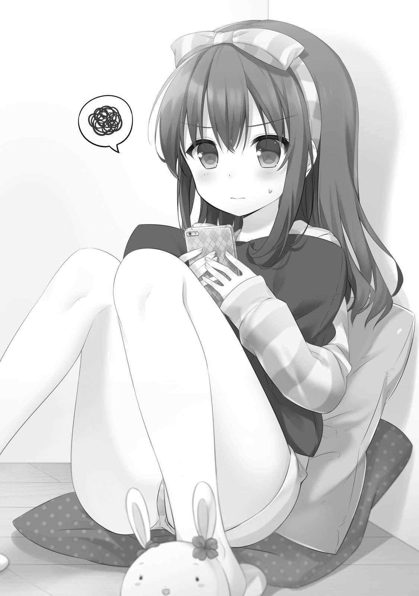
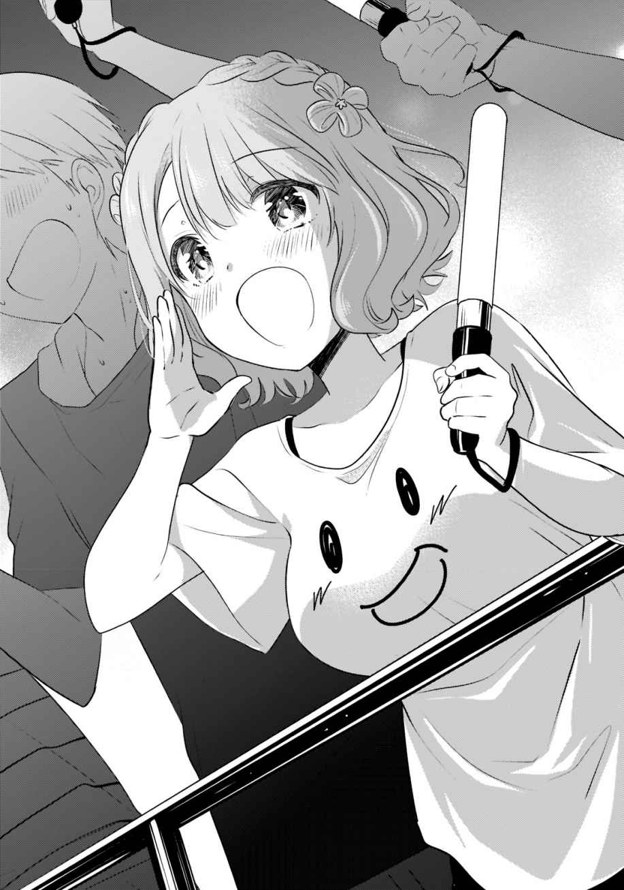
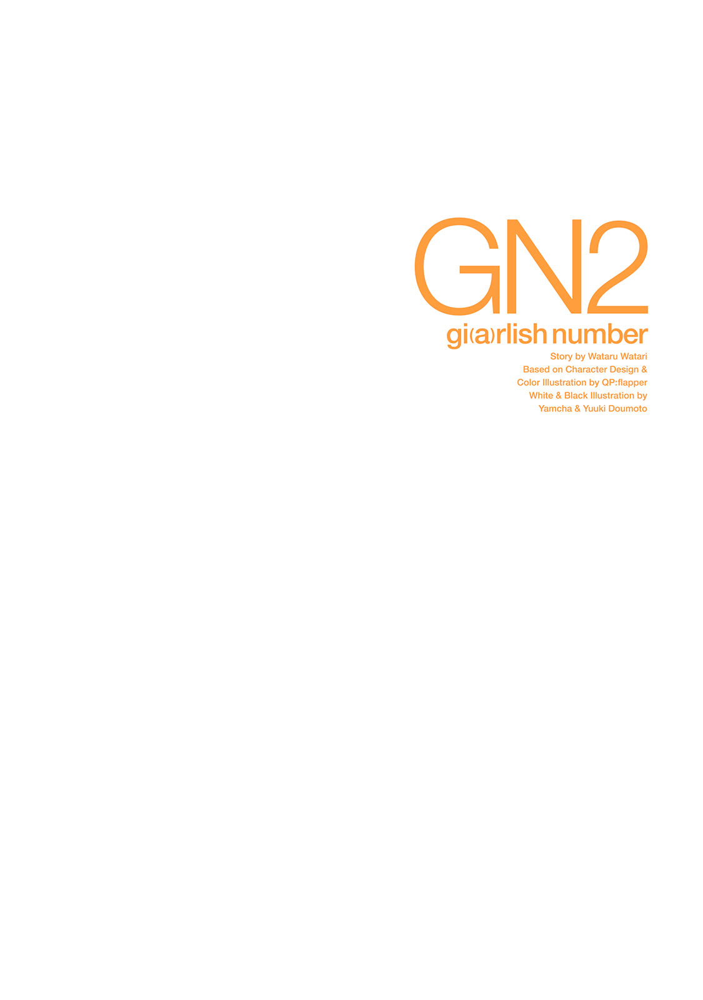

| 小説 ガーリッシュ ナンバー2<ガーリッシュ ナンバー> | |
| 渡航 & ＱＰ：ｆｌａｐｐｅｒ & やむ茶 & 堂本 裕貴 | |
| 株式会社KADOKAWA (2016) | |
本作品の全部または一部を無断で複製、転載、配信、送信したり、ホームページ上に転載することを禁止します。また、本作品の内容を無断で改変、改ざん等を行うことも禁止します。
本作品購入時にご承諾いただいた規約により、有償・無償にかかわらず本作品を第三者に譲渡することはできません。
本作品を示すサムネイルなどのイメージ画像は、再ダウンロード時に予告なく変更される場合があります。
本作品は縦書きでレイアウトされています。
また、ご覧になるリーディングシステムにより、表示の差が認められることがあります。
声優......。
英語で言うと、ＳＡＹ ＹＯＵ！
つまり、日本語で言うと、「ユー、言っちゃいなよ！」となるわけで......。
今まさに、わたしこと烏丸千歳と、わたしの友人こと久我山八重はそんな状態だった。友人......。うん、まぁ、わたしと八重が友人関係かは微妙なところだが、広義の意味で言えば、もとい女子語で言えば友人と呼んでしまって差し支えない。女子にとっては一度会ったら友達で、知り合いの知り合いだって友人だ。
つまるところ、わたしたちにとって、友人なんて言葉にそんな大した重みはないのだ。なんならうちの近所のネパールインド料理屋さんも友人って名前だし。
そう考えたら世の中だいたい友達、友人。
そんなわけで、わたしは友人である八重と掘りごたつの座卓に仲良く並んで座って、睨み合うことしばし......。
ホットグラスをことりと置いて、一呼吸。先手を取ったのはわたしだった。
「......八重はどの辺のラインの声優に消えてほしいと思ってるの？」
「べ、別に消えてほしいとかそういうのはないよぉ！ ていうか、目標の話してたのに、なんでそんな質問になっちゃったの!?」
はわはわしながら八重が手をぶんぶんと横に振った。ぷくぷくと頰を膨らませる八重の言うこともまぁもっともではある。
いや、ほんとなんでこんな話になっちゃったんだっけ......。
はてと首を捻り、記憶を手繰る。
☆ ☆ ☆
ことの発端はわたしの兄にしてマネージャーである烏丸悟浄だ。
プロフィールと宣材写真の更新をしたその帰り道のこと。
悟浄君が珍しく、わたしたちを食事に誘った。
「飯、食ってくか」
そんな控えめな、ともすれば奥ゆかしさすら感じる誘い文句にわたしと八重は特に否やを唱えることもなく、てくてく悟浄君の後についていった。
向かった先は事務所からやや離れた新宿の個室居酒屋だ。
まぁ、居酒屋といっても、わたしと八重はまだぎりぎり未成年なので、お酒は飲めない。
悟浄君だけがとりあえず生を頼み、わたしと八重はほうじ茶ホット。
こういうときにお酒を飲めない人の定番はウーロン茶なのかもしれないが、なんでもウーロン茶は喉の油分をとってしまうとかなんとかで、声優さんはあんまりウーロン茶を飲まないものらしい。
養成所へ通っていた頃、イキッた同期の子たちがそんなことを言っていた。いや、ほんとかどうかは知らんけど。
ただ、その頃の癖というか、「声優の卵だもんね！ 普段から気を付けなきゃ！」みたいな意識高い系同調圧力に屈した結果、あまりウーロン茶は飲まなくなった。
まぁ、喉にいい悪いだけで考えてしまうと、カフェインもアルコールも冷たい飲み物もあんまりよろしくないので、一生白湯飲むしかなくなっちゃうんだけど。
果たして、あの意識高い系無精卵たちは今頃どうしているのだろうか......。
などと、懐かしい記憶に思いを馳せていると悟浄君がジョッキを軽く上げる。
「まぁ、とりあえず......お疲れ様」
「お、お疲れ様です......」
「おつかれー」
悟浄君がとった乾杯の音頭に八重とわたしが続く。キンキンに冷えて氷がついているジョッキにホットグラスをがちんとぶつけた。
ぐいーっと勢いよく中生を呷る悟浄君をしり目に、わたしと八重はあったかいほうじ茶をちびちびと飲み始める。
ファーストドリンクのタイミングと同時に手早く済ませたフードオーダーが運ばれてくるまで、悟浄君とは特に言葉を交わすこともなく、わたしと八重はわいきゃい言いながら今日撮った写真を見せ合っていた。
悟浄君から借りたタブレット。その画面を指先でしゃしゃっと撫でてはチェック用の画像データを見て、なんとなく感想を述べる。
「わぁ！ ちーちゃん可愛い！」
八重がぱちぱち手を打って、わたしの写真を褒めてくれる。しまった、先手を取られてしまった......。
こうなると、わたしに取れる選択肢は二つしか残されていない。
一つは「えー、そんなことないよー。ほら、これとか目半開きで絶対おかしいもん！ それに角度もなー、正面からだと太って見えるし......。はぁ、マヂブスすぎてつらたん......はぁ。可愛くなりたい可愛くなりたい可愛くなりたい......」などと言いつつ、夜の宇治橋あたりを涙ながらに走って謙遜すること。
もう一つは「八重の方が可愛いじゃーん！ 可愛いし可愛いし可愛いじゃーん！ かわえかわえかわえかわえ......」とどこがどう可愛いのか、論拠はまるで示さずに一生可愛いと言い続けるｂｏｔと化すかである。
この際、本当にわたしが自分のことを可愛くないと思っているか、あるいは本当に八重のことを可愛いと思っているかは問題ではない。
この写真、可愛いと君が言ったから、自虐をするか褒め返すのが、乙女のたしなみ......。
いや、実際、八重はわたしから見ても可愛いのだが、その乙女理論と乙女作法に則って「可愛い」などと言ってしまうとまるで噓のように聞こえやしないだろうか......。
そう思うと、軽々に「八重の方が可愛いじゃーん！」と言うのも憚られる。
言葉面そのものに噓がなくとも、聞く者の心持ち、認識次第では混じりけのない真実だって悪意のある虚言と取られることだってある。
わたしは噓だらけの仕事をしている身であるからして、なるべくプライベートでは噓を吐きたくないのだ。
であるならば、自分を下げる謙遜発言をすることで乙女バランスを取るべきなのだが、それはそれで困ったことになる。
わたし、結構割りかし普通にそこそこなかなか可愛いからなぁ......。
自分が可愛くないと言えば噓になる。だって、わたしは我が身が一番可愛いからね！ ちょっと意味が違うね！
ともあれ、謙遜や自虐も過ぎれば嫌味や虚言になるというもの。こうなると、わたしが口にできる言葉はかなり限られてくるな......。
「八重も可愛いよ。可愛い可愛い八重可愛い。可愛い八重」
「......なんか全然思ってなさそうだよぉ！ むしろバカにされてる気がするよぉ！」
八重が瞳を潤ませていじいじとわたしの袖を引っ張る。
ふふふ......。これぞ何度も言うことによって、言葉そのものの価値、信頼度を下げるという高等テクニック......。噓は吐いていないのに噓っぽく聞こえるという、法廷で争うことになっても勝てるコミュニケーション術......。女子のみんな！ 何度も可愛い可愛いって言ってると、すごい噓っぽく聞こえてくるから気を付けようね！
だいたいの女子と来たら、息を吐くように可愛いって言うし、息を吐くように噓を吐くからな。つまり、息＝可愛い。息＝噓。したがって、可愛い＝噓という方程式が成り立ってしまう。となれば、「可愛いは作れる！」という話も信じられるというもの。
まぁ、変な話。
そうやって可愛いを作っていくのも、わたしたちの仕事だと言えなくはない。
アニメやドラマＣＤのキャラクターを演じるその前に、わたしたちは声優という存在を演じなければならないわけだし。
誰だって日常的に、至極当たり前にやっている自分自身を演じるという行為。
その時々に属しているコミュニティから求められる役割と与えられたシチュエーションに応じてわたしたちは自分という存在を形作る。
この世は舞台、人はみな役者。
その中で、わたしたち声優は個人として以外の自身を、虚飾し、演じていかなければならない。
このプロフィールの写真だってそうだ。
ここに写っているわたしは確かにわたしだけれど、どこか澄ましていて、どこかすかしていて......。改めて見てみるとなんだか落ち着かない。
「まぁ、写真は好きなの選べ......」
ジョッキを呷った悟浄君が呆れたように言った。そして、少々喉の調子を確かめるように咳払いをすると、わたしと八重に向き直る。
「千歳、久我山さん」
「はいよ」
「は、はい......」
さっきよりもいくらか真剣な様子の悟浄君の声音にわたしも八重も少々居住まいを正す。
それを確かめてから悟浄君がゲンドウポーズでじろっとわたしたちを見据えた。
「......二人は、どういう声優になりたい？」
だしぬけの問いかけに、わたしと八重は互いに顔を見合わせて、二、三度、目を瞬かせる。
「......な、なんか面接みたいですね」
八重がおそるおそる悟浄君の方を窺う。
違うよ、八重。そうじゃないよ......、これはあれだよ、説教だよ......。付き合いの長いわたしにはわかる......。そんなことを思いつつ、じとっと眇めるように悟浄君を見る。
「まぁ、面接と言えなくもないが、そんな大したもんじゃない。そういうのよりは意識改革とか自己啓発とか......まぁ、あとモチベーションアップのために聞いておきたいんだ」
あにはからんや、悟浄君はそんな切り出し方をした。兄だけに......。
「やっぱりお説教だった......」
ふっと諦めにも似た吐息が漏れた。すると、悟浄君が少々むっとする。
「そうじゃない。うちの事務所は年に一回くらいこういう話をするんだ」
ほえーとした顔で聞いていた八重が静かに挙手した。はい久我山君とばかりに悟浄君がうんと頷く。
「えっと......、査定ってやつですか？」
「ああ、そういうシステムが存在する事務所もあるが、うちの場合はそんな堅苦しいもんじゃない。ほんとに面談程度だ」
ほう、査定とな......。大きい事務所だとそういうのがあると聞きますな。近年の実績をもとに偉い人たちと話し合って、次年度も所属できるかが決まるとかなんとか。無論、所属云々だけでなく、契約事項等々の見直しなんかもあるんだろうけど。具体的にはマネジメント料の料率とかイベントとかの最低ギャラ保証とかね！ わたしも早くわがまま言えるようになりたいものです......。
などと適当ぶっこいていられるのも、うちの事務所にガチの査定がないからだ。もし、わたしが某大手事務所所属だったらわたしなんてギリギリ即切り間違いなし。全然仕事してないし、その目途も立ってないからな......。
「面談、ですか」
八重が緊張したように、膝の上に置いた手をきゅっと握り込む。
他の事務所なら切られているかも......という危機感。それはわたしと似たような状況である八重にとってもかなりリアルに感じられることだろう。
二人してやや神妙な顔をしていると、悟浄君がふっと苦笑を漏らす。
「別に特別なことじゃない。割りとどこの会社でもタイミング見てやるもんだ。考課とか考査とか、まぁ、言い方はいろいろだが......」
「そうは言われましても、わたくしたち、社会人経験が希薄なもんでしてね......」
これだから社畜は困る......。すぐに会社員の尺度に当てはめてものを言うんだから......。
わたしや八重くらいの若い世代の声優だと、高校を卒業したら養成所なり専門学校なりを出てそのまま声優、ってパターンが多いんだから社畜っぽい話はあんまりわかんないんだよな......。
「じゃあ、なおさらちゃんと考えないとな。オーディションも近いし、いい機会だ」
悟浄君が口元をやや釣り上げて、意地悪そうな顔をする。
わたしの大きな瞳と違って、ちょっと切れ長、鋭い目つき──。切っ先にも似た眼光がわたしと八重に向けられる。
「どういう声優になりたい？」
改めて、悟浄君は......。ナンバーワンプロデュースマネージャー烏丸悟浄はそう問うた。
その問いかけに対して、即座に答えは出てこない。
別段難しいことを聞かれたわけではないけれど、わたしも八重もしばし逡巡する。
もし、これが歴とした面接での質問であればいくらか形式ばった四角四面な絵空事や綺麗事をたんたんと答えていただろう。
けれど、妙に砕けた、公と私の区別を付けづらい場だからこそ、わたしはうまく言葉を紡ぐことができなかった。
他人に求められているであろう答えと、自分が望んでいる答え。建前と本音がぐるぐる回る。
悟浄君はわたしのお兄ちゃんだけど、一応、わたしのマネージャーでもあって......。となると、どう答えるのが正解なんだ？
むむむっと腕を組んで頭を捻っていると、悟浄君が追加注文したジョッキを呷る。
しばらくはそのままわたしと八重の回答を待っていたようだったが、ぐぐっと一杯飲み干すと、満足げな吐息を吐く。そして、苦そうな泡を指先で拭って静かな笑みを漏らした。
「......まぁ、目標とか抱負とかそういうのを聞かせてもらえればいい」
「そ、それなら、まぁ......」
相変わらず漠然とした問いではあるが、悟浄君の言葉面よりも態度を見るに、それっぽいことを言えばとりあえずこの場は勘弁してくれそうな空気感ではある。こうね、役者たるもの、文字よりも空気を読まないとね！
ふむん、それじゃあどうしよっかなと考えつつ、ちらっと横の八重を見やると、八重は探り探りと言った感じでゆっくり話し始める。
「えっと、私は子供に夢を与えられるような......」
「却下」
「ふぇ」
我知らず鋭くなったわたしの声に八重がぴくっと肩を竦める。
っすぞてめえ......。どっかで聞いたことありそうなテンプレ回答しやがって......。
そんなテンプレ回答、オリジナルアニメなのに「ずっと前から関わりたかった作品なので本当に嬉しいです！」ってキャストコメント出しちゃうくらいやばいだろ......。
「さすが八重、ペラいな......」
「ぺ、ペラくないよぉ！」
「いやいや、ぺらっぺらだよぺらっぺら！ だいたい、可愛いキャラクターの中に人がいるなんて知ったら子供の夢は逆に壊れちゃうよ」
そう、それはあたかもサンタクロースを信じる子供に、「サンタさんなんていないんだよ、あれは君の親御さん」と因果を含めるように言い聞かせるのに似ているかもしれない。
声優という存在をいたずらに誇示することが子供の夢を壊す行為でないとどうして言えよう。
もう、八重ったら夢の破壊者！ 子供の大敵！ 禽獣にも劣る忌まわしき罪人なんだから！ 「キャベツ畑」や「コウノトリ」を信じている可愛い女のコに無修正のポルノをつきつけるときを想像するような下卑た快感を味わおうなんて趣味が悪いぞ♪
などと、そこまで言うつもりはまったくないのだが、軽々しく子供に夢を云々などと言い出すのはどうかしらと思わなくもない。
幼児たちが声優という存在をどこまで認識できているかは実際微妙な問題のような気もするし、別に声優一人が夢を与えているわけでもないようにもわたしには思える。そもそも夢を与えるなどと言い出すのが既におこがましいのではなかろうか。与えるというのがなんだかこう......上から感があってあんまり好きじゃないんだよね......。
夢を見てもらえるような、くらいのニュアンスの方が個人的には好きだ。とはいえ、わたしごとき木っ端小童にできるのはせいぜいそのお手伝いくらいなのだけれど。
「......う、うーん。そっかなぁ......、そうかも、そうな気もする」
八重はぐうの音も出ないのか、ひとしきり唸ると考え込んでしまった。
まぁね、ちょっとペラかったからね、仕方ないね。
そのちょっとばかりあんまりなペラさにはさしもの悟浄君も、やや苦々しげな顔をしている。
「まぁ、もう少し具体的な方がいいな......」
「はう......」
八重がしゅんと肩を落とす。そこに追い打ちを掛けるように間違えた励ますように、わたしは八重の背中をぽんぽん撫でた。
「まぁ、でも八重っぽかったよ。なんていうか客ウケは良さそう。グッジョブ八重！」
「......ちーちゃんは人を褒めるのがへたくそすぎるよぅ」
八重が少々恨めしそうな眼差しを一瞬向けてきたがすぐにふいっと逸らされてしまった。あら、ご機嫌斜めの雨模様かしら。まぁ、別に褒めてはいないからな......。
「私は......、昔からアニメ好きだったから、なんとなくそのままこういう業界に入るんだろうなって思ってただけなんだけどなぁ......」
つんと顔を背けた八重がぽつりと言った。それを聞いていたわたしはついふっと笑んでしまう。
「そういう方が八重っぽいじゃん」
「そ、そうかな......」
わたしの言葉が意外だったのか、八重は照れるようにふわふわの髪の毛をいじる。
「そうだよ。だいたいの声優志望が似たようなこと考えてこの業界目指してるのに、しれっと声優になれてるあたりすっごい八重っぽい」
「なんか悪意がある気がするよぅ！ ちーちゃんほんと褒めるのへたすぎない!?」
まぁ、やっぱり別に褒めてはいないからなぁ......。あ、いや褒めてはいるか。
たぶん声優を目指す人の誰も彼もが、自分が声優を目指すに至ったドラマチックなエピソードや泣ける感動秘話を持っているわけではあるまい。そうやすやすと運命的な出会いがそこかしこで繰り広げられているとは思えない。
だから、大半の人たちは八重と同じような理由で声優を目指し、八重と同じような理想を掲げているはずだ。無論、腹の底でなにを思っているかは知らないが、表向き聞こえのいいように言葉遊びをした結果、先ほどのような夢を与える云々になるのだと思う。似たようなモチベーションなのに、結果に差がついてしまうのは残酷だよなぁ......。
などと、思っていると、八重はぷくっと頰を膨らませてわたしを指さす。
「そ、そういうちーちゃんはどうなの！ どんな声優さんになりたいの!?」
「わたし？ わたしは......」
そうだった。わたしも答えなければいけなかった。八重を責めることに夢中になってて自分のことがおろそかになってしまっていたぜ......。
問われてふむんと考える。すると、八重が興味ありげにじりっとにじり寄ってきた。
互いの顔がちょっと近づいたところで、わたしがうんと頷く。
「......売れてる声優、かな」
「売れてる声優......」
おうむ返しに言う八重から漂ってくるあからさまながっかり感......。やっぱりこういう答えじゃダメかー。
と思った直後。苦笑交じりの声が耳に届く。
「お前のもだいぶざっくりだな......。もっと具体的に考えてみろ」
その言葉が意外で、わたしは思わず悟浄君を二度見してしまった。
結構顔が赤くなってきた悟浄君はいつの間にか注文していた日本酒をちびちびとやりつつ、存外穏やかな表情をしていた。
ちょっとびっくり......。てっきり悟浄君は、もっと真面目にとかストイックにとかあれこれ口やかましく言ってくるかと思ったのに......。
「あ、うん。具体的にね......」
だもんで、わたしの返答も驚きを引きずってしまっていた。
まぁ、そういうことなら、あんまり抽象的なワードは外して考える方がいいんだろうな。
目標......。目標か。
ふーんと考えていると、ふと思いつく。
「目標にする人、とかでもいいの？」
「ああ。むしろ、そっちの方がわかりやすいな。ついでにその人の名前を挙げた理由も添えてくれるとなお良い。自分の目指す方向性やスケール感、自分のアピールポイントがどんな部分にあると考えているのか、その辺が俺に伝わると今後のマネジメントの参考にもなる」
悟浄君の話が長すぎる......。仕事に対して真面目なのはいいんだけど、こういうところ、たまに重いなー引くなーモテなそうだなーって思います。
「おけおけおっけー。ちょっと考えてみる」
クッソ雑に返事をしながら、思うところをさくっとまとめる。
目標にする人、というのはつまるところ、自分にとってのライバル。ありていに言ってしまえば、商売敵ということに他ならない......。
ライバル、商売敵......。
ふと、横にいる八重に目をやる。
よく考えたら、八重も一応はわたしのライバルというか商売敵ではあるんだよな......。実際、これまでにオーディションでかち合ったことも何度かある。
まじまじと八重を見つめていると、八重は居心地が悪くなってきたのかもじもじと身を捩り始めた。そして、困ったようなはにかみ笑顔をにこぱっと向けてくる。
ふむ、だいたい同じくらいのレベルにいるわけだし、八重にも聞いてみよう。わたし、あんまり声優さんの名前とか知らないからな。
「......八重はどの辺のラインの声優に消えてほしいと思ってるの？」
「べ、別に消えてほしいとかそういうのはないよぉ！ ていうか、目標の話してたのに、なんでそんな質問になっちゃったの!?」
はわはわしながら八重が手をぶんぶんと横に振った。
「え、だってどういう声優になりたいかって聞かれたし......」
「なりたいか、って聞かなかった？ なんで成り代わりたいに予測変換されちゃったの？ お前、頭ＡＴＯＫ？」
......失礼な。わたしの変換精度はもう少し高い。エキサイトしちゃう翻訳くらいのレベルはあるし、なんなら洋画の翻訳できちゃうまであるかもだ。そのことをご存じで？ 知らない？ こいつはコトだ！
などと翻訳家ごっこをしている場合ではない。一応ちゃんと目標策定しなくては。
「八重。今、売れてる人の名前挙げてみて」
問うと、八重は口元に指を当て、はてと首を捻る。
「えっと......かおたんさん、とか？」
「あー」
かおたんさん......。うちの事務所の先輩、長沼かおりさん......。まぁ、ナンプロでは中堅どころ、業界内でも中堅どころといった感じか。
「でもさ、かおたんさんはあれじゃん。結構歳が上じゃん」
「そ、そうだね」
「そしたらライバルって感じじゃなくない？」
「けど、かおたんさん。若い役もやるし......。声優さんって声だけで演じるからこそ、あんまり年齢って関係ないんじゃないかなぁ......」
「八重！ それは甘いよ！ できるできないやるやらないじゃないんだよ！ なんかこう、流れとか世代とかあるじゃん！」
わたしの適当な反論に八重が一瞬はっとなる。
「......ちーちゃんの言うことはざっくりしすぎなのにたまに説得力あるから困るよぅ」
完全論破。まーた論破してしまったのか。敗北を知りたい。
実際問題、キャスティングに関して世代という概念が作用する一面は存在すると思う。どこまで意図的恣意的にそれが働いているかは、わたしはキャスティング側の人間ではないからわからないけれど、今が旬のもぎたてフレッシュキャスティングを好む現場は結構ある。そうした場合にはわたしとかおたんさんが役を争うことはほとんどないだろう。だてに、クソラノベ原作のアニメに何本もモブで出ていないぞ！ こちとらセリフもほとんどないから一日中ぼーっとブースの中、観察してるからな！
「いや待て。久我山さんの言うことは正しい。千歳。長沼さんを目標にすること自体は間違ってないぞ。若いうちからいろんな作品やってきてるから役幅も広いし、ランクついても仕事量が目に見えて減ったりしてない。ある種理想的なキャリアの重ね方だな」
目を閉じた悟浄君がうんうん頷きながらお猪口を傾けている。
「いや、でも、別にかおたんさんが消えてもわたしの仕事が増えるわけじゃないし......」
「......それは、まぁ、そうだが。......あれ？ 目標の話をしてなかった？」
わたしの反駁に悟浄君の頭がくてんと傾く。結構お酒が進んでいるらしい。今なら簡単に言いくるめられそう。
「そう。だから目標の話だよ。もっと手近なところからまずは潰して直近の仕事を奪いつつ将来脅威になる芽を摘んでいきたいって言うか......」
言うと、悟浄君の肩がぴくっと震える。そして、すっと鋭い視線が動いた。......あらぬ方向へ。
「......一理あるな」
虚ろな眼差しでそう呟くと、悟浄君がかくかくっと頷く。いや、これは眠くなってきて舟をこいでいるだけなのかな。
「ちーちゃんってすごいなぁ......」
わたしと悟浄君のやり取りを見て、八重がぽつりと呟く。けれど、その声は感心と言うよりもどこか呆れや諦めのニュアンスが強いように思えるのは気のせいでしょうか。
「うーん、同世代で売れてる人かぁ......」
言いながら、八重がバッグを漁り始めた。そこからごそごそと取り出してきたのは『月刊声優アルカディア』。いわゆる声優雑誌というやつだ。
その表紙を飾るのはほとんどアイドルと見紛わんばかりにばっちり決まった二人の女の子。
八重がそのうちの一人をぴっと指さして、その子の名前を口にした。
「苑生百花ちゃんとか？」
ふわふわとした柔らかそうな金髪に輝く小さなティアラ。フリルやリボンがあしらわれた衣装に身を包む彼女は、その大きな瞳も相まって、大人しく取り澄ましていれば、それこそお人形のような、という形容が似合っただろう。
けれど、彼女は違う。その個々のパーツから受ける清楚静謐な少女らしさだけではなく、あどけなくも生き生きとした少女らしさも宿っている。
そう感じさせるのは、彼女の弾けるような明るい笑顔のためだろう。
苑生百花。わたしも現場で一緒になったことがある現役女子高生声優......。いや、アーティスト活動もばりばりしていると聞いたことがあるから、声優という括りに収まるのかはちょっとわからないが。
しかし、わたしが現場で見かける少し気だるげな今時女の子感は雑誌の表紙からは感じられない。生気に満ち溢れ輝かんばかりの魅力を放つ彼女の姿は女のわたしが見ても思わず「可愛い......」と呟いてしまいそうになる。箸が転がっても可愛いと言ってしまうお年頃のわたしがよく口にする「可愛いよ〜（仕草や髪型、性格が）」というハイコンテクストな女子語としての可愛いではなく、純粋にこぼれ出てしまうもののあはれ......。
「苑生さんは毎クール名前見るよね。今一番勢いがあるんじゃないかなぁ。歌もうまいし、人気あるよね。私も好きなんだぁ」
表紙に写る苑生百花に気を取られていると、八重がふむふむ頷きながら楽しそうな顔でそんなことを言っていた。しかし、こやつ、ほんとにただの声優ファンなのでは......。一応はライバルだぞ......、向こうはわたしらのことなんて知りもしないだろうけど......。
などと思っていると、八重の指先がそのまま横にスライドする。
そこに写る人にも見覚えがあった。
流れるような黒髪と涼やかな切れ長の瞳。落ち着いた印象のタイトスカートにカットソー。そのシルエットはまさに曲線美と呼ぶにふさわしい。
「あとは柴崎万葉さんも。お芝居素敵だし綺麗だし声も可愛い。とても好きとても人気」
そういう八重の声にはどこか陶然とした響きがあり、もうこれただのファンっていうかガチ恋勢なんじゃないのか......。
というか、この柴崎万葉さんはわたしも名前を知っている。八重に教えられたし。
表紙に写る姿を見て、綺麗だな、と単純にそう思う。写真越しにも如実にわかる長くしなやか手脚やくびれた腰はわたしと違う生き物すぎて、嫉妬する気すら起きない。
極めつきはつい先だって撮影スタジオで見かけた、どこか愁いを含んだ控えめな笑顔。それは、この表紙でも不思議な引力を伴って、わたしの視線を吸い寄せる。
並んで写る苑生百花と柴崎万葉。対照的で、方向性も真逆に見える二人。
けれど、トレンドの指標ともいえる専門雑誌の表紙を飾っている事実と、声優ファンである八重の口ぶりから鑑みても、この二人は今現在の声優業界の最前線にいるのだろう。年齢も、わたしとそう離れてはいない。
であるならば......。
「んー。んじゃその二人みたいになるか。よし、目標決定。あ、これありがと」
見せてもらっていた『月刊声優アルカディア』をぱらぱらーっとパラ見してのち、ぱたんと勢いよく閉じて八重に返す。と、それを受け取った八重がぽけーっと口を開けてわたしを見ていた。
「あ、あの......、ちーちゃん、そういう目標の立て方でいいの？」
「いーんだよぐりーんだよ？」
はてと首を捻って軽く答える。
「だって、......ふわっふわっした目標立ててもしょうがないじゃん。倒す相手が見えれば対策も立てられるってもんよ」
ふふんと得意げに胸を張ってそう言うと、八重がきらきらした眼差しを向けてきた。
「なるほどー。対策ってどういうことするの？」
「......え？」
「......へ？」
互いに見合うことしばし。わたしはやや体を引き気味怪訝な目で八重を見やり、八重はぽかーんとした顔で上半身ごと大きく首を曲げていた。
......お前、なんかそんな具体的なこと聞くなよ。いつだって夢を語る若者はビッグで空虚なお題目だけ唱えて気持ち良くなってるんだからさ......。
と、思いはしたものの、こんだけチョケってちょづいて調子こいたこと言っといて無為無策だったなんて恰好悪すぎる。わたしにもプライドというものがあるのだ。むしろ、プライドしかない。
ので、言語野を超回転させる。
「あ、いや、......そ、それはあれだよ！ なんか技術とかスタンス、パクるとか！ あと、その二人がやってるようなことをちょっと変えてマイナーチェンジで控えポジに回るとか！ ほら、どうせその二人は忙しくてスケジュール取れないしね！」
適当ぶっこきながらしゅしゅっと猫パンチでシャドーボクシングしてみせる。
すると、八重がわーっと感嘆の声を漏らしながらぱちぱちと手を叩く。
「......やっぱりちーちゃんはすごいなぁ」
「その考え方、あながち間違ってないから性質が悪いんだよなぁ......。まぁ、言うほど簡単なことじゃないが」
八重の拍手が耳に届いたのか、悟浄君がぷるっと肩を震わせながらなんかぶつくさ言ってた。
「直近の目標についてはだいたいわかった。まぁ、その通りに進むかはわからんが、俺も頑張ってみる」
悟浄君は自分に言い聞かせるようにうむと頷いた。ずっとお酒飲んでうつらうつらしていたからほんとに聞いていたかは怪しい。八重の目標はどこ行っちゃったんだろう......。まぁ、八重だからいいけど。八重もちゃっかりしっかりしてるから自分なりに考えはするだろうしね。黒い、さすが八重。
「じゃあ、これから先......、もっと先の話をしよう」
そう切り出して、悟浄君はお猪口に残っていた日本酒をぐいと呷った。そして、気持ち良さげにぷふーっと息を吐く。
「いいか、売れる声優には二通りのタイプしかいない」
「......ほう、聞きましょうか」
焦点があっていなさそうなおぼろげで虚ろな目ではあるが、売れると聞いちゃあ黙っていられません。わたしと八重は姿勢を正して前のめりになる。
「一つは超が付くほどの聖人君子で優しく素直な心根のガチ天使」
「ほう......」
わたし？ わたしか？ わたしのことか？
「......もう一つはクソが付くほどの腐れ外道のド畜生デビルだ」
「ほう......」
八重？ 八重か？ 八重のことか？
思い当たる節、ありありおおありオオアリクイ状態で舌なめずりせんばかりに悟浄君の次の言葉を待つ。これはもしや、わたし、珍しく褒められる流れなのでは？
と、思っていると、悟浄君が冷酒の徳利に手を伸ばす。それをすかさずわたしが奪い、手ずからお猪口に注いで差し上げた。
それに、ありがとと小さな声で返事をすると、悟浄君はちびっと酒杯を舐めて、やや重々しげに口を開く。
「これは贔屓目かもしれないが、俺はお前たちもいずれそうなるような気がしている......」
......やっぱりか！ 天使で女神な超時空ビーナスシンデレラガールなわたしもそのうちそうなる気がしていたぜ......。約束された勝利の剣だったかーやだ悟浄君見る目ある。この人も目のつけどころがシャープだね！
などと、ほくほく笑顔で悟浄君を見ると、悟浄君もうっすら笑みを浮かべていた。......八重に向けて。
「......久我山さんは、......前者かな」
「はわっ！ そんなそんな！」
顔を真っ赤にした八重が恐縮しきったようにはわはわぶんぶん手を振る。
が、特に否定する言葉は出てこない......。さすが八重、黒い。あ、いやいやいや！ 騙されておる......。悟浄、お主、すっかり騙されておるぞ......。
「で、千歳。お前は後者だな」
「ほう......」
この悟浄とかいう奴、わたしには笑顔ゼロで吐き捨てるように言いやがったぞ......。
じとっとした目つきで悟浄君を軽く睨んでいると、わたしの傍らでは八重が一生はわはわしていた。
「あ、あの、そんなほんと私、天使なんてそんなそんな！」
「まぁ、そうね。一歩譲ってわたしがデビルなのはいいんだけど、八重はそうでも......」
「譲るの一歩でいいの!? ちーちゃんが謙虚だ!?」
わたしの言葉を遮るように、八重の驚きに満ちた声が響く。それにわたしはきゃぴっとした蠱惑的なスマイルを浮かべて余裕ありげに胸を張る。
「まぁね、わたし結構小悪魔だからね」
「そうかなぁ......」
ご納得いってないようで八重が首を捻った。......やっぱり八重の方がデビルなんじゃないかな。
などと、わたしと八重がじゃれ合いという名の殺し合いをしていると、だいぶおねむな様子の悟浄君がなにかぶつぶつ言っていた。
「まぁ、そういうキャラ付けで売り出すというのも一案だ。今はそういう時代になった。もちろんリスク自体はあるが......。芝居以外の仕事に繫がる可能性も出てくる。仕事の方向性も含めて、いつも自分がなにをしたいのかを忘れないように......」
そう言う悟浄君の声がフェーダーをゆっくり下げるようにだんだんと小さくなっていく。後に残るのはかすかな寝息だけ。
かくっとテーブルに突っ伏しそうになる姿を見ると、ついつい呆れた笑みが漏れ出てしまう。
お酒強くないくせにいつも付き合いで飲まされてるっぽいしなぁ......。今日は偉い人たちもいないので、気を張ってない分、酔いが回りやすかったのかもしれない。
けれど、酔っている分だけ、悟浄君の言葉は本音に近いのだと思う。
だから、今だけは素直に話を聞いてあげよう。
──自分がなにをしたいか、か。
まぁ、とりあえずはご飯食べるかな。悟浄君の話長くて、全然食べれてないし。
そう思うが早いか、わたしはすぐに店員さんを呼ぶボタンをぽちっとな。
「八重も好きなの頼みなよ」
「えっ、いいのかな」
「いいよいいよ。別に払うのわたしじゃないし」
「そう言われると、逆に頼みづらくなるよぅ......」
困ったように言いながらも、フードメニューをいそいそとめくる堕天使な八重なのでした。
やがてやって来た店員さんにあれこれ注文し終え、しばし八重とのご歓談＆お食事タイムを楽しんだ。ここの払いが事務所の経費か悟浄君のポケットマネーかはしらないけど、誰かのお金で食べるご飯って最高に美味しいなぁ......。
相変わらず眠ったままの悟浄君を適度に放置しつつ、八重と食事を楽しんでいると、店員さんがやや申し訳なさそうな表情でやって来た。
「すいません、そろそろお席の時間なのでお先にお会計のご準備だけ、よろしいでしょうか」
「あ、はーい。わかりました」
差し出された伝票を受け取って、にこやかに微笑み返し、店員さんを見送る。
「さいふさいふ......」
いよっと立ち上がって、向かいの席へと向かう。酔って舟をこいでいる悟浄君の背後ににじり寄ると、するっと腕を回した。そして、ジャケットの胸ポケットのあたりをぽすぽすと探る。
「お、あったあった」
すいっと悟浄君のジャケットの内ポケットに手を滑り込ませ、しゅっと長財布を失敬した。さーて、おいくら万円持ってるのかしらと財布を開くと、向かい側からはわ、はわっと聞き覚えのある鳴き声がした。
ふと見やれば、お酒を飲んでいないはずの八重が真っ赤な顔をしている。
「は、はわ......。ち、ちーちゃん、な、なにしてるの......」
「え？ や、だから、財布を」
「な、なんかそれいろいろ問題あるよぉ！ ていうか、だ、抱き付く必要なかったんじゃ......」
「や、こうしないと悟浄君起きちゃうし、そうするとまたうるさいし......」
「そ、そうなんだ......。けど、なんか、なんか......。ちょ、ちょっとドキドキした......」
八重はふはぁと疲れたような吐息を漏らして、胸を撫で下ろす。この子、まーたなんか変なこと考えてるのかしら......。兄妹だし、そういうの特に意識したことないんだけどな。
......なので、意識すると、急に恥ずかしくなってくる。おかげで、ふいっと視線を逸らしてしまった。
「......ていうか、別に抱き付いてないんですけど」
ぽしょっと呟いてはみたものの、あまり声が出ていない。
おかしいな、喉にいいようにほうじ茶ホットしか飲んでないのに、......ちょっと頰が熱い。
☆ ☆ ☆
先日、悟浄君に伝えられたように、オーディションに出すためのテープを収録する日がやって来た。
オーディション台本と資料はとうの昔に受け取って、ばっちり読んだ。もう何度も読んだし、それに何度も読んだ。逆に言うと、台本とキャラ資料を読むくらいしかできることがなかった。
ここまで来たら当たって砕けろ落とした奴は砕け散れの精神で臨むほかない。
最近、足繁く通うようになり、もはや我が家感覚となったナンバーワンプロデュースのオフィスに顔を出し、一言挨拶する。そして、すぐ近くにある事務所付属養成所・難波演技研究所のオフィスへと向かった。ここには収録に使えるブースがある。
テープ録りの際にはここを使わせてもらっているのだ。
「おはようございます。よろしくお願いします」
事務机にいる方たちに挨拶をして、ブースへと向かう。と、すぐ近くの打ち合わせスペースには既に八重が来ていた。
「おはよー、八重」
「あ、ちーちゃん。おはよう」
既に時刻は十八時。充分に日は暮れているのだが、わたしたちは他の挨拶をしたことがない。
「ていうか、来るの早いね。順番わたしの後じゃなかったっけ」
「えっと......、早めに来て確認してようかなって」
ほう、さすが八重。めちゃめちゃやる気茶屋だな。
二言三言交わしはしたものの、八重はにこぱっとした笑顔を返して、すぐに、手にしていたプリントへ視線を戻してしまう。そして、口の中だけでぶつぶつと何事か呟いている。傍目に見たら普通に怖い人なわけだが、オーディション前にはよく見受けられる光景だ。
わたしもテーブルに荷物を置いて、パイプ椅子を引く。腰かけようとしたとき、八重の前に積まれている原作ライトノベルが目に入った。
読み込まれているようで付箋が覗く数冊のラノベ。表紙タイトルを確認するまでもなくわかる。今日、オーディションテープを録る作品『ソリューション×レボリューション』だろう。むしろ、この場で他のを読んでいたらどれだけ強心臓なのって話だ。
「八重、相変わらずすごいね......。それ全部読んだの......」
半ばドン引きしながら言うと、八重はなんのことかと一瞬首を捻ったが、わたしの視線から察したらしい。すぐに合点が行ったように嘆息を漏らす。
「えっと、でも、『りゅーりゅー』すっごい読みやすかったから！」
ちょっと照れでもしているのか、えへへとはにかみ笑いを浮かべる。
「いや、わたし、ほんと本読むの苦手だから読めるだけですごいよ......。......ていうか、『りゅーりゅー』ってなに」
「『りゅーりゅー』って略すんだって！ 私も本読むとすぐ眠くなっちゃうんだけど、『りゅーりゅー』はすっごくすらすら読めたよ！ なんていうか、読みやすいっていうかわかりやすいっていうか！」
八重は明るく、かつ力強く言うが果たしてそれは褒め言葉なのだろうか......。すらすら読めるとは裏を返せば構造が単純明快で特に引っ掛かる部分もなくフックが弱いということなのでは......。なんか感想として非常に浅い気がするぞ......。いえ、まぁ「深い、考えさせられた」みたいな感想でも浅く感じるのですけどね。
それにしても、『りゅーりゅー』、か。略称はちょっと可愛いな。まぁ、元のタイトルが最近のラノベっぽくないから略称も珍しい感じに収まっている気がする。ここ最近のラノベといえば、もっと死ぬほどわかりやすい一行あらすじみたいなタイトルが多いからね。表紙のデザインもそっくりなときあって正直見分けつかないときあるからね。なんならキャラ配置も展開も似てるときもあるからね。アニメ観てても見分けつかないときあるとか驚き桃の木山椒の木。
で、この『りゅーりゅー』。なんやかんやあってゲーム的異世界に転生して学園都市に通い、いろんな陰謀に巻き込まれながら、なぜか戦っていくことになるというお話で、物語の展開はコミカライズ読む限りではまぁ普通......。キャラ配置もまぁ、普通......。
「やれやれ」「ったく」「勘弁してくれ」が口癖のチート級に強い主人公・幸人を中心にいろんな女の子が出てくる。
今回、オーディションが行われるのは、その女の子たちのキャラだ。
一人は正ヒロインっぽい感じ、というか一巻の表紙を飾っている赤系の髪が目立つルナ。このキャラは明るく元気で素直。主人公の幸人が最初に出会うキャラクターで、作中異世界ではどこぞの王女様なのだそうだ。何者にも屈しない気高さを持つが、女の子らしい一面もある、らしい......。
もう一人はそのライバルらしい小陽というキャラクター。主人公と同じく転生してきたらしいともっぱらの噂だが真相はまだわからないミステリアスな雰囲気を放つクールビューティで、青っぽい髪色が特徴的だ。常に本心を見せず、主人公を誘惑するような言動をすることも多いが、女の子らしいピュアな一面もある、らしい......。
そして、最後の一人。主人公のおかげで奴隷の身分から解放されて以来、主人公のことをマスターと呼んで慕うアスカという茶髪でメイド服のキャラクター。あわてんぼうでドジな失敗をすることもあるけれどめげない芯の強さを持っているが、女の子らしい一面もある、らしい......。
すべて「らしい」とついてしまうのはわたしが原作をすべて読めておらず、いただいた資料を読んだ感想だからである。これがちゃんと原作を読んだ人間であればまた印象は変わるのかもしれない。
その原作全巻読破したっぽい八重の様子をちらっと見る。八重は原作本とオーディション台本を首っ引きで突っつき合わせてなにやら確認しているようだった。
ずらっと並べられたライトノベルは六冊ほど。それぞれ違う女の子キャラクターが表紙を飾っている。オーディションを受けるルナ、小陽、アスカはそれぞれ一巻、二巻、三巻の表紙だ。それ以降の巻にもまた違う女の子キャラが描かれている。
オーディション来てるキャラ以外にも結構たくさんいるんだな......。コミカライズ版しか読んでないから見たことないキャラもいる。
まぁ、ハーレム系ってやつなのかしらね。などと思いつつ、並んだ表紙をじーっと眺める。
「ね、八重はどれ受けるの？」
「えっとね、この子！」
台本に赤ペンでメモ書きしていた八重がふいーっと一息吐いたタイミングを見計らってそんな質問をすると、八重はすっとラノベの表紙を指さした。三巻の表紙、アスカだ。
「あー......、なんか八重に合ってそう」
「烏丸さんにもそう言われて勧められたの。ちーちゃんは？」
「ルナ受けるよ」
複数キャラのオーディションが来た場合、たいていはマネージャーが振り分けることが多い。うちの事務所も同様だ。知らない作品や原作のないオリジナル作品など、役者一人ではなかなか判断がつかない案件も多いから、声質や芝居の癖などを把握しているマネージャーが差配する方がうまくはまる場合も多々あるからだろう。
もちろん、選び方は人によりけり事務所によりけり。中には自分で決める人もいるし、マネージャーと相談して決める人もいるんだろうけど。
そんなわけで今回、わたしが悟浄君から振り分けられたのはルナだ。
だが、ぶっちゃけ受かる気はまったくしていない。なんせメインもメイン、ど真ん中メインヒロインである以上、競争率はアホほど高いだろう。であれば、後で全キャラ録らせてもらって、一番いいのを出すのが正解な気がしている。へたな鉄砲数撃ちゃ当たる、というわけでもないが、いろんな可能性を探ってみる方がわたしには有意だ。
......まぁ、ほんとオーディションはやってみるまでわからない。合ってなくてもドへたくそでも不思議な巡りあわせで役が決まってしまうことだってあると聞く。
となれば、わたしにできることは祈ることくらい。なむなむと手を合わせ、目を閉じていると、背後でがこっと音がした。
振り返ると、ちょうど悟浄君がブースから出てくるところだった。
「悪い、待たせた。じゃあ、千歳から......」
「あいよ」
わたしが立ち上がると、なぜか八重も同時に立ち上がった。
「あ、あの！ け、見学してもいいですか！」
並々ならぬ気合いを放つ八重。悟浄君がちらとわたしを見る。
「千歳が良ければ」
「ん、別にいいよ」
「あ、ありがとうございます！」
八重がはわっと慌てたようにお辞儀をし、わたしと悟浄君に続いて収録ブースへと入る。
まぁ、どの道、アニメが放送されれば誰もが聞くことになるのだ。今ここで八重に聞かれることを敬遠したりはしない。
悟浄君と八重は調整室側へ、わたしは収録ブース側へと回り、ガラス一枚隔てる形になる。
『マイク、高さ大丈夫か？』
トークバックから悟浄君の声が聞こえる。
「ん、オッケー」
『回してくからキューランプ点いたら自分のタイミングで始めてくれ』
「はいよー」
短く答えて、軽ーくストレッチ。背筋を伸ばしたらマイク前で大きく深呼吸。
体の中に残った空気を、息と一緒にいろんなものを、全部全部出し切ってしまう。
烏丸千歳という自分もすっかり全部なくしてしまって、後はただプリントアウトされた台本にあるテキストだけが残っていた。
絵はない。人もいない。ただ文字の上を行き交う情報で世界を組み上げる。
そして、その世界の朝を告げるように、キューランプが明滅した。
「あなたに決闘を申し込むわ！」
第一声はそんなセリフだった。最初はいがみ合い、ことあるごとにぶつかる主人公幸人とヒロインのルナ。しかし、次第に打ち解け始める。シーンが進むごとに、幸人に対する感情、距離感が変わっていく。
「は、はぁ!? い、いきなりなに言っているのぉ!? ば、バッカじゃないの!? な、ないっ！ ないからっ！ そういうの！」
台本に書かれているセリフ、記されたト書きを素直に読んで、演じていく。
オーディションの時間はごくごく短い。
スタジオでやる場合でも、だいたい一人五分前後。送られてくる数が多いテープオーディションなら一人分の音声データの尺は二分ちょっとくらいしかない。二桁に満たないセリフ数で判断されてしまうのだ。実に短くて、濃密なわたしとルナの時間。
台本にあったすべてのシーンを演じ終えると、後にあるのは心地良い静寂だけ。
わたしの他に音を立てるものがない空間。そこへ、トークバックを介した悟浄君の声が響いてきた。
『千歳......』
「はいよ」
なにかディレクションでもあるのかしらと振り返る。すると、ガラスの向こう側にいる悟浄君は神妙な顔をしていた。
『お前......』
「え、な、なに......」
悟浄君がゆっくりと息を吐いてから、こくりと喉を動かしたのが見えた。
先ほどからの重々しげな口ぶりと、収録ブースの静けさのせいで、空気が妙に張りつめている。
ついついわたしも固唾を吞んで、続く言葉を待ってしまう。すると、悟浄君はゆっくりと髪をかき上げ、真剣な表情で告げた。
『すげぇ普通だ。取り立ててなにか言うこともない。めちゃくちゃありがちで想像の範疇をまったく超えてこない。ありていに言って、中途半端だ......』
「......ほう」
なんだよ、褒めるのかと思ったのに......。
「つまりいいの？ 悪いの？ どうしたらいいの？」
『や、全然ダメだわ。なんかもうダメ』
「なんですと!?」
なんてふわっとしたダメ出し！ そういうリテイク指示、マジで現場が混乱するんですけど！
☆ ☆ ☆
スピーカーから千歳のきゃんきゃん吠える声が響いてくる。
『なんかダメとかそんなの通らないよ！ 納得のいく説明をしてもらわなきゃ！ ちょっと!? 悟浄君、聞いてる!?』
聞いてないです。思わず、すーっとフェーダーを下げてしまった。が、千歳はそれに気づいていないのか、ガラスの向こうで腕を振り回し、わちゃわちゃ動いては抗議しているようだった。
それを見て、思わずため息がこぼれ出る。
困ったなぁ、この子......。渡してあるキャラ設定の印象には近いんだけど、原作のテキストから受ける印象とはちょっと違う......。原作読んでないのが丸わかりだな......。
まぁ、そうしたちぐはぐな印象の原因は、オーディション台本の出来が悪いというのもある。セリフこそ原作のままだが、ト書きに必要な情報が足りていない......。こういう原稿は稀によくある。
加えて言えば、千歳は中途半端に芝居のセンスがあるというか、変に空気を読む力があるので、掛け合いからなにかを摑んでいくことの方が得意なタイプなのだ。一概に千歳を責めるわけにもいかない。
それに、テープオーディションの場合、原作を読まないで臨むこともままある。
聞くのは声質であって芝居ではない、という理解のもと、やることも多いし、いくつも仕事を抱えている人間なら原作を読む時間がない場合もある。それに、読み込んだとしても間違えて役を作り込んでしまえば、逆効果を生むことにも繫がりかねない。
だから、原作を読むべきかという問いに対する答えは、タイトル・バイ・タイトル、ケース・バイ・ケースと言わざるを得ない。
とはいえ、千歳はまだ新人だ。新人のうちは時間もあるわけだし、原作を隅から隅まで読み込んで役作りをした方がいい、という意見もあるかもしれない。それも一理ある。
だが、そうした原作ありきの状態に慣れきってしまうと、弊害も生まれる。
例えば原作が存在しないオリジナル作品の場合どうすればいいのか。また、原作をアニメという媒体に最適な表現にするため、決められた尺に収めるためにセリフやシーン描写が変更されている場合はどうするのか。そうした問題も起きうる。
だから、役者がすべきことは原作を読んで詳しくなることではなく、その物語を読み解く力を身に付けることなのだ。
最終アウトプットがアニメである以上、原作に描かれている意図を汲み取るだけでは足りない場合がある。文字だけでなく映像と音楽、そして時間による演出が加わっていることを鑑みなければならない。当然それらの情報量は膨大になるわけだが、役者が最初に渡されるシナリオだけでは文字数にも表現できる幅にも限りがある。
限定された情報から、求められている答えを導き出すことができるか。役者に求められているのはそうした読解力だ。
極論、いい芝居、あるいはスタッフが求める芝居をすることができるなら、原作を読んでいるかどうかは関係がない。
とりあえず、今の千歳の芝居はキャラ設定からは外れていないから、ここからディレクションでどうにか形にすることはできるだろうが、少し時間がかかりそうだな......。
と、考えていると、久我山がおそるおそる話しかけてきた。
「あ、あの、烏丸さん......」
「ん？」
振り返ると久我山が困ったように笑いながら前方を指さしている。
「ちーちゃん、呼んでますけど......」
ふと見やれば、ガラスの向こうでは千歳がこんこんとガラスを叩いていた。フェーダーを下げてしまっているからマイクは音を拾っていないが、唇を読むに、俺の名前を呼んでいるらしい。ずっと無視していたせいか、少し拗ねたような表情をしていた。それが妙にあどけなく、思わず苦笑してしまう。
「......お前はもう一番最後な。居残り」
トークバックのボタンを押して口早に告げると、ガラスの向こうでは千歳がむきーっとなっていたが無視無視。こいつの場合、時間を掛けて、最後まで諦めずにやってみるしかない。
「次、久我山さん」
「は、はい！」
一声掛けて、久我山と一緒に収録ブースへと入る。ぶんむくれている千歳を適当にあしらい追い出して、久我山に合わせてマイクの高さを調整する。その間、久我山は直立不動で待っていた。
「別にテープだし、そんなに緊張しなくていいから」
「は、はい。そ、そう思ってるんですけど......。いろいろ考えちゃって......」
久我山は自信なさげに肩をしゅんと落とす。
「ちーちゃん、いつも堂々としてるから、見学させてもらったらなにか摑めるかなって......」
「あいつの場合、ただ図太いだけだから参考にはならないと思うけどな」
言うと、久我山はぶんぶんと勢い良く腕を振った。
「そんなことないです！ ......ちーちゃん、やっぱりすごいです」
「いや、さっきはすごいところ、どこにもなかったが......」
むしろダメな部類だったと思う。が、久我山が見る千歳は違うらしい。小さく頭を振ると、少し遠い目をしてぽそっと呟く。
「ちーちゃんがマイク前に立つと、つい、見ちゃうんです......。背中で語る、っていうか......」
「声優だから、声で語ってほしいんだけどな......」
苦笑交じりに言うと、久我山もそうですね、と答えてくすくす笑う。
けれど、あながち冗談というわけでもないのはお互いわかっている。俺も、千歳がマイク前に立つ姿を見るのは嫌いじゃない。
だから、テープを録るときでもこうやってわざわざうちのブースを使ってしまうのかもしれない。
オーディション用のテープを録る環境は事務所や人によってさまざまだ。うちだって、ブースが空いていなければ会議室でＩＣレコーダー片手に録音する。それは別段珍しいことでもなく、声優が自宅で録ってマネージャーに送る事務所もあるそうだ。結果、風呂場で録ったんかお前みたいな音源もあれば、後ろで猫の鳴き声がしている音源もあるのだとか。まあ、この辺りも人と事務所によりけりだが。
「じゃあ、そろそろ始めるか」
「はい！ よろしくお願いします」
一通りの準備を終えて、声を掛けると、久我山が勢い良くお辞儀する。それに頷きを返して俺は調整室へと向かった。
ミキサー卓について、トークバックに手を伸ばす。
「じゃ、回してきます」
告げて、キューランプを押した。
☆ ☆ ☆
八重の収録はつつがなく進んでいた。
その間、することのないわたしは調整室の隅っこでぼーっとしている。
先ほどの悟浄君の態度は納得いかないが、自分の芝居にも納得いっているわけではないので、どうにも強く出れないわたしです......。
しかし、普通、普通かぁ......。悟浄君に言われたことが思いのほか、引っ掛かっていた。
『マスター。私には、あなたが必要なのです......』
ぼんやり考え込んでいると、スピーカーから声が響いてきた。甘い甘いキャンディボイス。なのに、切々とした抑揚がきゅっと胸を締め付ける。
あれ......？ 八重、結構うまくない......？
思わず、はっと顔を上げ、ブース内を見てしまう。
──そして、ちょっと後悔した。そこにあるのは声優・久我山八重の姿だったから。
「気持ちテンポ下げるか。その方がキャラっぽい」
『はい、やってみます』
悟浄君のディレクションを聞く顔も真剣そのもの。意志の強い瞳と真剣な表情。あの、はわはわしている普段の八重とはまるで違う。
もしかすると、わたしはこれまで芝居をしている八重をちゃんと見たことがなかったのかもしれない。
......明らかにわたしと作り込み方が違う。いや、選び方が違うという方が正しいかもしれない。キャラクターの設定から受けるイメージにかなり近い声質だし、なにより、キャラクターとして、人間としての存在感がある。
......やばいな。全部受けようなんて思ってたけど、わたしの中途半端な作り込みじゃ太刀打ちできない。
たぶん、初めてだ。八重を脅威に感じたのは。
──ということは、つまり。
今までは、どこかで八重を自分より下だと思っていたんだろう、わたしは。
なんて傲慢。なんて勘違い。なんて恥ずかしい。なんて、バカなんだろう。
気づいてしまったら、もう八重の姿を直視できない。けど、目を逸らしても瞼を閉じても、声は聞こえてくる。
わたしは内心の動揺を隠すように、音一つ立てずに席を離れると、こそこそと調整室を出た。重い扉をしっかり閉じて、ぜんぶぜんぶシャットアウト。
打ち合わせスペースにある椅子を引くと、ぐでっとそのままテーブルに突っ伏した。
......やばいかもしれない。けど、今はなーんにも考えたくない。今回は受ける役が被ってないからいいけど、今度はどうなるかわからない。そのとき、八重が確かな障害となるなんて、そんな想像をすることは、したくない。別に八重と役を争うことが嫌なわけではなくて、下だと思っていた八重に負けるのが嫌なだけだなんて思っている自分に気づくことも、したくないのだ。
テーブルに伏したまま、瞳を閉じた。知らず吐き出したため息がこもって聞こえる。
「おはようございますー」
それに重なって、元気のいい声が響いてきた。慌ててぱっと顔を上げる。そこにいたのはふんわりしたロングの茶髪をなびかせ、人懐っこそうな微笑みを浮かべるお姉さんだった。
「お、おはようございます......」
「はいな。おはようさん。テープ録り待ってるの？」
「は、はい......」
だ、誰だろう......。見覚えがあるようなないような......。いや、ここに来るってことはたぶんうちの事務所の声優さんなんだろうけど......。
そのお姉さんはわたしの隣に座る。が、それきり会話はなく、どことなく気づまりな時間が流れた。
いくら同じ事務所の声優さんといえども、仲良くないと特に話すこともない。
き、気まずいなぁ......。
ちょっと身じろぎしていると、お姉さんは口元をゆるゆると緩ませてバッグの中をごそごやっていた。
そして、にこにこしながらわたしになにか差し出してくる。
「なあなあ、飴ちゃん食べる？」
「は、はぁ......。どうも......。ありがとうございます......」
断るのもなんだか悪い気がして、お姉さんの手から飴を受け取り、はむっと口に放る。このお姉さん......おばちゃんか？ おばちゃんなのか？
ちらっと横目で見ると、おばちゃんも飴ちゃんを口に放った。広がる甘さに満足するようにうんうん頷く。その仕草が妙にあどけない。歳は悟浄君よりいくつか上、といったところだろうか。
そんなことを考えつつ、二人して飴ちゃんをころころしていると、お姉さんがまた話しかけてくる。
「悟浄君の妹さんやんなぁ」
「はぁ、まぁ、そうですね......」
「あんま似てへんね。思てたんより全然可愛いやん」
「はぁ、そ、そうですかね......。それはどうも......」
っべー。この人結構がんがん話しかけてくるけど、誰だろう......。あははと愛想笑いしながら戸惑っていると、八重の収録が終わったらしい。
悟浄君が収録ブースから出てきて、わたしとお姉さんに気づいた。
「ああ、片倉さん。おはようございます。ちょうど良かった。次、お願いします」
「はいな。じゃ、千歳ちゃん。またね」
ひらひらと手を振ってお姉さん......片倉さんは悟浄君と一緒にブースへと向かっていった。
☆ ☆ ☆
久我山と片倉さんとではマイクの高さにやや差が出る。身長差そのままについっと、マイクを上に伸ばして調整した。
「高さ、これくらいでいいですか」
「うん。ええよ、ありがとう。それより千歳ちゃん、初めて見たわ」
「はぁ、そうでしたか」
マイクを調整し終えてその場を離れようとした俺に、片倉さんはくつくつと楽しげな笑顔を向けた。
「やっぱ似てるわー」
「......いや、似てないですよ」
ほんとどこ見てんだこの人......。なに、老眼来てるの？ 千歳は俺みたいに目つき悪くないしちゃんとそれなりにそこそこ可愛いだろ......。などと言ってやろうかと思ったが、続いて返された言葉に遮られて叶わなかった。
「似てるよ。調子こいてた頃の悟浄君そっくりやん」
「ちょっと？ 捏造でしょそれ。調子こいてたことなんてないんですけど？」
「うそうそ。ようそうやって調子こいてタメ口なってたやんか。ほんでその後、ああやって凹むの。ああいうん、ほんまそっくり」
その口ぶりはどこか懐かしさを含んでいる上に、だいたい真実なのでうぐぅと言葉に詰まってしまう。親戚のおばさんみたいで困る......。
さらに、片倉さんはお姉さんらしい笑みで余計な一言まで添えてくるのだ。
「うちはたまにタメ口きかれんの、結構嬉しかったんやけどな」
「......そんなに年齢気にしなくても片倉さん充分若いですよ」
「せやろ？ うちめっちゃぴちぴちの二十だ......こらこらこらー、そういう嫌味いらんわ」
まぜっかえす言葉にはノリツッコむいつものノリ。
そうやって切り替えると、俺と片倉さんはにっと笑みを交わす。
「んじゃ、始めていきますか」
「はいはい。よろしく、ゴジョーさん」
ひらりと手を振る片倉さんに見送られ、俺は調整室へと戻る。そして、トークバックに手を伸ばした。
「キューランプ点いたらいつでもどうぞ」
『はーい。よろしくお願いしまーす』
やや間延びした気楽な返事をしたのち、片倉さんはふーっと小さく息を吐く。
『......ナンバーワンプロデュース、片倉京です。小陽をやります』
さすがにオーディション慣れしている。最初の挨拶時点で受ける役柄の印象に寄せてきている。
その立ち姿もキャラクター性を意識してか、演じる際のリアクションも優雅。所作の一つ一つにたおやかな雰囲気が漂っていた。
☆ ☆ ☆
先ほどのお姉さん、片倉さんがブースへ入ってからしばし。十分経ったかどうかくらい。
一人、打ち合わせスペースに残っていたわたしはぼんやりとブースの方を見ていた。と、重い扉が開くがこっという音がする。それについ身構えてしまった。やがて、「お疲れ様でしたー」というのんびりした声とともに片倉さんがブースから出てくる。
「お、お疲れ様です」
わたしはまたしても直視することができず、ささっと頭を下げる。そんな反応に片倉さんは笑みを含んだ吐息を漏らしたみたいだった。
「はい、お疲れ様。頑張ってな。お先に」
ぽんぽんと優しく肩を叩かれて、片倉さんは颯爽と帰っていった。わたしはそれを見送ってようやくふっと息が抜ける。
片倉さんはブース外へ出たものの、悟浄君はなかなか出てこない。わたし、どうすればいいんだろ。
てとてと静かに歩いて、ゆっくりブースの扉を開けて様子を窺うと、悟浄君は真剣な様子でデータを編集しているようだった。かちっとマウスをクリックすると、スピーカーから音声が流れる。
『あなたはどんな世界を望むのかしら？ ......私？ 私は......ナイショ』
あ、この人うまい......と、軽く聞いてもわかる。しっとりと大人びた印象を与える声はあのイラストから受ける小陽のイメージに近い。さっきのゆるゆるお姉さんと同じ人なのかと疑うほどだ。これと役争わなくてよかった......わたしだったら絶対なんかちんちくりんな無理してる感じになってたよ！
そんな安堵が生まれたせいか、ふーっとつい大きな息がこぼれてしまった。そのせいで八重に気づかれてしまう。
「あ、ちーちゃん。お疲れ様」
「あ、うん。お、おつかれー」
八重はもう収録を終えた余裕なのか、それとも自分の芝居に自信があるからなのか、平素と変わらない様子だ。
「千歳、悪い。ちょっと待っててもらっていいか？」
「う、うん......」
悟浄君に言われ、そう答えはしたものの、二人の芝居を聞いた後ではあまり穏やかな心持ちではない。
「あ、あのさ......」
ダメだ。今、このままの状態で収録しても、おそらくろくなものができない。その確信だけがある。
わたしは、役を獲るために、このオーディションに臨んでいる。そのはずだ。だったら、そのための戦略が、策略が、作戦が必要なのだ。我知らず震えた声に、悟浄君が怪訝な顔で振り返る。
「どうした？」
「テープ録るの、もうちょっと後でもいい？ いろいろ確認したい......。あ、悟浄君が良ければだけど」
「......まぁいいけど。じゃあ、ちょっと休憩するか」
首を捻りながらも悟浄君はそう言ってくれる。それに「ごめん、ありがと」と超ちっさい声で返す。そして、八重にも。
「八重も、ごめんね。なんか待たせちゃったのに」
言うと、八重はぶんぶん首を振り、微笑んだ。
「ううん！ 全然！ 私が勝手に待ってただけだし。......もし良かったら、原作も読んだりする？」
わたしの態度になにか察するところがあったのかもしれない。八重は気遣うようにそんなことを言ってくれた。普段のわたしなら「ガハハ！ いらんけぇのう！」などと謎の大物ぶったオーラで威圧しながら断っているところだが、今はそんな余裕がない。
「うん、ありがと。借りるね......」
最低限の礼儀として、わたしも笑みでもって返す。と、ジャケットを羽織った悟浄君が八重に向き直る。
「久我山さんはどうする？ 残るか？」
問われて、八重はしばし考えていたが、ちらっとわたしを見ると、小さく頭を振る。
「えっと......今日は帰ります！」
「そうか。じゃあ、今日は以上だな。お疲れ様」
「はい。お疲れ様でした！ お先に失礼します」
去り際、八重が、じゃあこれと原作本の詰まった紙袋を渡してくれた。ずしっとした確かな重み。わたしはそれを確かに感じていた。
☆ ☆ ☆
調整室内では俺がＰＣをいじるキータッチと千歳がページを繰る音くらいしかしない。やがて、読み終えたのか、そっと千歳が文庫本を閉じた。
「どうだ？ いけそう？」
「うん、......だいたいわかった」
そう言うものの、千歳の顔色は優れない。すぐにソファにぐでっと倒れ込み、のの字を書き始める。
「原作と脚本、微妙に違うんだよ......これもうわかんないよ......」
そして、速攻で泣き言を漏らした。だいたいわかったとはいったい......。さらに千歳の泣き言は止まらない。かっくりと肩を落とし、ぽつりと呟く。
「だいたいさぁ、わたしのオーディションテープなんてほんとに聞くのかなぁ......」
「聞くよ」
俺はＰＣをいじりながらも力強く答える。そう信じないと成り立たん。が、この千歳ちゃん、お兄ちゃんの言うこと全然信じないんですよね......。
「そうかなぁ......。なんか有名どころとか好きな声優さんのしか聞かなそうじゃん？」
「初めてアニメ化するんなら聞くよ、たぶん」
「あー、そうね。なんかはしゃいでそうだし」
「言い方最悪だな......」
「それにラノベ作家って暇そうだもんね」
「暇ではないだろうけどな......」
以前、別タイトルで会ったラノベ作家は兼業だったからいつも死にそうな顔色をしていたが......。
「......まぁ、それはともかく、お前の不安はわかるけどな」
言うと、千歳がちらっと俺を上目遣いに見た。俺は椅子をくるりと回して千歳に向き直る。
「その直感は実際正しいよ。ルナはメインヒロインだし、各事務所エース級や若手のトップを出してくる。ちゃんとテープ聞いてもらっても印象には残らないかもしれない」
目下のライバルと言えるのは、苑生百花と柴崎万葉。あの二人もおそらく受けているはずだ。
苑生百花はそもそも本人が明るい性格で知られているし、直近のクールではいわゆるツンデレや元気なヒロイン役を多くやっている。なにより現役女子高生アイドル声優として着々と地位を築きつつあり、その人気は飛ぶ鳥を落とす勢いだ。その上、天性のものか環境のためか、ちゃんとした実力もある。
柴崎万葉は最近こそクールなキャラを演じることが多いが、あの子はデビュー直後は明るい前向き元気キャラも多く演じてきた。芝居が達者だからなにをやっても、それなり以上に仕上げてくるだろう。
現状、千歳があの二人に勝てる道理がない。たとえ、同レベルの芝居、求められてる声質の近似に至ったとしても、だ。同程度のクオリティを発揮する場合、キャスティングの決め手となるのはそれ以外の要素。例えば、もともとの人気、イベント稼働、見込める集客数など。マネタイズが確実な方を選ぶ。
ＴＶアニメは慈善事業じゃない。歴としたビジネスでもあるのだ。
「......だよね」
千歳は短く答えると、拗ねるようにぷいっと逆方向を向いてしまう。それを見て俺は思わずため息を吐いてしまった。
☆ ☆ ☆
革張りの黒いソファに頰をくっつけていると冷たい感触が伝わってきた。背もたれに顔を埋めるようにして、悟浄君の言っている現実から目を逸らす。
けれど、顔を背けてみても、悟浄君のため息はしっかり聞こえてしまう。呆れられたかな、諦められちゃったかな。できることなら耳も塞ぎたい気分だった。次に言われる言葉が、ちょっと怖い。
だが、わたしの耳に届いたのは優しい声だった。
「......だからうちも若手のエースを出すんだろ」
「......は？」
思わずがばっと振り返る。すると、悟浄君はうっすら頰を赤くして目を逸らしていた。そして、咳払いとともに椅子から立つと、わたしを引っ張り起こす。
「もうやるぞ。時間ないんだから。早くブース入れ」
「ちょ、え、ちょ」
わたしは先の言葉の意味を問い返す暇もなくブースに押し込まれてしまい、マイク前にポツンと取り残される。悟浄君はぱたぱたと急ぎ足で調整室へ戻ってしまい、わたしは一人きり。
だけど、そこにさっきまでの孤絶感はない。
若手のエース、か。......あんにゃろう、適当ぶっこきやがって。ちょっとやる気出ちゃうじゃないか。
目の前のマイクを睨みつける。手持ちの武器を考える。持っている情報を精査する。ちゃんと、......ちゃんと考える。今のわたしができることを。
「ねぇ、悟浄君」
『なんだ』
返ってくる声には安心感があって、おかげでわたしは今更なことを口にすることができた。
「さっき、読んでて思ったんだけどさ、わたし、この役、なんか合ってない気がするんだけど......」
『気づいてしまったか......』
「お、おう......。じゃあ、なんでわたしにこの役振ったの......」
『......しょ、消去法で』
「そうか......」
さっきまでちょっとかっこよかった雰囲気はどこへ行ったんだ......。そのいやぁあははみたいな誤魔化し笑いはなんだ......。いろいろ返してほしい......。と思わなくもないが、まぁ、わたしがあの三役の中で受けるとしたら自分でもルナを選んでいたと思うから、それはいい。問題はここから先だ。
「悟浄君。これ、他のキャラのオーディションってやらないのかな」
『今の段階では特に聞いてないが......』
悟浄君はそう答えたきり、黙ってしまう。その沈黙を訝しんでいると、悟浄君はトークバックに手を伸ばした。そして、真剣な顔で口を開く。
『......千歳、久我山から借りた原作、そっちにあるな？ 四巻の口絵見てみろ』
「ほいさ。......口絵ってどの絵？」
『最初のカラーページのこと。そこに、金髪のキャラがいるのわかるか？』
ぺらぺらーっと手元のラノベを紐解いて、そのページを開く。ちょうど水着回だったらしく、ヒロインたちが一堂に会して海辺で遊んでいるシーンだった。そこでは、金髪のキャラが気だるげな雰囲気で主人公たちを冷めた目で見ている。
「おー、これか。えっとスピカってキャラ？」
『そうだ。そのキャラっぽい感じでルナをやってみてくれ。もっと素で演じていい。明るくなくていい。さっきの芝居は全部忘れろ。細かい言い回しのニュアンスも気にしなくていい』
「え？ は？」
いきなり言われたディレクションに、さすがのわたしも首を捻る。
「......それ全然違くない？ ていうか、完全別キャラなんだけど......。悟浄君、適当ぶっこいてない？」
『いいんだ』
「......ふーん。まぁ、やるけど」
そう答えて、わたしはマイク前に向き直る。トークバックを介して聞こえる声には確信に似たなにかが込められていたから、聞き返す必要なんてない。
悟浄君が口にしたのは、テキスト自体にはほとんど意味のない、コンテクストの中でしか成立し得ない四文字のワンワード。
けれど、セリフとはきっとそういうものだ。説明も描写も設定も一足飛びに超えていく響き。
わたしが口の端に乗せるのは、そんな言の葉。
さっきまで組み上げていたルナの世界はすべて忘れる。忘却破却棄却して、ただのテキストとワンシチュエーションのイラストから人格を想像し、世界を創造する。
長い夜を切り裂き照らすキューランプの光。
「......あんたに、決闘申し込むわ」
始めに言葉ありき......。奥底から鳴り響く声と音。
その第一声が発せられれば、続く声も言い回しも自然、その人の声になる。
わたしのルナではないけれど、たぶんちゃんとわたしの誰か。
「は？ いきなりなに言ってんの？ バカじゃん？ ない、ないから。そういうの」
十ワードにも満たない二分ちょっとのわたしの世界はすとんと腑に落ちる。
演じ終えた静寂がただ心地良い。
『......オッケー。いただきました』
茫漠としていたところへ悟浄君の声が聞こえると、体に震えが走った。来た......という感覚。残念ながらわたしの語彙力ではそれをうまく言い表すことができない。ただ、居ても立っても居られず、だだっと調整室へ駆け込んだ。
「悟浄君！ い、今のってさ......！」
高揚感のせいでちょっと息が乱れているわたしと比べて、悟浄君は落ち着き払っている。まるで、こうなることがわかっていたみたいに。
「ああ。二パターン、送る。一応最初のルナと今のテイクと」
「......それっていいの？」
確か一人一役までと言われていた気がする。けれど、悟浄君はにやっと意地悪そうな笑みを浮かべる。
「制限掛けられてるのはあくまで一人一役までだ。......二パターン出すなとは言われてない」
言って、悟浄君は音声データに「烏丸千歳２」と、新しい名前を付けて保存する。
そうして、わたしの新たな世界に、新しいナンバーが振られた。
［＃５ 策士な千歳と策謀オーディション・了］
声優とは待つことと見つけたり......。
などと、葉隠めいて極意っぽいことをのたまってしまうほど、声優という仕事はとかく待ち時間が長い。
アフレコ現場では自分の出演シーンがやって来るまでは椅子にじーっと座って一生黙ってる地蔵タイム。自宅においては、台本やらチェックＶやらが届かないとアフレコの準備もままならずソファに半跏思惟で菩薩タイム。アルカイックスマイルを浮かべながらあらあらうふふ本当に千歳ちゃんは仕事がないのねなどと微笑を浮かべざるを得ない。
仕事がないのは無論わたしの実力や人気、知名度の不足が一番大きな要因ではあるのだけれど、やる気だけは一応あるのだ。いや、まぁ、ほんと一応ね......。極論、あるかないかで言えばある。
さりとて、どんなにわたしがキンキのやる気まんまんソングなめちゃめちゃやる気茶屋でも、お仕事決まりました〜！ というご連絡をいただかないことにはどうすることもできない。
言ってみれば、上から仕事が降ってくるのを待つ下請け孫請け曾孫請けなんならわたしは玄孫請けと言っていいレベル。わたし程度のバーターで突っ込まれてるクソ雑魚新人ともなると総受け状態なのである。
そんなわけで、今日もわたしは待ちガイル。
部屋の隅っこ左側、壁際にじっとしゃがみ込んでタメを作り、クッションと一緒に夢や希望を抱きしめて、窓際族さながらに、鳴らない電話を一生待っている。
待つ身が辛いかね。待たせる身が辛いかね。
かつて太宰はそんなことを言ったというが、わたし個人としては待つ身の方が断然辛いように思う。
例えるなら、合格発表を待つ受験生、判決を待つ被告、あるいは無い内定の就活生。もしくはクソラノベ作家を担当する羽目になった編集者。
とにかく連絡が来ないことには、どうにもならない身の上。にっちもさっちもどうにもブルドッグなのが、オーディションの結果待ちをしている声優というものだろう。
これが他にもお仕事がたくさんある人なら話は別だ。日々の仕事に忙殺されて、一つ一つの案件の結果にいちいちかかずらってはいられない。なにより、それだけ売れっ子であるならば、受かったオーディションも多くあり、そして落ちたオーディションも数多く経験しているだろうから、結果待ちどころかオーディションを受けたことだって忘れてしまっているだろう。
けれど、わたしは無名の新人、無名ちゃん。それも期待の超大型即戦力ルーキーなどではなく、育成契約から始まり、ぎりぎり支配下登録に至るかどうかというラインの微妙な新人ちゃんである。
バータークソモブくらいしか仕事をしていないド新人のわたしなのに、オーディションともなると、一線級の人たちと役を競わなければならない。
なんせこの声優界は上から下まで右も左も全部含めてみんなまとめて一リーグ制。
セパに分かれて、かつイースタンウエスタン果てはフェニックスまであるプロ野球とはそういうところが大きく違う。いやまぁ、野球界のことはよく知らないんだけど。なんなら声優界のこともよく知らないまである。
この業界、事務所によっても個人によっても案件によってもピンからキリまでなわけで、いつだって合言葉はケース・バイ・ケースなのだ。
それでも、多くの声優......といっても、そこいらに溢れている自称声優や声優の卵や自称声優の卵ではなく、世間一般に声優と認知されているであろう、アニメに出演してエンドクレジットに名前が載るような声優さんたち。そんな歴としたプロの声優さんたちが、経験するのがオーディションの結果待ちという過程だ。
一応、わたしも自称声優の卵などと抜かす連中よりはいくらかまともな声優だ。クソ新人声優だ。
わたしのような境遇の、特に目立った経歴のない新人にとって、オーディションの結果は気になって仕方がないもの。
オーディションなんてそうそう受かるもんじゃない落ちて当たり前のものだと聞かされていても、どうしたって期待してしまう。
例えるなら就活で大手企業の内定連絡待ちの心情、あるいは漫画や小説、ライトノベルなんかの新人賞の選考を確認しようと公式サイトをクリックする気分。もしくは東大京大一橋等々箸にも棒にもな難関校を記念受験して合格発表を見に行ってしまうような感覚。

どうせダメだろうなー受かってるはずないよなーだって全然ダメだったもんなー......いや？ でも？ もしかすると？
──わたしの隠れた才能が見抜かれちゃってたり？ 秘められた資質が見出されちゃったり？ 密かな魅力に魅せられちゃったり？
などと、自分に都合のいい妄想がよぎっては消えよぎってはよぎり、なんならよぎりすぎた結果、もはや受かったまであるな！ と思い始める。
得てして、大した努力もしていない人間に限って、ワンチャンに賭けたがるのはなぜなのだろう......。
それでもついつい夢見てしまう。
なぜならわたしは夢見る乙女だから！
人事尽くさずとも天命を待ってしまう占いとおまじないと呪詛と丑の刻参りが大好きな夢見る乙女だから！
しかし、親鸞聖人も他力で本願がどうのこうのとおっしゃったとかどうとか。なので、ある意味逆に困ったときに神頼みすることの正しさは歴史的事実を鑑みても確定的に明らか。
わたしレベルともなると、他人はもとより自分だって頼りにならないので、もはや神頼みしかしていない。
これだけほいほい気軽に神に頼めちゃうあたり、わたしと神はほとんど対等と言っていいのではないだろうか。
むしろ、わたしが神なのではないだろうか。
サシでタイマン張れるツレのダチ。
つまるところ、神とマブ。
とどのつまり、ガチでモブ。
現実逃避をしていると、握りしめていた携帯電話がぶるっと震える。
すわ悟浄君からの電話か！ としゅばばっと通話ボタンを押した。
「お疲れ様です！ 烏丸千歳です！」
『お、おう......。俺だけど......』
電話の向こう側、悟浄君の声が若干引いていた。あまりに勢い込んでいたせいだろうか。対するわたしの声もいくらか上ずっている。
「ど、どしたの、なんかあった」
言いながら、自分の心臓がだんだんと跳ねていくのを感じる。
うちの事務所ではオーディション結果を知らせるのはマネージャーだ。
デスクさんだったりが知らせてくるところもあるだろうし、なんなら結果を知らされずにしれっとスケジュールに入っていて、びっくりしたなんて話も聞いたことがあるが、本当のところどうなのかはよく知らない。
なぜならわたしは今までオーディションに受かったことがないから。
だから、電話口で悟浄君の声に耳を澄ます。
『......ああ、いや』
けれど、聞こえてきたのはためらうようなひそやかな息遣いだった。
『ちょっと忘れ物。現場に持ってきてもらおうと思って電話した。......悪い』
悪い、なんて悟浄君が謝るのを聞いたのはずいぶんと久しぶりな気がする。
普段の悟浄君ならなにか頼んできたって、うるさいとか殺すぞとかこのガキとかそんなことばっかり言うはずなのだ。わたしが忘れ物を届けようものなら「お前の職業欄、運送業にしとけば」とか言い出す始末なのだ。
それが今は妙に優しい声で謝った。
霜が降りるようにさりげなく、ともすればわたしが聞き逃してしまっても構わないと思っているかのような小さな声音で、言葉の端々に柔らかな微笑を伴って。
悟浄君が意識してそう言ったのかは知らない。わからない。けれど、そう言わざるを得なかったのだろう。
つまるところ、この電話は吉報ではないのだ。サクラサクとチチキトクくらい違う。
『名刺入れ置いてきちゃってな、持ってきてもらっていいか』
「ん、わかった。持ってく持ってく。他は？ なんか忘れてない？」
『大丈夫だ。じゃあ、......よろしく』
「はーい」
交わす声音が普段より優しくなっているのを自覚する。
悟浄君が自分の失策に気づいてわたしを気遣ったことが多少嬉しくはあり、いささか緊張が緩んだからだろう。
......それと、思っていたより自分が気落ちしているからだ。
電話を切って、携帯のホーム画面を眺めていると、じわり、じわりと、ダメだったのかなーという実感が湧いてくる。
八重はもう電話を受け取ったのだろうか。あるいは、オーディションに出すテープを録りにきていたあのお姉さん、片倉さんだったか。あの人はどうだろう。
そして、他の事務所の人たちは、連絡を受けたのだろうか......。
ぼうっと、そんなことを考える。
わたしたちは、オーディションに通過したり、受かった場合には連絡が来るが、そうでない場合はそのまんま放置だ。
もちろん聞けば教えてくれるが、明確に落ちましたと連絡が来ることはない。貴殿の今後の就職活動のご健闘をお祈り申し上げてくれるだけ就活の方がなんぼか親切だろう。
そう考えると、引き際や去り際を教えてもらえないのも、この仕事の特徴の一つかもしれない。
だから、踏ん切りをつけるのはいつだって自分でやるべきなのだ。
わたしは、それ以上鳴りそうにない携帯電話をバッグにぼすっと突っ込んで床から立ち上がった。
今日も今日とて、番レギュモブ仕事のお時間が近づいてきている。
人前に出るための最低限の礼儀としてのメイクを整えたらさっさと家を出なければ。
どんな精神状態であろうと関係なく、仕事の時間はやって来る。......もっとも、わたしがやるモブに気持ちや気分や心なんて、さほど関係ないのだろうけれど。
☆ ☆ ☆
喫煙所から見上げた代官山の空には月が出ていた。
喫煙所からはロビーの様子が見える。ソファ前にはモニターが設置されていて、コンテ撮のＶと、今現在収録真っ最中の音声が一緒に流れている。
見れば、画面端に表示されているカットナンバーが３００台に差し掛かっていた。
じきにアフレコも終わろうかという時間だ。それを見計らって、煙草に一本火を点ける。
ふっと短く煙を吐いて、電話口での、千歳の声を思い出していた。
明るく、そして殊更に優しい声。今までにも何度となく聞いてきた。
ああいうときの千歳は大概凹んでいる。というか千歳はだいたいいつも凹んでいる。
千歳は調子に乗りやすいのに凹みやすいという、とにかく人としてのめんどくささを煮凝りにしたような奴だ。なんなら凹むためにわざわざ調子に乗るのではないかとすら思える。
強気な態度はいつも逆張りのフラグ。
先ほど、アフレコ前に会ったときには頼んだ名刺入れを投げてよこしてきた。その上「悟浄君ならもう名刺いらないんじゃない？ 顔パスでしょ顔パス」などと、皮肉を添えて。なんだお前、俺の上司か。
とはいえ、そうして虚勢を張れるのも千歳の長所ではある。
穏やかに微笑むことで覆い隠し、大げさに拗ねることで笑い飛ばし、露悪的に振る舞って騙し通す。うーん、これ普通に短所ですね......。
千歳にいいところってあるのかしらん......と首を捻っていると、ブースから人がわらわらと出てくるのが見えた。
どうやらアフレコが終わったらしい。
俺も切りのいいところまで仕事を終わらせてしまおうと、キーボードをかたかた鳴らして、ぽつぽつとメールを返す。
そうしているうちに、調整室へ挨拶していたらしい千歳と久我山がロビーにやって来た。
喫煙所とロビーとではガラス一枚隔てていて、声は届かない。
だから、ガラス越しに見る二人が会話をする姿は無音の映像だ。
千歳と久我山は互いに視線を合わせ、しきりに相槌を打ち、時に小さく口元を動かす。
声は聞こえず、唇を読むこともできない。それこそアフレコ用の映像素材のように音と声が存在しない。千歳と久我山の、動きだけの日常芝居はアクションが小さいせいもあって、その演出意図が摑みづらかった。
ただ、ひとしきりのやりとりを終え、二人が一息吐いたとき、ちらと千歳がこっちを見る。すると、久我山もつられたように俺を見た。
そのまま、ガラス越しにじっと見つめてくる。
............気まずい。
極力可能な限り、千歳たちの方を見ないようにノートパソコンへ意識を向け、ひたすらかたかたとキーボードを打った。
そのキータッチに合わせて、不安定なウッドテーブルががたがたと揺れる。
おかげで卓上に放り出していた携帯電話のバイブレーションに最初気づかなかった。
見やれば、ロック画面に音響制作会社タックス池本さんからの着信が表示されている。
「はい、烏丸です。いつもお世話になっております」
それなりに社会人をやっているおかげで、その言葉は意識せずともすらすらとよどみなく出てきた。
『あどもどもタックス池本ですーすいません悟浄さん今ちょっとお時間だいじょぶですかー？』
相手の池本さんも立て板に水とばかりにつらつらと話す。池本さんは三十半ばの男性なのだが、かなり軽いノリな音響制作担当だ。
電話がかかってきたタイミング、そしてその相手。それでどんな用件かはおおよそあたりがついた。
「ええ。大丈夫です」
『あのーこないだの件例の十月番あれなんですけどもー』
来た。
千歳と久我山、片倉さんが先日テープオーディションを受けた『りゅーりゅー』の件だ。
思わず身構える。
電話口では見えるはずもなかろうが、池本さんはまるでこちらの息を読んだように、しばし沈黙した。
すると、電話の向こうからざわざわした声が聞こえてくる。
「いやー百花ちゃんじゃない？」「あー、百花ねー」「でも忙しいんでしょう苑生」「でもお高いんでしょう苑生」「でもランクはついてないんでしょう苑生」「でもお高く止まってるんで苑生」「お高く止まってるのは柴崎なんだよなぁ」などなど、とにかく適当ぶっこいた会話が繰り広げられていた。どうやら本読み、つまり脚本会議の場から、直接掛けてきているらしい。
脚本会議には監督、シリーズ構成、脚本家、アニメ制作スタジオラインプロデューサー、メーカープロデューサー、原作者等々が出ているが、この手の適当発言をするのはだいたいプロデューサー陣だ。どうやら本読みからの流れでキャスティング会議をしているらしい。本読みはメインどころの人たちが多く集まるので、そのまま他の打ち合わせを兼ねてしまうことが多々ある。キャスティング会議にはそのメインスタッフに加えて、音響監督、音響制作担当、レコード会社のプロデューサーなどが列席する。ちなみに、これをキャスト打ちと略すと超クール。
池本さんは手元でリストでも探っているのか、ペーパーノイズが聞こえてくる。
その間も、やれ苑生がどうした柴崎がどうしたと漏れ聞こえていた。
あの人らこっちに聞こえとらんと思って、好き勝手言いよってからに......。いつどこで誰が聞いているともわからんから、発言には気を付けていきたいと思う今日この頃です。
『あーあったあったえっと烏丸さんと片倉さんの七月から十一月までの月曜火曜の十六時スケジュール確認させていただいてもいいですかー？ で、近々でスタジオオーディションお呼びしたいんでそちらのスケジュールもお願いしますー』
「......かしこまりです。ちょっとお待ちください。すぐ折り返します」
言って電話を切る。
ふーっと、ため息が勝手にこぼれ出た。
......ひとまずは、良し。
千歳と片倉さんはスタジオオーディションまでは進めた。
あくまで体感値ではあるが、一役につき、テープオーディションで声を掛けられるのが百名超。そこからスタジオに呼ばれるのは十人から二十人程度というのが俺の印象だ。
通例、テープオーディションでは監督、音響監督、原作者、プロデューサー陣が一人三票とか五票とか持っていて、各自思い思いにいいと思った人に票を入れる。そうして特に票の多かった者や絶対一押しといった子が次の段階、スタジオオーディションに呼ばれるのだ。
とはいっても、テープだけで決めることもあれば、いきなりスタジオに呼んでオーディションをすることもあり、また、オーディションなしの指名で決めてしまうこともあるので、このあたりはやはりケース・バイ・ケースと言わざるを得ない。
さて、問題は片倉さんと千歳だ。
おそらくアフレコの予定としては、月曜の十六時スタートか火曜の十六時スタート。
電話口から漏れ聞こえてきた雑談からするに、苑生百花合わせのスケジュールだ。たぶん、テープ段階では苑生百花が一番の有力候補なのだろう。
となれば、他の役についても、ある程度まではヒロイン役である苑生百花のスケジュールを考慮に入れて選んでいくことになるだろう。
結果、このテープオーディションの時点で、有力な候補に合わせてアフレコ日程が決まってしまう可能性が高い。
ここにどうしてもかち合わない場合には、どんなにどんぴしゃでハマっていても、役を獲れない場合もある。無論、アニメの場合は音声だけなので、別日に収録することができる。これを抜き収録とか呼んじゃうとそれっぽくて超クール。
だが、その場合には別の日にスタッフとスタジオを押さえなければならないわけで、そこには様々なコストが発生するので、避けようとする人もいる。
そうした諸々を考えていくと、困ったことに、キャスティングはただ単に声優を選べばいいというわけではなく、音響監督をはじめとするスタッフのスケジュール、そして、収録するスタジオの空き状況にも左右されてくることになる。
斯様にキャスティングの力学は複雑怪奇なのである。
理想のキャスティングをしたいのならば、潤沢な音響制作費を用意して、アフレコの一年前、二年前からキャスト・スタッフのスケジュールを押さえにかからなければならない。
実際、「よくあんな豪華キャスト集めたな......」と思うようなタイトルは数年前から既に指名でスケジュールを押さえにかかっていたらしい、なんて話もこぼれ聞く。
ともあれ、今は片倉さんと千歳のスケジュールを出して、先方に戻さなければならない。
うちの事務所が使っているスケジュール管理ソフトをぽちーっとやって、二人の七月以降のスケジュールを確認する。
声優事務所は役者個人にマネージャーがつく形態の他、音響会社ごと、案件ごとに担当を持つ形態があり、現状ではうちの事務者は後者のスタイルをとっている。それゆえ、同じ事務所内で違うマネージャーとスケジュールを奪い合うことも稀に起こりうる。したがって、案件が入りそうになったらこまめに更新していかなければならない。
七月から十一月の月曜日と火曜日の十六時、片倉さんと千歳のスケジュールは空いている。そこへ、候補キープの文字を書き入れた。候補キープ、つまりはまだ役が決まるかどうかわかんないけど、スケジュールだけは確保させてねということである。
声優業界の仕事は、大前提として先約が最優先される。たとえ、後から超ビッグタイトルの仕事が舞い込んできても、先に端役が決まってしまっていれば断らざるを得ない。そうした事態を回避するためのやり方はまぁいくつかあるが、今の片倉さんと千歳については無用な心配だ。
......二人とも、スケジュール真っ白だからなぁ。
とはいえ、プライベートでなにか予定をぶっこまれたりしても困るので、片倉さんにはその時期予定を空けておくよう、メールを一本入れておく。
さて、問題は千歳だ。
千歳のスケジュールががら空きなのはわかっているんだが......と思いつつ、ロビーの方を振り返る。すると、ちょうど会話の途切れ目だったのか、千歳と久我山も所在なげにちらっと俺を見た。
結果ばっちり目が合ってしまう。
......気まずい。......気まずいなぁ。
が、先延ばしにしても、仕方がない。
この手のスケジュール関連の返答は早ければ早いほど喜ばれるもんだし。
煙草を揉み消して、立ち上がる。ロビーへ入ると、久我山が会釈をし、千歳は頷きを返してくる。
「千歳、ちょっと」
言って、ちょいちょいと手招いた。千歳はきょとんとした表情で自分の顔を指さす。それにうんうんと頷いてみせると、千歳は嫌そうに顔をゆがめた。お説教の類とでも思ったのだろうか。ため息を一つ吐いてしぶしぶこっちにやって来る。
「なに？」
「お前、もう後期の履修登録って考えてるか？」
「まだだけど......」
ふむんとかすかに首を捻り、そう答える千歳の視線は訝しげだ。
「一応、月曜火曜の午後は動けるようにしといてくれ」
「はぁ、午後動けるように......。え......」
言われた言葉の意味に思い至ったのか、千歳は一瞬言葉を詰まらせた。そして、はっとなって俺の顔を見上げる。
「わたし一限とか絶対やなんだけど......」
「なめとんのかお前......」
千歳のうえぇっという顔を見て、ついついこめかみのあたりを揉んでしまう。
「仕事ないんだからせめて大学はちゃんと行け......。というか、いつ忙しくなるかわかんないんだから、取れるうちに単位とっとけ」
「だいじょぶだいじょぶ。わたし去年仕事なさすぎて結局フル単だったし。大学に友達あんまいないから結局授業出なきゃだし」
千歳はふふんと荒い鼻息を吹き出して、とんと胸を叩く。そんなことを誇らしげに言う妹がふと哀れになる......。
いや、真面目に授業出るのはいいことなんだけど、こう、ね？ お兄ちゃん、ちょっと心配になってくるなぁ。
「ていうか、七月だったらもう夏休みみたいなもんだからあんまり気にしなくても大丈夫だよ」
けろりとした様子で千歳はそう付け加えた。まぁ、実際、要領はいい子だから、そのあたりはなんとかやりくりするだろう。
とりあえず、これで千歳のスケジュール問題もおそらくはクリアだ。
残る懸念は......と、考えていると、小さな吐息がかすかに耳に届く。
見やれば、久我山がもじもじと指を突っつき合わせている。
千歳とのやり取りの間、久我山はじっと無言で見つめていたようだった。
だが、やがて決心したように、胸の前で小さく握り拳を作ると、すっと一歩前に出る。
「あ、あの、さっきの電話って『りゅーりゅー』の件、ですか？」
久我山の垂れ目がちな瞳にはいつもの頼りなげな弱さは見受けられない。
真剣な眼差しを注がれて、一瞬言葉に詰まってしまった。怯んだと言ってもいい。
本当は、誤魔化してしまっても良かったのだろう。
けれど、久我山がスタジオオーディションへと進めなかったことはいずれ本人にもわかることだ。
通常、オーディションに落ちた場合は連絡が来ない。マネージャーもわざわざ役者本人に伝えたりしない。オーディションは落ちるのが当たり前と言ってもいいくらいのものだから、いちいち伝えていたらきりがない。
ただ、今は言うべきだと思った。
俺は彼女の努力を知っている。
誰よりも早く作品の把握に努め、純粋に楽しもうとし、きちんと原作を読み込んで、オーディションの際にはキャラを摑み、芝居のプランを練り上げ、普段の頼りなさからは想像できないくらい、自信をつけて臨んだのだ。
だから、今の久我山にはあえてきちんと伝えた方が本人のためになると思った。
......無論、俺の心苦しさをいくらか軽くするために、誠実さなどという綺麗な言葉を言い訳にしていることは否定しない。
「......そうだ。久我山さんのスケジュールは、聞かれてない」
虚飾のない言葉。けれど、それが真摯さとは言えないだろう。それでも、過去の俺ならば、と考えてしまう。
きっと過去の俺にも今の久我山のような時期は確かにあったはずだ。
根拠のある自信や摑んだ手応えに対する明々白々な答えを欲していた日のことを思い出す。
努力をして、研鑽を積んで、試行錯誤を繰り返し、奇を衒わず、自分のベストを尽くしたとそう言えるだけのことをした。
けれど、それでも届かないことはある。芸事の世界においては、それがごく当たり前のことなのだと気づくまでに時間がかかった。
自身のベストなんかに意味はなくて、意気込みややる気は評価の外。
もっと純粋な意味でのクオリティやコストパフォーマンスが、客観的な絶対評価こそが求められている。
そのことに気づいて初めて、俺たちはプロとしてのスタート地点に立つ。
人によっては、それを挫折と呼ぶかもしれない。
その言葉は......。挫折という言葉の響きは、恐ろしいくらいに甘美だから。
諦めることを美しく飾り立てることができるから、逃げ出す自分をいつか肯定できるから、挫折を知って大人になることができたなんてまことしやかに嘯くことができるから。
けれど、そうして捨てた先に広がる光景は、新たな夢に輝く世界でもなければ、ソリッドで冷たい現実社会でもない。
ただ、薄く灰色にけぶったモノローグだけが支配する後悔だ。
「そうですか......」
答えると、久我山は唇を浅く嚙んだ。ふっと視線を下へ向けたとき、潤んだ瞳が揺れる。胸の前に出されていたはずの拳はブラウスの胸元を握り込み、皺が寄っていた。
彼女の眼前に広がる景色はどんな色をしているのだろう。それを見る前に、久我山はさっと顔をそむけてしまった。
「あ......」
千歳は、久我山の表情を見たのだろう。掛けるべき言葉を探すように一瞬口を開いたが、すぐにそれを飲み込んでしまう。
「やっぱり、ちーちゃんはすごいなぁ......。頑張ってね！」
久我山は顔を上げると、いつもの柔らかな笑みを浮かべる。
「あ、うん......。頑張る......」
千歳の声音は弱々しく、ともすれば絞り出した分だけ、久我山の方がはっきりとした口調だっただろう。
千歳と片倉さん、そして久我山のテープの出来に大きな差があったとは思わない。むしろ、純粋にキャラクターの芝居に対する評価であれば、久我山が一番出来が良かったようにも思える。
それでも、序列通りには決まらない。
かつて、何度となく味わったあの感覚が蘇ってくる。
気づけば、ジャケットの内ポケットに手を伸ばし、ピルケースを探していた。
☆ ☆ ☆
家に帰ってきてからも八重の顔が、頭から離れなかった。
いつもほわほわとした温かな笑みを浮かべているのに、あの一瞬だけはその笑顔が痛ましかった。
穏やかな海面のすぐ下に、深い深い海溝があるような、足元が寒くなる感覚。
おかげで、アフレコ後にご飯に行こうなんて言う気はさらさらなくなっていた。
別に、八重を気遣ったわけじゃない。わたしはそんなに優しい人間でもないし、そこまで無神経なわけでもない。
ただ、逃げ出したかったのだ。
わたしだってアホじゃない。今の時点で八重の方が芝居は上だってちゃんと気づいている。
それでも、あれだけ本気で取り組んでいた八重がテープ段階でも平気で落ちることが怖かった。
自分程度が、少々小賢しい手を使ったとはいえ、選考に残ってしまったことが怖かった。
結果を受けて、八重と顔を合わせることが、怖かった。
今までは、わたしも八重も同じような段階で落ちていたし、同じタイミングでテープを録ったりすることもなかった。おかげで、明確に見える形で差なんてつかなかった。
けれど、見えてしまった。
これが逆の立場だったら、もうちょっと気が楽だったと思う。八重の本気は十二分にわかっているつもりだし、わたしは自分への言い訳だけはやたらに得意だ。
だから、いつもみたいに「ダメかーまだ世界がわたしに追いついてないかー」なんて愚にもつかない適当なおためごかしをぶっこいて、その場では八重を祝福し、応援し、そして、いつもの落ちて当たり前のオーディションだから気にしてもしょうがない、さ、次、次、次行ってみよう！ と、薄っぺらい笑みを張っ付けていたことだろう。
だけど、今はもう違う。
わたしは、本心から怖いと思っている。
努力して結果が出ないことはもとより、わたしよりも努力した人間を踏み越えて進んでいかなければならない事実に。
床にペタンと座って、ソファにもたれかかる。
しばしの間、電池が切れたようにそのままぼうっとしていたけれど、ひどく落ち着かない。
悟浄君がバスルームでシャワーを浴びる水音が遠く聞こえる。
普段なら気にもしない音がいやに気になり、空っぽのリビングの余白が、今は息苦しい。
その圧迫感から身を守るように、わたしは紙の砦を築き上げる。
悟浄君の部屋へ勝手に入って、本棚や机の上をがさっとさらってくると、ローテーブルに『りゅーりゅー』の原作ライトノベルとコミカライズを山と積み上げた。
そして、バッグに入れっぱなしだったオーディション原稿を取り出して、テーブルに広げる。
視界に入るのはイラストとテキストだけ。これでもう余計なものは見えなくなった。
それでようやく大きなため息を吐き出せるようになったわたしは、原作のページを繰っていく。
本を読むのはさして好きじゃない。
世の読書家たちに比べれば、わたしの読書など読書とは呼べないだろう。
それでも、なにかをせずにはいられなかった。
たぶん、ポジティブな意味ではなく、ネガティブな意味で。
不安を紛らわせるために、頑張ったという言い訳をするために、現実逃避の手段として、わたしは仕事に向き合っているのだと思う。
原作とオーディション原稿とを突き合わせて、テープ録りしたときの悟浄君のディレクションを思い出す。
あのときは確か、メインヒロインであるルナではなく、続刊で登場するスピカというキャラクターに寄せて芝居をしたはずだ。
自分の中にストックしてあるそのときの感覚を手探りで引っ張り出して、今一度、原稿のセリフを読んだ。
細かい言い回しは無視して、キャラクター優先で言葉を絞り出す。
「......あんたに、決闘を申し込むわ」
どこか気だるげな雰囲気で、主人公の幸人や他のキャラクターたちとは一線を引いて、冷めた視線を向けているスピカ。
「は？ いきなりなに言ってんの？ バカじゃん？ ない、ないから。そういうの」
「そうだよ。俺とルナはただの友達、腐れ縁。やめてくれよな。そんなこと言ったらルナだって迷惑だろ？」
不意に、イメージの中の幸人がしゃべり始めた。思わず、声がした方を振り向いてしまう。
すると、そこにいたのは悟浄君だった。お風呂上がりらしく、まだ濡れそぼった髪をタオルドライしている。
「......なんでセリフ覚えてんの。こわっ......気持ち悪......」
「気持ち悪くない。あんだけ音源聞いてオーディション原稿見てれば嫌でも覚える」
ややむっとしたように言うと、悟浄君はキッチンに回って冷蔵庫から缶ビールを取り出してくる。それをぷしゅっとやりながら、ソファに座った。
わたしの横にハーフパンツから伸びた毛脛を放り出すと、眼鏡をくいっと上げて、山と積まれた原作本やコミカライズを興味深げに眺めた。
「気にせず続けて」
そう言って悟浄君はわたしの肩越しにオーディション原稿を覗き込んでくる。セリフを覚えていると言いつつも、全部覚えてるわけじゃないみたい。まぁ、わたしたち声優はブースに台本持ち込むから別に暗唱する必要ないからな。覚えたり思い出すことに意識をとられて芝居がおろそかになったら本末転倒だ。
......ということはつまり、わざわざ原稿を見ようとしてくる悟浄君は今、ちょっと本気で芝居しようとしているのか。身内に元役者がいるって嫌だなぁ。なんか落ち着かない。
なにより落ち着かないのは、この距離感。
近いなぁ......、鬱陶しいなぁ......、すっごい気になるなぁ......。
「......まぁ、言われなくても続けるけど」
ソファに座る悟浄君と床に座るわたしとでは、微妙に高低差がある。やや上目遣いに悟浄君を見上げて、ぶつくさ独りごちると、わたしは再度原稿に向き直った。
「......あんたに、決闘申し込むわ」
「な、なんでだよ。どうして俺と君が戦わなきゃいけないんだ。それに、......君は女の子じゃないか。女の子とは戦えない」
少し頼りなげ、けれど、優しい声音、柔らかい口調でセリフが返ってくる。
掛け合いは、楽しい。
言葉が自分にぶつけられている、気持ちが向けられている感覚は真冬に浴びるシャワーに似ている。
月の砂漠に、空と湖の鏡面に、荒涼とした世界に、誰かの姿を見つけることは、なによりも心が弾む。
セリフを口にしてから、悟浄君の呼吸を確かめるようにちらと見やると、わたしの原稿を真剣に見る悟浄君のほのかな微笑みがある。
たぶんわたしも似たような顔してるんだろうな。兄妹だし。
他に音を発するもののない静かなリビングで、互いの言葉と息遣いが物語世界を構築していく。
不思議だな、とセリフを口にしながら、声を耳にしながら思う。
隣に座っているのに、セリフやシーンごとに距離感はおのずと違ってくる。
相手が離れた場所にいるのかとか、屋内なのか屋外なのかとか、車やバイクの騒音なんかの環境音はあるのか、そうしたことを想像すれば、声の出し方は変わってくる。
実際の距離感はもちろんだけど、お互いの心の距離感もちゃんと変わる。
心はセリフ通りじゃない。
思っていることがそのまま言葉や仕草に出てしまうキャラクターもいれば、その逆で言っていることや思っていることと全然違う反応をしてしまうキャラクターだっている。
セリフも、モノローグも。
言葉はそのまま心じゃない。
そんなの、役者をやる前から知ってることだ。
怖くなくても怖いって言うし、気持ち悪くなくても気持ち悪いって言っちゃう。
......だから、すごいって思ってなくてもすごいって言うし、失敗しろって思ってても頑張れって言っちゃうことだって、たぶんある。
自分への言い訳のために、誰かを悪し様に言ったりなにかを貶めることだってする。
だからわたしは、セリフもト書きもモノローグも信じない。
本当の気持ちなんて、言葉にしたことがないから。
たぶん、これから先もそうだ。
わたしの心や感情をそのまま世界に象ることはきっとできない。石像を彫るように精密緻密に削り込んでも、取り出すことは叶わない。
そう知りながらも、言葉の鑿と槌とを手にしてしまうのはなぜだろう。
なんてことを思ったからか、オーディション原稿を一通り読み終えたわたしは、悟浄君の名前を呼んでいた。
「ねぇ、悟浄君......」
「ん？」
ちょうど一息吐いていた悟浄君が、くいっと眼鏡を上げながら返事をする。レンズを通して見る瞳はいつもよりずっと優しげだ。
そのせいで、別に聞きたくもなかったことが口を衝いて出てしまった。
「なんで声優やめたの？」
「............」
ほんのわずかな間隙。
けれど、確かに悟浄君は声を詰まらせた。
だというのに、わたしから目を逸らすことなく、まるで用意していたかのように、するっと。
「俺は向いてなかったからな」
そう言って、わたしの頭をぽんと叩いた。出てきた言葉は滑らかなのに、こわごわと撫でる指先はどこかぎこちない。
本当に、言葉でなんてなにもわからない。
わかることといえば、いつもならそんなに嫌いでもない悟浄君の微笑みが、今は無性に悲しかったことくらいだ。
☆ ☆ ☆
俺には向いていない、と、つくづくそう思うのは、例えば今日のようなときだ。
『りゅーりゅー』のスタジオオーディション、その一人目を録り終えて、俺はスタジオの片隅にある喫煙所で吐息ともため息ともつかない煙を吐き出していた。
自分が役者をやっていた最初の頃は、オーディションそれ自体も、どこかピリついた雰囲気も、結構好きだった。それがいつからかなにも感じなくなっていき、それと裏腹に余計なことばかりを考え始めるようになっていった。
今もその癖は抜けないのだが、仕事の上では役立っている。
「そっちの反応、どうやったー？」
俺の向かいに座る片倉さんがいつもの仕事終わりのときと同じように軽い調子で聞いてくる。
声優のオーディションはマネージャーが調整室側に同席することも多い。アフレコブースにいる役者本人には聞こえないことを聞き、また反応を探り、今後へフィードバックしていくこともマネージャーの仕事の一つだ。
俺も、常と同じく、しばし考えをまとめてから口を開いた。
「どうですかね......。こっち側も手探りって感じでしたけど。ただ、ディレクションに対する修正能力はちゃんと見せられたんじゃないかと思います」
「そう？ 結構録り直したけど......」
片倉さんがオーディション中は見せることのなかった不安げな表情を覗かせた。
「一番手はどうしてもいろんな基準になっちゃいますからね。今回のはディレクション側がキャラ固めるのに少し時間をかけたって感じです」
説明すると、片倉さんはふんふん頷く。
実際、スタジオオーディションの一番手はなにかと基準になるのだ。
テープオーディションの場合は、音響監督らのディレクションがない状態で、各役者の理解によって役作りがなされる。
テープの後にスタジオオーディションがある場合は、そこで初めて、役のすり合わせがなされると言っていい。
そうした意味合いにおいて、スタジオオーディションは単なる選考の場ではなく、以後の収録を見越した、ある種のプレアフレコの側面を持つ。
実際にアフレコに立ち会うであろう監督、音響監督、原作者らが一堂に会し、キャラクター性やディレクションの方向性を確認しながら進められていく。
「後は......他との兼ね合いですかね」
そう付け加えると、片倉さんは頷きを止め、神妙そうな顔でちらとロビーの方を見た。
「そうかぁ、どっちに働くかなぁ......」
その視線が向かう先にいるのは、柴崎万葉らをはじめとする他の声優陣だ。
ディレクション側はこの後、片倉さんの演技を一つの基準として選考を進めていくことになる。
それが有利に働くか否かは完全にケース・バイ・ケースだ。選ぶ人の好き好きとしか言いようがない。オーディションを受ける順番もスケジュール次第な面がある。最初の方に受ければ、常に後続との比較に晒されるし、中盤はどうしても印象が薄まりやすい。最後の方は聞く側も疲れてきていて集中力が落ちている。どの番手で受けてもそれなりにメリットデメリットが存在する。
この辺りに関しては選ぶ側の趣味嗜好や体力集中力の個人差、そして、運が絡んでくるから、声優がどうにかできるものでもない。
「............」
無言で柴崎万葉を見つめる片倉さんの表情はやや硬いように思えた。
そこには複雑な胸中があるのだろう。
柴崎万葉が出てきてからというもの、結構な確率で片倉さんと役がかち合う。
片倉さんも芝居に関して不安はないし、経験を積み、それなりに役を取ってはいるが、こと直接対決となると、旗色はやや悪い。
柴崎万葉は年齢や容姿もさることながら、芝居に関しても業界内で一定の評価を得つつある。
俺も昔、現場で一緒になったことがあるが、その年代の中でずばぬけてうまかった記憶がある。折に触れ、その芝居を見るに、あの頃よりもさらに成長しているのが窺えるし、なにより彼女は危うく思うほどに芝居に対して真面目だ。
おそらく今回の案件でも最有力候補の一人といえるだろう。
ナンプロのマネージャーとしては歯がゆい思いで柴崎万葉を見ていると、ぱんと音がした。
「ま、悩んでもしゃーないわ、うん」
見れば、片倉さんが気分を切り替えるように、ぺちぺちと自分の頰を叩いている。そして、ぱっと顔を上げると出し抜けに聞いてきた。
「そういえば、今日って千歳ちゃんも来るん？」
「ええ、まぁ......。学校あるんで、来るのはこの後なんですけどね」
リビングでの会話が脳裏をかすめ、つい曖昧な返事をしてしまった。だが、そんなことを知る由もない片倉さんは感心したような声を出す。
「ほーん、順調やん。ナンプロ、期待の若手やね」
「うちは若手だけじゃなく、全員期待してますよ」
「お、ありがとう。......今、うちのことさらっと若手から外さへんかった？」
「ははは......」
ちろりと睨まれて、俺は乾いた笑いと一緒に紫煙を吐き出す。こういうときは笑って誤魔化すに限る。アラサーの入口にいるお姉さんはちょっと面倒くさいなぁ......。
などと思っていたのは見透かされているのか、片倉さんは不満げに口を尖らせる。が、すぐになにか思い至ったのか、はたと手を打った。
「あ、もう一人の子ぉは？」
その質問に対しては、ただ微苦笑を浮かべるにとどめた。それだけでも片倉さんには充分に通じたらしい。
「そうかぁ......」
少し寂しげな吐息とともに肩を落とす片倉さんは心底お姉さん気質なのだと思う。
「けど、今は落ちて学ぶことの方が多い時期ですから」
「あー、それな。そういうんあるなぁ。自分のこともやけど、周りのことも気になっていろいろ考える時期やもんね。同期が相手やとなおさら......」
「そういうもんですかね」
「......悟浄君はデビュー早かったからあんまないかもね。その分、やめるんも早かったけど」
言って片倉さんはくすくす笑って、言葉を継いだ。
「でも、そうやって意識してへんと、仲良うならんよ。気づいたらどんどんいなくなってるから......」
「俺みたいにですね」
物憂げな顔に、肩を竦めて自虐的にまぜっかえした。それに片倉さんはしょうがないとばかりにため息交じりの笑みを浮かべてから、ちょっと拗ねたように顔を逸らす。
「ほんまそうやわ。意識してんのに、勝手にいなくなるからなぁ......。まぁ、戻ってきたからええけど」
「意識する必要ないでしょ......。俺と片倉さん、別に役がかち合うことないし......」
言うと、片倉さんはぱちぱちと二、三度目を瞬いた。そして、言葉を途切れさせながら薄桃に染まった頰を搔く。
「え。あー、うん、そう、まぁ、そうやねぇ......ってそういう意識ちゃうわ！ あれやんか！ ライバル的な意味での意識って意味やん！ 項羽と劉邦的なことやんか！」
「項羽と劉邦は普通にポジション争いしてるんだよなぁ......」
「そ、そうなんや......。いや、三国志とかよう知らんけど」
「項羽と劉邦は三国志じゃないですけどね」
まぁ、似た名前の人たくさんいるからね、仕方ないね。
俺が控えめに指摘すると、片倉さんはげふんげふんと咳払いをした。
「いや、ちゃうねん。項羽も関羽もどうでもええねん。あれやわ、どうでもいいことは覚えてないって話がしたかったんやん」
「......そんな話してました？」
訝しむ視線を向けると、片倉さんがテーブルをばしばし叩き始める。
「してたやん！ どうでもいいって思ってる人やったら、いなくなったことにも気づかへんって話！」
していない......。そんな話は絶対していない......。と、またぞろ指摘しようかと思ったが、それはやめておいた。
不意に見せた、片倉さんの表情がそれをさせてくれなかった。
ウッドテーブルに頰杖をつく片倉さんの視線は俺ではなく、どこか遠くを見ている。偲ぶような面差しはこの人が俺よりもお姉さんであることを思い出させる。
「......だから、今顔合わせる人たちってなんやめっちゃ大事な気ぃしてきてな。せやから仲良うしたくなるわ」
その言葉は二人の女の子を想起させる。
「......それがライバルでもですか」
「そうやねぇ。なんやろ、戦友みたいな感じかな。いついなくなるか、わからへんから」
いついなくなるかわからない、というのはきっと自分も含めているのだろう。この業界が明確なる競争社会である以上、自分が消えない保証はどこにもない。
とかく入れ替わりや浮き沈み、流行り廃りが激しい女性声優たちの中で、彼女はどれだけの人を見送ってきただろうか。
そして、どれだけの人が見送られることもなく消えていったのだろうか。
片倉さんはふわりとした前髪をかき上げると、寂しそうに笑った。
「......そう考えたら、......ちょっと寂しい職業やね」
「そうですね......」
声優は大前提として、一人きりの職業だ。自分の看板でもって仕事をし、最終的な責任は自分一人で負う。その上、近しい年代の声優は基本的にはライバルだ。
それなのに、作品を作る上では多くの人と関わることになるから、隣にいる誰かの存在を意識しないではいられない。
触れ合って、繫がっているのに、その結びつきはか細くて、いつもどこかで縒れている。
いつか相食み袂を分かち、いずれ縁途絶えると知りながら、それでも芝居を通して、繫がらずにはいられない。
そんな関係性にはどうしたって寂寞たるものがある。
だから、寄り添いたくなるのだ。
きっと、これは俺が役者をやめた理由の一つ。
声優という職業を離れる理由は人によりけりだろう。
売れないから。芽が出ないから。経済的に苦しいから。家族がいるから。家族ができたから。辛い目にあったから。人間関係がうまくいかないから。必要とされなくなったから。もっと自分に合った仕事を見つけたから。疲れてしまったから。将来に対する唯ぼんやりした不安があるから。エトセトラエトセトラ......。数限りなく不可算で、考えてみても不可解で、戻ること能わず不可逆。
けれど、やめない、やめられない、やめたくない理由がある人たちも大勢いることを俺は知っている。そして、もう役者ではないのに、それでもこの業界に残った自分なりの理由が、ちゃんとある。
「......まぁ、寂しい仕事かもしれないですけど、俺たちがついてますから」
冗談めかして、とんとんと軽く自分の胸を叩いてみせた。たぶん、それは片倉さんに向けたわけではなく、どこかに向けたものだったけれど。
もっとも、そんなことはお姉さんにはお見通しらしく、片倉さんは眩しそうに目を細めると温かな微笑を浮かべる。
「......ええこと言うやん」
「でしょ？」
皮肉げに笑ってみせると、片倉さんがふっと噴き出した。
「いうて、マネージャーも離職率高いねんけどな」
それは言わないお約束......。
まぁ、数字以上に大切なものもあるってことで、ここはひとつ。
［＃６ 夢見る千歳と語らないモノローグ・了］
声優の数は年々増えている。
アニメに一度でも出演したのなら、それはもう高らかに声優を名乗っていいだろう。俺のように引退しない限りは。
であれば、アニメの本数が増えればその分、声優の数が増えていくのは、まぁ、至極当然のことだと言える。
昔に比べてアニメの本数は格段に増えた。というより、一クールもののアニメが増えたと言うべきかもしれない。
毎クール毎クール新しい作品が生まれ、その度に新たなヒーローやヒロインが登場するわけで、となれば、その新しいキャラクターたちに新しいキャストを望むのもわからんではない。
それに、声優という職業の注目度が上がったためか、その仕事の幅もアニメに限らず、多岐にわたるようになった。総じて、近年、声優の需要は増えていると言える。
そのおかげで千歳のようなド腐れ新人声優にも活躍するチャンスがあるわけだ。
しかし、逆に言ってしまえば、千歳程度のクソ雑魚ゴミカスナメクジにもチャンスがあるということは、だいたいの新人声優にもチャンスが転がっているということでもある。
どこの現場に行っても、オーディションに行っても思うことだが、最近、とみに新人声優が増えたような気がする。どこもかしこも新人バブルだ。
そう思うのはアニメの現場だけではない。
今時はソーシャルゲームでキャラクターに声がついていることだって珍しくない。それどころかほとんど標準装備と言ってもいい。新人も多く起用されていて、初めて目にする名前も増えた。そうした声優人気のためか「豪華声優陣出演！」を売りにして、キャラの名前より声優さんの名前の方が大きく広告に出ていたりする。それにしても「豪華声優陣」を謳い文句にしているゲームの地雷率は異常。
それはさておき、そんな感じで声優の数は日々増えている。
声優の定義を「声で演じる人」とするのであれば、別に商業だけに限らずとも、同人作品に出ている人も、ネット上で「演じてみた」的な動画を上げている人も声優を名乗っていいのかもしれない。
となると、どこからが声優でどこまでが声優かを厳密に分けることは難しくなる。
これからもっと声優の数も仕事の幅も増えていく可能性は大いにある。
だったら......、そこに、千歳が座る席はあるのだろうか。
オーディション会場であるスタジオ、ハイルサウンドの喫煙所。
空を仰いで、小さく煙を吐き出した。
先ほどオーディションを終えた片倉さんを見送ってからしばらくこの喫煙所の片隅を借りていくつか仕事を片付けながら、時間がやって来るのを待っていた。
ちらと視線をやると、ガラス張りの出入口からは、オーディションの順番を待つ声優たちの姿が見える。
ロビーの椅子にずらりと座るキャストたちは、まるでこれから最後の審判を待っているようにすら見える。いずれ一人一人呼ばれて、判決が下されるのだ。
ちらと時計を見れば、じきに十四時になろうとしている。
オーディション用の香盤表に書かれた千歳の入り時間までもうそろそろ。
烏丸千歳もまた、あの列の中に加わる。
その判決内容がどうなるかはまだわからない。ただ、現時点で千歳ができることはおそらくすべてやったはずだ。
......もっとも、千歳ができることはさして多くはないのだけれど。
ただ、千歳のポテンシャル、それ自体は高い。
少数精鋭のナンバーワンプロデュースに所属し、その養成所である難波演技研究所でもつまずくことなくストレートに卒所した。デビュー間もない頃から、バーターでの仕事も含めて、番組レギュラーをいくつかこなしてきている。演技の幅はまだまだだし、技術に関しては未だ発展途上ではあるが、それについてはこれからの努力次第でどうにかなるだろう。
千歳の強みは妙なところで発揮される爆発力だ。恐れ知らずで恥知らずな性格のせいか、はたまた良くも悪くも自分の芝居にこだわりがないからか、型にはまらない変わったことを平気でぶっこんでくるのだ。だから、役にハマりさえすれば、「おっ」と思わせるものがある。まぁ、普通のことをやらせると、中の下の出来だったりもするが......。しかし、得てしてそういうタイプの役者は音響監督はじめスタッフとの相性次第で重宝されるものだ。
見た目に関しては実の妹なのであまり主観的なことをどうこう言うつもりはないが、控えめに言ってもかなり超可愛いとは思っている。
性格は情緒不安定でぱっぱらぱーなくせに小賢しくて小狡い上に、他人に厳しく自分に優しいと控えめに言ってもゴミそのものだ。再利用できる分だけ、ビン・カン・ペットボトルの方がいくらかマシまである。
けれど、声優としては見込みがあると俺は思っている。
だから、まぁ......。
あとはやってみるまでわからない。
俺は煙草を揉み消すと、真実、祈るような気分で目を閉じた。
☆ ☆ ☆
初夏の空が、高く果てしなく感じた。
駅からスタジオまでの道のりも、どこまでも長く続いているように思える。
じわりじわりと体が熱くなってきていた。
たぶん日差しのせいだけじゃない。もちろん、湿度のせいでもない。
一歩踏み出すごとに、普段よりも強い鼓動がどくりと脈打つ。
いつも寄り道するカフェを素通りして、コンビニにも入らずに、わたしはオーディションの会場であるハイルサウンドへとまっすぐ向かった。
困ったな。
これまでにもスタジオオーディションは何回か受けてるはずなのに。なんかいつもの感じと全然違うぞ......。
地下へ続く階段に足をかける前に、一度大きく深呼吸する。
踏み出したブーツの踵が階段を打つ。
そのたびにかんかんと音が響いて、わたしの耳の中でわんわんと反響した。
頭の中が空っぽだから、その分いい音がするのかもしれない。いやいや、ぐでぐでと益体のないことをたくさん考えているから、頭はけっして空っぽではないのだけれど。
思考そのものは至って明晰。本来考えなくていいこともつらつらと考えてしまっている。
例えば、予定の入り時間より早く来ちゃったなぁとか。
例えば、この後お昼ご飯を食べる場所どうしようとか。
例えば、今日の芝居の組み立てあれでいいのかなぁとか。
例えば、次に髪を切りに行くタイミングいつにしようかなぁとか。
例えば、こないだ悟浄君と話したこととか。
例えば、夏物の服を買うお店どこ行こうかなとか。
例えば、買い物資金を親からどうせしめたろうかしらとか。
例えば、こないだ別れ際に見た八重の微笑とか。
そんなことを、ちゃんとした答えも出さないまま、思考を広げて、ひっくり返して、散らかして、ほったらかしている。
だから、空っぽなのは頭というより、心だろう。
その空っぽな胸に響いていた音が止んで、わたしはスタジオのガラス戸を押した。
中へ入ってスタジオのロビーをちらと見渡してみる。すると、そこにはわたしと同じ時間帯に受けるのであろう声優さんたちがちらほらといらっしゃった。
ロビーのソファやらテーブル席やら、間に透明人間でも座ってんのかいってくらいに一人分の間隔を空けて座られていた。
来た順番が一番遅いわたしは自然、端っこの方へと座ることになる。
おはようございます......と挨拶して、こそこそとロビーの隅の方へ向かった。
前を通る人たちにぺこりと会釈をして、隣の人にも一礼し、空いていた椅子に座る。
......はぁ、端の方って落ち着くなぁ。アフレコ現場でもいつも端っこに座っているおかげかもしれない。やはり端っこ最強、安定。オセロ的に考えればマジ有利。そう考えれば今までモブモブしいモブ役ばかりやってきて良かった。オーディションにもいつもと変わらない心持ちで臨むことができる。良かった！ いつだって「良かった」を探さなくちゃ！
などと、愛少女ポリアンナごっこをしている場合ではない。
せっかく早めに来たんだし、もうちょっとチェックしておかないと......。わたしはバッグをごそごそやって、オーディション台本を取り出す。
その字面を目で追っていると、耳にはかすかに声が届いてくる。
ふいっと視線をやると、どうやら他の候補者の人たちもチェックをしたり、あるいはおしゃべりしていたりするようだった。
無論、ブースの中では今まさに誰かがオーディションを受けているわけで、ロビーにいる人たちもそれを気にしてか声のボリュームは落としている。それでも時折くすくすという忍び笑いが漏れ聞こえてきた。
はえ〜、やっぱりみなさん、余裕があるというか、だいぶ慣れていらっしゃるんですかね。
ていうか、役を争うライバルなのに、かなり親しげに話すもんなんだ。それも含めて、やっぱり慣れているってことなんだろう。
......わたしなんて、役がかち合ったわけでもないのに、八重に対してどこか引け目を感じてしまっているのに。
ああ、違う。これは噓。別に八重に引け目を感じているわけじゃたぶんない。
ただ、今度八重と会ったときに、どんなテンションでどんな話をしてどんな顔をすればいいのかよくわかっていないから、優しさや気遣いのふりをしていたいだけだ。
いっそ、このオーディションに落ちて「いやーわたしもダメだったよー」とかなんとか適当言えれば一番楽なのかもしれない。そしたら八重も「惜しかったねー！ でも次は絶対大丈夫だよ！ ちーちゃんすごいもん！ 私も頑張る！」みたいなぽわぽわした感じのことを言ってくれるに違いない。そうして同類相哀れみながら傷をぺろぺろしていればこれほど平和なことはないだろう。
──けれど。
たぶん、そんなことにはもうならない。
わたしは、あの八重の哀しくて強い微笑みを見てしまった。たとえ、わたしが変わらずにぐだったままのクズ声優のままだったとしても、八重はきっと違う。
八重は本気で声優であろうとしている。
ちゃんと準備をして、しっかり考えて、真面目に向き合って芝居をして、そして、落ちて心底悔やんでいたあの姿を見てしまえば、わたしだってそれくらいのことはわかる。
あの冷たさは、たまに悟浄君が見せる鋭い視線と同じ温度を持っていた。
思い出して、ぞくりと背筋が寒くなる。つい、我知らず剝き出しの二の腕をそっとさすってしまった。
その拍子に、隣に座る人の肩に手が触れた。
「あ、すいません」
小声で謝って、ちらと表情を窺う。
すると、また寒気がした。
八重や、悟浄君と同質の、鋭い冷たさ。
「いえ......」
その人は、短い言葉でそう答えて、また手元のオーディション台本へと視線を落とす。
流れるような黒髪ははらりと艶やかに。椅子の背もたれにも触れることなく、どこに寄りかかるともない佇まいは背筋も通って美しく、台本のページを繰る指は細くしなやか。そして、涼やかで澄んだ瞳と綺麗な横顔。
わたしはこの人を知っている。
声優博士の八重が熱弁を振るってあれこれ説明してくれたし、一度撮影スタジオで見かけたことがある。
彼女の名前は、確か、柴崎万葉。
美人で芝居もうまくて人気もあるとか......とんだチート声優だな。
その柴崎さんは、わたしにも、そして周囲の声優さんたちにもまるで興味がないのか、誰と口を利くこともなく、ただ静かにオーディション台本を読んでいる。
涼しい目元、切れ長の目が静かに動いて、文字を追い、ペーパーノイズの一つも立てずに次のページをめくった。
その姿に思わず息をのんだ。
なるほど、こりゃ八重も騒ぐわけだよ......。
この前、撮影スタジオで見かけたときも美人モデルさんだなーとは思ったけど、今はあのときよりもっと綺麗に思える。
アイドルとかモデルとか、そんなんじゃない。
こんな言い方はアレだけれど、なんというか、すっごい、いかにも役者っぽい。
そんな感じで、ついついぼーっと柴崎さんを眺めてしまっていた。けれど、さすがに無遠慮すぎたのか、わたしの視線に気づいた柴崎さんがちらっと迷惑そうな眼差しを向けてくる。
わたしは慌てて視線を逸らして、オーディション台本にぱふっと顔をうずめた。
......そうか。
これが役者オーラというやつなんだろうな、うん。
直視することも憚られるというか、同じ現場にいたら百パーわたし怒られそうだなというか、ちょっと苦手というか、だいぶ怖いというか、仲良くなれなそうというか......。ただ、柴崎さんは女子高にいたら後輩から人気が出そうなタイプだとは思います、はい。そして、女子高でまったく人気がなかったどころか忌み嫌われハブられてすらいたわたしとはうまくやれないと思います、はい。
柴崎さんの隣で肩を縮こまらせ、オーディション台本をちろちろ眺めていると、時間の進み方が実にゆっくりに感じられた。
ふえぇ......、なんか気まずいよぉ......。
と、台本で口元を隠してもにょもにょと弱音を吐いていると、ロビーにいる人たちが一斉に小さな吐息を漏らした。
ざわめきやどよめきとは違う、もっと小さな、さざ波のような声が重なり、かすかな、可聴音域ぎりぎりの無声音がじわりと水面に映る波紋のように広がった。
「おはようございます！」
きぃっと入口のガラス戸が開く音を打ち消す、明るく元気な声。潑剌としていて、聞く者が思わず笑顔で返してしまいそうになる挨拶。
わたしにも聞き覚えがある。
誰だっけ......と思う間もなく、その声の主はロビーの方へとやって来た。
ふわふわとした柔らかそうな金髪にしゅるりとリボンを巻いたふんわりツインテール。控えめな胸元にあしらわれたレースが可愛らしいワンピースから伸びる手足は細く、少女らしい。そのくりっとした瞳は勝ち気そうでとても愛らしかった。
同じ収録現場に行くたびに、「はえ〜、かわえかわえ......」と呟かずにはいられないその美少女の名前は、苑生百花。
苑生さんは誰かの前を歩くたびに、「おはよう」とか「おはようございます」とか「百花ちゃん久しぶりー」などなどみんなから挨拶をされ、その都度、笑顔で応えていた。傍目にゃ皇族かなんかかと見紛わんばかりの人気度だ。
やっぱり今を時めくアイドル声優・プリンセスモモカはちげぇなぁ......と感心していると、その苑生さんがわたしの隣でぴたと止まった。
そして、
「おはようございます」
と、プリンセスが挨拶なされた。
「お、おおお？ お、おはようございます？」
苑生さんに挨拶されたのがあまりに意外で声が波打ち、何度もつっかえてしまう。
......な、なんだこの子、わたしに挨拶してきたぞ、なんだわたしのこと好きなのか？ 可愛いな、ファンになっちゃうな......などと、適当な思考を巡らせつつも、戸惑い交じりに、どうにかこうにか挨拶を返す。
すると、苑生さんは、きょとんとする。やだ、そのきょとん顔まで可愛いわ、この子......。
「おはようございます」
そして、なぜかまた挨拶されてしまった。え、なんで二回挨拶......と思っていると、わたしの隣から短いため息が聞こえてくる。
ちらと見やれば柴崎さんがオーディション台本から顔を上げずに口を開いた。
「おはようございます。......入り時間、ずいぶん遅いのね」
「まぁね、前がちょっと押しちゃったの」
柴崎さんの言葉に、苑生さんはひらと手を振り軽い調子で答える。お、おう......。あれか、苑生さん、もしかしなくても、わたしじゃなくて柴崎さんに挨拶してたのか......。やだなにこれ恥ずかしい！ ていうか、苑生、お前敬語使え敬語。なに柴崎さんにタメ口利いちゃってんのあんた。生意気！ 天使だけど生意気！ 天使な小生意気！
可愛くないなぁ、絶対ファンにならないな......と思っていると、柴崎さんも苑生さんの態度にはやや不満があるのか、その艶やかな黒髪を手で払うと、冷ややかな視線を向けた。
「そう。相変わらずご多忙ね」
「柴崎もでしょ」
「あなたほどじゃないわ。私の仕事は芝居ばかりだから」
わたしを間に挟む形で、二人が話し始める。
柴崎さんがやや鋭い声音で言うと、苑生さんがにいっと意地悪そうな笑みを浮かべた。
「グラビア撮られるのも芝居？」
くすりとした笑みを含んだ楽しげな声音に柴崎さんが目を細める。もともとが美人さんなだけに、ちょっとした表情の変化でも剣吞な雰囲気が如実に感じられた。
怖い、怖いよぉ......。
しかし、苑生さんは柴崎さんの態度を意にも介さず、ぺらぺらと、それこそ普通の女子高生のおしゃべりのように話を続ける。
「こないだの声優アルカディア見たわ。綺麗に撮れてたじゃない。さすがね。あんた、やっぱ芸達者だわ」
口ぶりこそ軽薄だが、苑生さんの表情には嫌味がない。聞きようによっては実に素直に褒めているようにも取れる。
......ただ、ナチュラルに上から目線だった。
それは柴崎さんもわたし同様に感じていることだろう。相も変わらず、苑生さんの方へは顔を向けず、霜が降りるように静かな、温度の低い声で薄く笑った。
「その言葉、そっくりそのままお返しするわ。あなたは、ライブとトーク、イベント関係はずいぶんとお上手だものね」
「.........」
柴崎さんの、どこか棘めいたものが見え隠れしている言葉に、苑生さんがぴくと眉を動かす。
「そ、ありがと」
不機嫌そうにそう言って、顔を逸らすと、苑生さんがぼすっとテーブル席に座る。
結果、わたしは柴崎さんと苑生さんの間に挟まれてしまった。
ひ、ひえぇ〜......。
なんでこの子、ここ座っちゃったの......。仲良くないなら離れて座んなさいよ......。間に挟まれるわたしの気持ち、考えて！ このままオーディションの順番来るまでずっとここにいなきゃいけないわたしの気持ちもっと考えて！
そして、流れる重い沈黙。
さっきまではノイズ一つ立てていなかった柴崎さんがしゃっと勢いよく音を立てて、ページをめくる。そのたびにわたしの背中がびくと跳ねる。
かと思えば、苑生さんは取り出したスマホを高速でぽちぽちしゃっしゃっと打ちはじめ、時折、爪で画面をはじく硬質な音が響いた。そのたびにわたしの背中がぴくと跳ねる。
ふえぇ......、なにこれ、怖いよぉ......。
重苦しい空気が漂うロビー。こんな時間が一生続くのかと危惧していると、ぱたぱたと軽快な足音が響いてきた。
見れば、サンダル履きのおじさん、たぶん音響制作の人なのだろうけれど、そのおじさんが大変軽い調子で声を掛けてくる。
「柴崎さん、次お願いしまーす」
「はい......」
静かに立ち上がると、柴崎さんがしずしずとブースの方へと向かう。
苑生さんはそれをちらと視線で見送って、薄くため息を吐いた。
このテーブルに残されたのはわたしと苑生さんの二人きりだ。他の人は入口付近の方に固まっていて、どうにも隔離されているような気分になる。
そして、相変わらず沈黙が続いていた。
柴崎さんがいなくなったわけだし、わたしもちょっと距離をとって、この空間をゆったり使った方がいいのでは？ いや？ でも？ ここで急に離れたりすると、わたしがまるで苑生さんを嫌っているようにとられてしまうかも？ とはいえ？ とはいえ、苑生さんがそもそもわたしのこと認識していない可能性もあるからな。おかしいな、同じ作品に出てるんだけど......。いや、まぁ、ヒロインとモブでは天と地ほどの差があるのはわたしもわかってはいるんだけれど。
とりあえず、こういうときはなにか話しかけた方がいいのか？ いやいや、わたしみたいなのがいきなり話しかけても向こうは困るよな......。
うーん、わからん......。女子高育ちのくせに、うまくなじめなかったわたしは女子力が圧倒的に低いのだ。こういうときに、なんの中身もない、ただ間を持たせるためだけの会話というのがどうにも苦手なまま育ってしまったわたしはいわばＪＫミュータントなのである。
うーんうーん困った......と唸りながら、わたしは横目でちらと苑生さんの様子を窺う。
すると、苑生さんはスマホをしまい、バッグからそっとオーディション台本を取り出した。そして、ふんふん頷きながらそれを読み始める。
......良かった！
苑生さんも特にわたしとコミュニケーションを取ろうとはしてないみたい！
いや、それがいいことかどうかは知らんし、なんならわたしのことはまったく眼中にないということの証左でしかないのだけれど。
それでも愛想笑いを浮かべながら一生相槌打ってるだけの途切れ途切れの会話をするよりずっとマシだ。なんせわたしの相槌のバリエーション、「あ〜」「えー」「うん」「ね」「それ」「わかる」の六種類しかないからな。まぁ、女子同士の会話はだいたいそれで成立するから別にいいんだけど、さすがに全然接点ない苑生さんとそういう会話をするのはちょっと辛い。
ほっと胸を撫で下ろしていると、隣の苑生さんはオーディション台本を片手に、口の中だけで、ごくごく小さな声で、セリフを読み始めた。
「あなたに決闘を申し込むわ！」
声のボリュームは小さいのに、耳にはっきりと届いた。
それは苑生さんの声質がクリアでよく通るから、というのが大きな理由だろう。元気で明るい節回しだったから強い印象を残す、という理由ももちろんある。
けれど、それよりなにより。
そのセリフはわたしが今までに何度となく読んできたセリフだから、どんなに小さい声でもはっきりと聞こえたのだ。
わたしがオーディションを受ける、『りゅーりゅー』のルナというキャラクターのセリフ。耳にも口にも頭にもなじんでこびりついているセリフ。
それを口にしたということは、もはや考えるまでもなく、苑生さんがわたしと同じルナ役を受けるということを示している。
「は、はぁ!? い、いきなりなに言っているのぉ!? ば、バッカじゃないの!? な、ないっ！ ないからっ！ そういうの！」
呆気に取られて見ている間にも、苑生さんは芝居の確認を進めていく。
セリフを読むたびに、表情は、笑顔、照れ顔、怒り顔、悲しげな顔と、役のセリフに合わせてころころ変わっていく。
小さくつけられた手ぶりの動きもわちゃわちゃと可愛らしい。
思わず、見とれていた。
同じ役を受けるんだから、苑生さんはわたしのライバルであるはずなのに、そんなことすっかり忘れて見入っていた。
芝居の出来、それ自体は今の状態じゃ判断できない。ロビーだし、ちゃんと声を出してないし、あくまで確認って感じだし。
なのに、それなのに、わたしはただ、ぼーっと見つめてしまっていた。
この子、アイドルなんかじゃない。
だって、今見せてる可愛らしさは、ルナのイメージそのものだ。セリフの羅列から読み取れる感情線に彼女の表情も動きもシンクロしていて、目を開けても閉じても、そこにルナの存在を感じる。
わたしが、読者が、そしておそらくはスタッフが求めるルナのイメージがそのまま顕現している。
ツボを突いている、とでも言えばいいのだろうか。欲しかったものがそこにある感覚をまざまざと味わわされる。
真正面からおんなじテイストの「ルナ」を芝居で出しても、完成度の差でわたしはたぶん負けてしまうだろう。
けれど、それが悔しいとか、やばいとかは思わなかった。
むしろ、苑生さんの演じるルナが見たいとすら思っている。
柴崎さんはまるで苑生さんがお芝居ダメみたいな口ぶりだったけど、全然そんなことないよ......。これだよこれ、こういうのがいいんだよって素直に思っちゃうよ......。
気づいたら、わたしはアホみたいにぽかーんと口を開けて、苑生さんをまじまじと見つめていた。もしかしたら、よだれの一つや二つは垂れていたかもしれない。
すると、苑生さんがけふんけふんと咳払いした。そして、控えめに横目でわたしを見る。
「あ、あの......。......なに？」
「ごめんなさいなんでもないです！」
めっちゃ怪訝そうな視線でちらと見られ、慌てて否定した。
そそくさと自分もオーディション台本を取り出して、それを読むふりに没頭する。
そんなわたしのそぶりに、苑生さんははてなと小首を傾げていたが、またすぐに台本へと視線を戻した。
......っべー。
今のわたし、完全に不審者だったよ......。おかしいな、苑生さんのことアフレコ現場でぼーっと見てたときは別になんとも思わなかったのに、なんでこんな動揺してるんだろ......。
同じ役を受けるから、だろうか。
あのアフレコ現場では、ヒロインとモブという歴とした差があって、それなのに、今いきなり同じ土俵に立たされてしまっているから、嫌でも意識してしまっているのかもしれない。まぁ、苑生さんはわたしのことまったく認識してないっぽいので、ガチの独り相撲の大横綱なんですけれども......。
とはいえ、意識したところで、いきなりわたしの芝居が良くなるわけじゃないし、わたしのフォロワー数が増えるわけでもないし、苑生百花のスキャンダルが飛び出して人気が急落するわけでもない。
こういうときは、さくっと気分を切り替えるべきだ。
そう思い立って、わたしはこそっと席から立ち上がると、てててっとトイレへとエスケープしようとする。
と、入口付近までやって来たときに、ガラス張りの喫煙所の方からかつかつと音がした。
見やれば、悟浄君が指先でガラスを叩いている。
ああ、悟浄君、もう来てたんだ......。
思いながら、わたしはそのまま喫煙所の方へと回った。
「おはよ」
「おお、おはよう。......早いな」
言って、悟浄君は手元の腕時計をちらっと見る。
「そう？」
なんて、すっとぼけてみせたけれど、実際、わたしの指定されている入り時間より十五分ほど早いのは充分自覚していた。
まぁ、ちょっと緊張してるからかもしれない。
オーディションなんて落ちて当り前だとずっと思っていた。
けれど、実際に誰かが蹴落とされている姿を目の当たりにして、わたしはちょっとビビっているのだと思う。半端に進んでしまったからこそ、怖い。
確実に誰かを踏み越えてきてしまっていることが少し気持ち悪い。
そんな怖気や弱気が口を衝いて出ていた。
「......数、多いね」
ガラスの向こう側、ロビーに控える声優さんたちの姿を見て言うと、悟浄君が腕時計を確認する。
「ちょうど今くらいがピークかもな」
わたしも同じようにスマホの時計を見ると、だいたい十四時過ぎくらい。十時スタートの現場が終わった人も、十六時スタートの現場に入る人もちょうどよく来れる時間帯なのかもしれない。たぶん柴崎さんや苑生さんのような人気キャストも、予定の合間を縫って、オーディションを受けに来ているのだろう。
「......ていうかさ、苑生百花ちゃん、ルナ受けるんだね」
「ああ。まぁ、妥当な線だな」
わたしの言葉に釣られてか、悟浄君がガラスの向こうへ一瞬視線をやる。そこでは苑生さんが体を左右にゆーらゆらさせながら、口元をぱくぱくと動かしていた。相も変わらず可愛い動きよの......。
あの姿を見てしまうと、言わずもがなのことでもついつい言いたくなってしまう。
「......あの、わたし、受からないのでは？」
「だろうな。俺がプロデューサーや音監でも苑生百花を選ぶ」
「ほう、貴様......」
自分でわかっていることだが、悟浄君にそう言われると、ちょっと腹立つぞ......。ちょっと！ お兄ちゃん！ わたしとあの子、どっちの味方なの！
ぶんむくれていると、悟浄君は面倒そうな顔で胸ポケットを探って、煙草を取り出す。
「周りなんて気にしたところで仕方ないだろ。お前はいつも通り......、にやるとダメダメだから、まぁ、なんだ......適当にやれ、適当に」
「それなら得意」
「そう言われちゃうのも複雑な気分だなぁ......」
えへへと笑うわたしに、悟浄君は薄いため息を吐いて、煙草を咥えた。
そして、紫煙をくゆらせると、ぽつりと呟く。
「......久我山の分まで頑張ろうなんて思う必要ないぞ」
「え......。や、別にそんなつもりないけど......」
意外なことを言われたせいで、反射的に否定の言葉を口にしていた。
本当に、そんなつもりはないのだ。おそらく、たぶん、きっと。ただ、喉に刺さった魚の小骨みたいに、胸のどこかに引っかかっているだけで、けっして八重の分までなんてそんなおこがましいことは思っていない。
けれど、悟浄君はわたしの否定なんてお構いなしにふっと短く煙を吐く。
「そもそもお前は誰かのためにとかそういう殊勝なことができる人間じゃない」
「......まぁ、そうだが」
やるな兄者。さすがわたしのことをよくわかっている。理解者がいるというのは素敵なことだけど、それを素直に喜べないのはなぜでしょうか。なぜもなにもない、悟浄君の言い方のせいだな、うん。わたしがむっとしていると、悟浄君は煙草の灰をぽんと落として、煙の行き先を目で追う。
「オーディションは甲子園でもなんでもないの。相手に勝つとか負けるとか代わりに頑張るとかそういう気持ちはいらん」
ははぁん、悟浄君の言いたいことがわかったぞ。わたしクラスの説教マスターともなると、悟浄君のお小言の内容も予想がつく。わたしはそっと顎に手をやるとふむんと頷いてみせる。
「つまり、自分との闘い......」
「それも違う」
「違うんかーい......」
なんだよ、てっきりそういう精神論かと思ったのに......。
「キャストが相手してんのは、役を争う声優じゃないんだよ。相手はガラスの向こう側のスタッフだ。で、スタッフはブラウン管の向こうの視聴者を相手にしてる。意識するのはその二つだ」
「いや、ブラウン管て......今ばりばり地デジ時代ですよ？」
「そういう揚げ足取りはいらん」
「はい......」
けたけた笑っていると、悟浄君にちろりと睨まれた。
「お前の芝居に、お前個人の感傷は関係ない。芝居の幅を出すために感情のストックにはしてもいいが、キャラに入るときはちゃんと忘れろ。お前の事情はキャラクターにもスタッフにも視聴者にも関係ない」
相変わらず悟浄君の言葉はよくわからない。そして話が長い。
だというのに、元声優だけあって、よどみなくつらつらといい声で言われるから、なんとなくちゃんと聞いてしまうのがまた腹立たしい。
けれど、言わんとすることは一応わかる。
わたしたちは役者だ。キャラクターを演じる人間だ。表現するものは自分であって自分でない。圧倒的な個性を持つ役者も一つの究極だし、どんな役でも演じてみせるプロフェッショナルも一つの究極だ。声優でも、誰が聞いてもわかる声の持ち主もいれば、七色の声を持つ人もいる。わたしはそこまで個性的なわけではないから、目指すべきはオールラウンダータイプなのだろう。
「......つまり、求められていることに応えればいいってことでしょ。いつも通りに」
「それでもいい。それも芝居の中では一つの正解だ。万人に伝わるようなわかりやすく記号だてた芝居も最大公約数的なベタ演出をする場合には必要になる。......ただまぁ、それを技術の足りないお前がやると普通に埋もれて終わりだから多少は考えなきゃならんが」
「どないせえちゅうんじゃ......」
聞いててだんだん腹立ってきた......。
いや、もちろんわたしのことを思って言ってくれているのはわかる。
わかるのだが......。
身内にごちゃごちゃ言われると、たまーにかちんとくることが稀によく非常にあるよね......。
ぷくっとふくれっ面でいると、悟浄君が咥え煙草で苦笑した。
「千歳がこのキャラをやる意味を見せられればいい」
「はぁ、個性を見せる的な？」
聞き返すと、悟浄君は煙草を揉み消しながら軽く頷く。簡単に言うなー、この人。
「......と言われましても、今更声質は変わらないんですが」
「まぁ、声質は確かに声優にとって一番わかりやすい個性だな。けど、それ以外にも個性はある。言い方とか節回しとかテンション感とか言葉のかけ具合とか感情の出し具合とかタイミングとか......」
「はぁ、なる？ ほど？ わかった？」
「なんてわかってなさそうな返事なんだ......」
呆れたように言うと、悟浄君はそっと手を伸ばして、わたしの頭をぽふと叩いた。
「どんなに消しても薄めても、最後まで残ってるのが本当の個性ってものだ。小手先でどうこうするもんじゃない」
「う、うん......」
ほんのりと煙草の臭いがする大きくて温かな手のひらに、わしわしと頭を撫でられて、わたしは返事に窮してしまう。
正直、さっき悟浄君が言ったいろんなことはまだ全然腑に落ちてないし、ぶっちゃけまったく納得いってないけれど。
「まぁ......、思うようにやってみろ。お前の個性は俺がよく知ってるから」
優しい声で、そう言われてしまったらこくりと首を縦に振るしかない。最初から、それだけ言ってくれればいいのに......。
ほんと、大事なことほど口数が足りない人だ。
「......もうすぐだな。最後に確認しとけ。テープのときのスピカの芝居、覚えてるな」
悟浄君がわたしの頭をぐいと押して、そのままロビーの方へと行かせようとする。それに、あうっと押されながらも、わたしはぐっと拳をあげてみせた。
「おうよ！ ......あの、ほんとにスピカでいいの？」
......一応ルナ役として呼ばれてるんですが、わたし。と、疑問を視線で投げかけると、悟浄君がにっと笑う。
もともとあんまり目つきのいいタイプじゃない悟浄君だけれど、そういう笑い方すると、ちょっと悪い人に見えるなぁ......。
☆ ☆ ☆
可愛らしくて、明るい声がロビーにまで響いてきた。
「ありがとうございました！」
苑生百花が挨拶をして、もと居た席へ戻ってくる。それを見て、わたしは大きく息を吐いた。
......次がわたしの番。
「烏丸さん、お願いしまーす」
「はい」
呼ばれて、すっと立ち上がる。
ブースに入る前に、まずはミキサールームへ挨拶だ。そわそわする足をぱたぱたと動かすと、後ろから悟浄君がついてくる。
「ナンバーワンプロデュース烏丸千歳です！ よろしくお願いします！」
入口から精いっぱい大きい声で挨拶をすると、返ってくるのはまばらな声。はーいとかお願いしまーすとか、てんでばらばらに適当な挨拶が聞こえる。
わたしに続いて、悟浄君も挨拶をすると、悟浄君はそのままミキサールームへと入った。
それを見送り、わたしはてくてくとブースへと向かう。重い扉を開ければ、普段の収録で来慣れているハイルサウンドのアフレコブースだ。
二十人くらい入るブースに、今はわたし一人。
いつもはすみっこ、扉脇。
けど。
今日は真ん中メイン席。
わたしが主役、わたしがヒロイン。
わたしの空間、わたしの世界。
この空間も、この時間も、わたしのもの。
マイク前の椅子にどさりとバッグを置いて、わたしは軽くストレッチをする。
肩をぐるんぐるん回して、唇をぷるんぷるん震わせる。
芝居のプランは決めてある。
立ち合いは強くぶつかり、あとは流れで。始めチョロチョロ中パッパ、ジュウジュウ吹いたら火を引いて、赤子泣くとも蓋とるな、最後にワラを一握りパッと燃え立ちゃ出来上がり。まぁ、だいたいそんな感じ。
オーディションのときの資料はさっき読み直した。
そこにちゃんと材料はある。どのキャラにも「女の子らしい一面もある」ともわざわざ書かれているなら、これを出す必要がある。相手が求めているのがこれだ。
ツンデレクーデレギャップ萌え。
ここが一番の切り替えポイントだ。これさえ、それっぽくやればなんとかなるかも！
と、まぁそんな感じで、とりあえず頭の中に置いておく言葉としてはこれでいい。
あとは何度も頭の中で、その声を鳴らす。
小さく口の中で呟いて確認する。
少しだけ声を出して自分の耳に届くニュアンスを感じ取る。
──よし、......わからん。
それが合ってるかどうかは、演出の人にしかわからない。そのジャッジを下すのはわたしじゃない。
ただ、悟浄君がわたしに求めたルナという役はきっちり入ってる。......いや、まぁ、悟浄君が求めたのはスピカの芝居なわけだけれど。
でも、そんな疑問も、今は置いておく。忘れてしまう。わたしの感情はとりあえず、放っておく。八重の辛そうな微笑も、悟浄君が詰まらせた言葉の先も、苑生百花の圧倒的かつ絶対的な演技も、全部まとめてブースの外の蚊帳の外。どうせ、このブースを出たら、烏丸千歳に戻ったら向き合わなきゃいけないことなのだから。
ちらと後ろを振り返ると、みんなわたしの方は見ていない。なにかざわざわと話しているみたいだった。
ここにわたしはいないのだから、これでいい。烏丸千歳という存在を薄めて、消して、なくしてしまって......。
それでもなお、にじみ出るのが、わたしの芝居、わたしの個性だ。
誰もわたしを見ていない。
ただ、悟浄君だけがわたしを見ていた。
目が合うと、悟浄君は小さく頷く。わたしもそれに頷きを返す。
マイク前でゆっくりと目を閉じた。
静寂は、ほんの一瞬。
『はい、じゃあ、まずテストいきまーす。キューランプ点いたら始めてくださーい』
トークバックを介して聞こえる音響監督さんの指示に、すっと目を開ける。
ちかちかと瞬くキューランプが照らすのは、烏丸千歳じゃなくて、スピカ。
不機嫌そうな表情で、眠たげな瞳で、けだるそうな息を漏らす。
「......あんたに、決闘申し込むわ」
ゆっくりと口が動いて、つっと指先が前にいる人を指さした。
☆ ☆ ☆
底冷えのするような声だった。
その第一声で、ミキサールームの空気が確かに変わったのを肌で感じる。
「へぇ......」
誰かが嘆息を漏らした。千歳の芝居が、確かに誰かの心を揺らしていた。
千歳が台本の最後まで読み終えると、すかさず音監の宍道さんがトークバックを押す。
「はい、ありがとうございまーす。ちょっとお待ちくださーい」
その合図に、千歳がふいーっと脱力する姿が見えた。かくっと肩を落とし、背中を丸め、ふらふらーっと椅子に座る。「現場で気を抜くな」と小言の一つも言いたいところだが、まぁ、それは勘弁してやろう。千歳があんな風に、満足げなため息吐いて、口元緩めた微笑みを浮かべるのはずいぶんと久しぶりだろうから。
「どうでしょ？」
スタッフ側に振り返った宍道さんが問いかけると、プロデューサーの畑中さんがうむむと唸った。
「ルナじゃないねぇ」
「まぁ、あれ、ルナの芝居してないですからね。しかし、さっきの百花ちゃんとえらく違うな」
「あの芝居聞いちゃったらねぇ。他の子はちょっと霞んじゃうなぁ......」
監督はじめ、スタッフ皆が一様に首を捻る。
おそらく直前にやった苑生百花はほぼ完璧にルナを演じてみせたに違いない。スタッフ側が想定していたであろう芝居そのままに。
それに比べて、千歳の演技はまるで違う芝居だったはずだ。細かいディレクションをする段階の話ではない。多少の困惑があるのは致し方なかろう。
「先生、どうです？」
このままではらちが明かないと思ったのか、宍道さんが、原作者らしき人に水を向ける。
「あ、テープで聞いたときも思いましたけど......。スピカには、近い、です、かね......。スピカ役なら、あり、......だと、思うんですけど」
やや大柄な体をきゅっと丸めて、とつとつと原作者が話す。宍道さんはそれに穏やかな笑みを浮かべてうんうんと頷いた。
「じゃ、テストはテストでもらっておいて、もう一パターン、ルナに寄せてやってみてもらいますか」
「そうしますか」
問われて、監督がプロデューサー陣と原作者、担当編集を順繰りに見てから結論を出す。それを受けて、宍道さんがにこにこ微笑みながら、トークバックに手を伸ばした。
「お待たせでーす。......えっと、今のは今のでいただきますんで、今度はもっと元気よく、明るい感じでもらえますか？ 年齢感、もうちょっと下げちゃっていいでーす」
『は、はい！ やってみます！』
「はーい、じゃあ、回してきます。最初に事務所名お名前役名、お願いしますねー」
慌てて立ち上がった千歳が、再びマイク前に立つ。
『ナンバーワンプロデュース、烏丸千歳です。ルナをやります』
言ってから、千歳がルナ風に芝居を始めた。
それを聞いて、うんと頷くスタッフ陣。
「同じセリフなのに、演じ方で印象変わるもんですねー。声優さんすごいなー」
担当編集らしき人が原作者とそんな話をしているのを、傍聞きしながら、俺はひそかに拳を握る。来た......という実感があった。
オーディションは純粋な演技の品評会ではない。芝居のうまさだけを競う場ではなく、印象に残す場だと言っていい。
スタッフや原作者がオーディションで一日に聞ける人数は限られている。朝から晩までやって、適宜休憩を挟みながらでも四十人も聞いたらそれで限界だ。その中で、役者に与えられる時間はだいたい五分程度。その短い時間でどれだけ印象を残せるかが、勝負のポイントの一つになる。
「......悟浄君さ、これってスケジュールは大丈夫なんだよね」
傍らで、オーディション資料をぺらりぺらりとめくっていた畑中さんが、ひそひそと話しかけてくる。それに、にこやかな笑みを返した。
「もちろんです」
「......狙ったでしょ？」
畑中さんがしょうがないなぁと言わんばかりの苦笑を浮かべた。
俺はそれに無言で肩を竦める。
多くの場合、オーディション段階では、追加キャラやサブキャラのキャストはまだ決まっていない。まずメインを固めてから他の役の話をするのが普通だ。そして、その際、サブキャラはスケジュールが取れそうな人の中から一番合うと思う人やビッグネーム、人気声優を選んで指名する、というやり方が多い。
だから、今回は先手を打たせてもらった。
スピカ役には烏丸千歳しかいないと、そう印象付けるために、あえてルナの芝居から外した。
オーディションでは最初に聞いた声がそのキャラの基準点になりやすい。
対人関係でも同様のことが言えるが、第一印象というのは呪縛に近い。即効性の毒なのに、先々まで引きずる後遺症になる。
正直、邪道なやり方ではある。新人のうちからそんな搦め手を使うことに抵抗がないではない。
だが、千歳だからこそ、このやり方が合っている。
苑生百花や、あるいは柴崎万葉らといった人気も実力もある連中と真正面から役を競っても、今の千歳では太刀打ちできないだろう。
しかし、この先はわからない。ここでなにかを摑めれば、化ける可能性はある。
なんせ、千歳は調子に乗りやすくて凹みやすい。その上、見栄っ張りだ。
一度、成功して甘い汁を吸ったり、輝かしい栄光を手にしてしまえば、それを失うことを恐れ、必死になるはずだ。
その恐怖が、千歳を進化させる。あいつは性格がねじ曲がってるからな......。しかし、我が妹ながら、全然褒めらんねぇな。
──だが、そんな千歳だから、俺が越えらなかった壁をきっと越えられるのだ。
ガラスの向こう側では、千歳が「はて？」と首を捻りながら、よれよれかみかみでルナを演じている。それを見て、思わず笑みがこぼれた。
あいつ、ダメだなぁ、ほんと......。さっきスピカを演じていたときとは出来が雲泥の差だ。
オーディションを振られた役、ルナも小陽もアスカも、他の声優が役を勝ち取るだろう。
おそらくは柴崎万葉なり苑生百花なりが順当に決まるはずだ。
けれど、それ以外の役、未だオーディションも指名もしていない、誰も聞いたことのないスピカ役については──。
エントリーナンバー一番は、烏丸千歳に譲ってもらおう。
［＃７ 迷える千歳と板挟みヒロインズ・了］
声優が一人。声優が二人。声優が三人......。
アフレコが終了したばかりのスタジオ、いつもの席に座って、一人一人の顔をぼーっと眺めていた。
声優さんってたくさんいるなぁ......なんて、そんな他人事っぽいことを思いながら。
いやまぁ、バーターのモブで突っ込まれるこの現場、ガチのマジで知らない人ばっかりだから他人事どころか他人そのものなんだけど。
一応番レギュではあるから、一通り顔も名前も知っているし、挨拶くらいはしたことある。この『異世界剣士の救世譚〈ヒロイックテイル〉』でヒロインやってるかおたんさんは事務所の先輩ということもあって、軽い会話はたまにするし。けど、それで知り合いと言ってしまうのもなんだか気が引ける。
かおたんさんは同じ事務所だから、わたしのことをギリギリ義理で覚えてくれているだろうけれど、他のメインキャストの方々はわたしごときモブのことなどいちいち覚えちゃいないだろう。
この現場は十二本予定らしく、だから番レギュとして呼ばれていても、最大で十二回しか顔を合わせることがない。あ、でも打ち上げがあれば、プラス一回だな。打ち上げあるか知らんけど。最近やらない作品もあるって聞くしなぁ......。世知辛い。
ともあれ、人間、たかだか十二回顔を合わせたくらいで、他人と仲良くなったりしないものだ。
中高時代は共通項ばかりの人たちが集まって、学校という狭い世界、教室という閉鎖空間に押し込められ、毎日のように顔を合わせていたというのに、決して皆が皆仲良くなったわけではなかった。
それを思えば、老若男女にゃにゃんこ入り乱れ、猫も杓子もしかしも案山子もなく、魔女やブリキやライオンその他諸々多種多様な人たちがいるアフレコブースの中でどうして仲良くなれるのか。いや、なれない（反語）。
メイン級のキャスト同士ならアフレコ以外でもラジオとかイベントとかその他諸々の稼働で頻繁に顔を合わせることがあるだろう。
年代も近いし、置かれている環境も似ているだろうから、仲良くなったりはするのかもしれない。
けれど、所詮わたしはモブ・オブ・ザ・モブ。
キング・オブ・モブのわたしにはどれもこれも関わりのねぇことでさぁ......。
だいたい。......だいたいである。
わたしは、養成所からの唯一の友達とすら、どう付き合っていけばいいか、測りかねているていたらく。
はぁ、と思わず、ため息がこぼれ出た。アフレコ中はため息も欠伸も出なかったのに今になって出る。
最近のわたしには結構珍しいことだ。
今までは、地蔵タイムの声優エアプ、ついでに人生も舐めプとまで、悟浄君に言われていたわたしだが、しかし、今日は違った。
エアプ勢でも舐めプ勢でもなく、声優エンジョイ勢でさえなく。
今日のわたしは声優ガチ勢だったと言っていい。
むしろ、今までで一番仕事に集中できた気がする。なんならアフレコが始まる前から四六時中、演じているような気分でさえいた。
わき目も振らず、横を向くことなく、ただ、まっすぐに前を見つめている。
......だって、横向くと八重いるんだもん。
別になにがどう悪いというわけでもないのだが、如何せん、この間以来、なんとなく気まずい雰囲気が続いていた。
かといって、逆側に視線を外すと、今度はマイク前ど真ん中センターポジションの席にいる苑生百花が視界に入る。
苑生さんのクッソ可愛い芝居を見ていると、嫌でも『りゅーりゅー』のスタジオオーディションのときのことが思い出されて、こそっと目を逸らしたくなってしまうのだ。
そんなわけで、わたしに残された選択肢は限られていた。
真正面か、モニターを見るか、台本とにらめっこをするか。
おかげで、めっちゃアフレコに集中してしまう、めちゃめちゃやる気勢になっていた。
仕事に関わることからの現実逃避のために仕事をするとかいう社畜さながらの矛盾......。
しかし、そうして問題を先送りにしても、アフレコが終わってしまえば、また直面する羽目になってしまう。
なんかもう、考えることがたくさんあって、いっぱいいっぱいだ。
『りゅーりゅー』のスタジオオーディションから既に一週間ちょっとが経過している。
非常に情けない話だが、わたしはあれ以来、なんだか気が抜けてしまって、ここしばらくはずっと凪いだような日々を過ごしていた。
大学に行ってもただぼうっと講義を受けるだけで、かといって仕事があるかというと別にそういうわけでもなく、ていうか、むしろマジで仕事は一件たりとてなく、ただひたすらに静かな時間が過ぎていった。
静かすぎるくらいだった。
まぁ、つまり、未だにオーディションに受かったという連絡は来ていないということ。
そして、その静けさになおさら輪をかけているのが、わたしの隣に座る八重の存在だ。
アフレコが始まる前に軽く挨拶をしたくらいで、今日はまだ八重と会話らしい会話はしていない。
わたしは、ぱたぱたと帰り支度をしながらも、時折、隣の気配を窺う。いったん浮かしかけた腰を再度落とすと、デニムワンピの裾を整え整えしながら、話しかけるタイミングを探っていた。
すると、隣から小さな吐息が漏れ聞こえてくる。
「ちーちゃん、あのさ......」
その静かで、探るような声音に、ワンピの裾を弄んでいた指先が少し震えてしまった。
クレ５５６でも注した方がいいんじゃないのってくらいに、ぎぎぎっとぎこちなく動くわたしの首。こんなにぎぎぎって言うの、わたしの首と『はだしのゲン』のムスビくらいだと思う。
「今日、ご飯どうする？ 軽く食べてく？」
「おー、いくいく」
なんて、いかにも軽い調子で返事をしながらも、わたしは内心ほっと胸を撫で下ろしていた。
☆ ☆ ☆
スタジオからしばし歩いたところにある、いつものバル。久しぶりに来たという気分も手伝ってか、わたしと八重の食も結構進んでいた。二人して美味しい美味しい言いながらぱくぱくぱくついているうちに、気づけば、赤身がとってもジューシーな内もも肉のグリルを三皿ペロリと平らげていた。
「......軽くって言ってなかった？」
空になったお皿を見つめて、素朴な疑問を口にすると、八重はプロシュートをはむっと口にする。
「......炭水化物以外は重さに含まないことにしたの」
「お、おう......」
乙女心によって物理学が否定される瞬間に立ち会ってしまった。乱れるなぁ、宇宙の法則。
しかしなかなかやりよるこの娘。まさか重さという概念そのものを変えるとは......。
私立文系のくせに、ニュートンもアインシュタインも一瞬で過去の人に変えちゃったよ。もともと過去の人だけど。
しかし、八重的には一応それなりの理屈があるらしい。
「ほら！ それにもうすぐ夏だからね！ 体力！ 大事！」
「あー、まぁね、ほんと暑くなってきたもんね」
「ね、もうすぐ夏休みだし！」
あらあらうふふとばかりにお互い微笑み合う。
穏やか！ 和やか！ 平和！ ......まぁ、空虚な会話ではあるけれど。
でもでも！ よく考えたら八重との会話ってだいたいいっつも空虚だしね！
そして、八重とのおしゃべりは続く。
「レポート溜めちゃってて、しばらく大変だよ」
「まぁ、前期ももうすぐ終わるからね」
「うん。ちーちゃんは単位、大丈夫なの？」
「単位、それな。......あー、うちもレポートとかなんかあるんじゃないかな」
などと、すっとぼけて言ってみつつも、実のところ、しっかりばっちり試験や課題の情報は持っているわたし。真面目......、ってわけではないんだけど。
ただ、わたしは、サークルも部活も入ってない帰宅部活動記録勢なので、学内での交友関係はアホほど狭く、端的に言って友達が少ない。試験や課題、休講情報を教えてくれ、代返までしてくれる便利アイテム「大学の友達」はどこで課金すれば手に入るんだろうか......。代返してくれるなら月々の友達料くらい払ってもいいんだけど。
しかし、毎月のお支払いをするまでもなかった。声優としての仕事も全然なかったので、一人粛々と講義に出席できちゃったし。
おかげで去年はフル単だというのに、心はとってもつらたんだった。もぅまぢむり......。
「しばらくは大変だよね......。うん、私もやらないとなぁ......」
はぁと小さくため息を吐くと、八重は自分を鼓舞するように、胸の前で両の拳をぐいっと握って、ぞいっ！ っとやる。声のトーンとオーラからじんわり解散ムードが高まっているのを感じる......。
あにはからんや、八重がちらと携帯を見て時間を確認した。
「......そろそろ帰ろっか」
「だね」
わたしも軽く伸びをして答えると、サクッと席を立って、ささっと会計。お金もちょっきり割り勘、領収書だって半分こ。いや待て。お前の方が絶対多く食べてるだろ。まぁ、別にいいんだけどさ......。
そうやって、いろんなことを割り切って、わたしと八重は駅へと向かった。
改札を抜けて、ホームに降りる階段で、わたしと八重は軽く手を振る。
「ちーちゃん、またね！ お疲れ様っ！」
「うん、おつかれー」
別々の階段を下りて、違う方向へ行くホームへ。
こうやって、わたしたちは確かに線引きをしたのだと思う。
ここまでは踏み込む。ここからは踏み込まない。
友人として、ごく当たり前の会話はするけれど、仕事の話は持ち出さない。
話題のセレクトも、言葉のチョイスも、不自然なくらいに気遣って自然になるように。
相手に掛けすぎず、距離感を詰めすぎず、抑揚はなるべく消して、声は前に出しすぎない。特定の言葉を立てすぎず、なるべくフラットに、テンポを上げて、相手の言葉を待って聞かずに、やや食い気味に入っていく。
たぶん、それが今日、八重が選んだプラン。自然に振る舞おうとした結果、そういう言い方、言葉の運び方になったのだろう。
わかるよ。聞くプロだもん。アフレコブースでずっと地蔵して、いろんな声聞いて芝居を見てきたんだから。
それに、八重の芝居を一番長く聞いてるのはたぶん、わたしだから。
だから、その不自然な自然さが。
なーんか気になる。なーんか違う。なーんかダメ。
稀に原作者が出してくる謎ディレクションみたいなそんな感想を抱いてしまう。
いつも、はわわとかあわわとかあばばとか言っているのが、わたしにとって自然な八重なのだ。
そのカマトトぶりは、かまぼこかってくらいのレベルで板についている。
だから、あんな普通の人っぽい会話なんてしたら、逆に不自然だ。
そして、たぶんわたしも不自然だっただろう。役者なら、芝居に真剣に取り組むのはとても自然なことなのだけれど、永久名誉地蔵たる烏丸地蔵が千歳してないのはとても不自然だ。
とどのつまり、ナチュラルもリアリティも、その個人が生きている現実と培ってきた常識によって左右される。わたしも八重も他の人も、それぞれのリアリティはどこかで微妙にずれている。
だから、この線引きだって、わたしが勝手にそう思っているだけ。
なーんにも考えずにいたら、八重はいつもと同じように可愛いし、そこはかとなく腹黒いし、相変わらず底の浅さにペラみを感じるはずだ。
だから、きっと、わたしが些細な違和感に意味を見出してしまっているだけ。
けど、わたしたちはこれでいいのだ、と思う。
このまま、この手の話題にお互い触れることなく、それとなく、今の関係を保っていく。
普通だよ。いつも通りだよ。なんでもないよ。
どうせそのうち慣れて、特になにも感じなくなって。
そうやって、ちゃんとした大人に──。
ちゃんとした声優になる。
仕事そのものと、仕事上の関係と、プライベートと、個人的な感情。
いろいろ切り分け、ころころ切り替え、ざくざく切り捨て、きちんと整理をつけていくのだ。
それはそれ、これはこれ。
仕事は仕事、友達は友達。
わたしは足元の黄色い線から外側にはみ出さないように、慎重に慎重にホームを歩く。
そして、向かう先なんてとっくに決まっている電車がやって来るのをぼーっと待っていた。
☆ ☆ ☆
疲れた......。
と、そう呟く代わりに、二十二時過ぎの事務所の喫煙所でふわーっと煙を吐き出した。
マネージャーにとっての繁忙期は三か月ごとに訪れる。理由は簡単。一クールアニメが多いからだ。オーディションもレコーディングもイベントもだいたい時期がかぶりがちなので、重なる時期は本当に辛い。なので、だいたいいつも忙しい。
しかし、今日はまったく別の件で疲れていた。
ふらふらとした足取りで自分のデスクに戻る。
すると、カウンターにおなじみの顔がある。
「お、ゴジョーさんやん」
「おはようございます......」
ぺこっと頭を下げてそのままデスクへゴー。
椅子にそのままどしゃっと倒れ込む。
それを遠巻きに見ていた片倉さんが「はえー」となにか感心していた。
そして、てこてここっちにやって来ると、ぽんぽんと優しい手つきで俺の肩を叩く。
「なぁなぁ今日暇？」
「疲れてます......」
「そしたら暇やん」
片倉さんはあっけらかんと言い放つ。いや、まあ、暇じゃないとは確かに言ってないが......。
なにか俺に用でもあるんだろうか。そう問いかけるつもりでちらっと視線をやる。
すると、片倉さんがくいくいっとジョッキを呷る仕草をして、にひっと笑う。
確かに疲れてはいたが、飲みたい気分ではあった。その提案にかくっと首の動きだけで返事をする。
「そしたら待ってるわー」
と、にこにこ顔で言ってくれた片倉さんを待たせること三十分ほど。いくつか仕事を片してから俺と片倉さんは事務所近くの居酒屋に向かった。
ふらふらーっと個室席に入ってとりあえず生。
来てすぐ乾杯からの、きゅーっと冷えて切れ味最高なドライをごっきゅごっきゅ吞んだ。
ぷふーっと息を吐くと、少しだけ回復してくる。
お酒のおかげで口も回るようになってきた。
「そういえば、飲み誘ってくるの珍しいですね......」
言うと、片倉さんはサラダをサクサクとりわけながら、うん？ と首を捻る。
「いやー、ゴジョーさん、ちょっと機嫌良さそうやったから」
はぁ、そういう理由ですか。
「......おごんないですよ？」
「そういう意味ちゃうわ」
ぺしーんと二の腕を叩かれた。
「ていうか、機嫌良さそうに見えました？」
「昔もそーやったしな。大きいの決まると始まる前から疲れてんの」
ふふんと片倉さんが笑う。これだから昔から知ってる人はやりづらい......。実際、片倉さんの言う通りではあるのだ。作品への情熱ややる気の空回り、役を得た達成感、重責を担うプレッシャー、この先も続くだろうかという不安、まぁいろんなことをぐるぐると考えた結果、その日はとても疲れているみたいなことがあった。マネージャーになればそういうことはなくなるのだろうと思っていたが、そういうわけでもなかったようだ。そういう性格なのだろう。あるいは......と、他の理由が頭をよぎる。すると、片倉さんがじっと俺に視線を注いできた。
「......千歳ちゃん、なんか決まったん？」
「え？」
「いや、今ゴジョーさんがそんな自分のことみたいに考えんの、妹ちゃんくらいやろ」
「......いや、そんなこともないですけど。まぁ」
その問いかけに、俺はなにがどうこうと具体的なことはなに一つ言わず、ははっと笑む程度にしておく。
それだけでも充分伝わるもので片倉さんは、お〜と拍手をすると、改めてジョッキを手にした。
「そかそか良かったなぁ。おめでと〜」
いえーいありがとーととりあえず再びの乾杯。
どんな役、仕事が決まったかなんてことは片倉さんも尋ねてきたりはしない。聞かれても正式発表前の情報を俺が話すはずがないのはわかっているからだろう。それか千歳に興味がないか。......四分六で後者の可能性もあるが、まぁ、前者。
どんな職種でも同じだろうが、公表前の情報というのは常に取り扱いに注意が必要だ。アニメにおいても無論同様で、キャスト情報はメーカーにとっても、タイトル認知、露出に関わるものでもあるため、プロモーション計画と絡めて告知解禁タイミングがしっかり設定されている。そうじゃないキャスト情報、脇役だったりモブだったりは基本、オンエア解禁だ。むかーし新人の子がモブで出演したときに放送前にはしゃいでＳＮＳで呟き、委員会からクレームいただいたなんてこともある。
それに、とても簡単に情報発信、そして拡散ができるようになってしまった近年はどこからどんな情報が漏れてしまうかなんてわかったもんじゃない。役者同士でも発表前の情報については、みだりに話したりはしない。守秘義務や職業倫理だったりマナーだったり、まぁ、いろいろある。とても大げさなことを言うのなら、上場してたりするとインサイダー云々がどうしたこうしたと言われたりもする。
「なんかお祝いとかしてあげるん？」
「やっぱり、した方がいいんですかね......。あいつ、すぐ調子乗るからあんま派手にしたくないんですけど......」
片倉さんが追加で頼んだ冷酒をきゅっと呷ると、徳利を俺にも勧めながら、ふむと考える。
「そらめでたいことやしなぁ......。悟浄君も主役獲ったとき、お祝いしてもろたんやろ？ 昔自慢してきたやん。このガキ自慢しくさってしばいたろかな思たん覚えてるわ」
「怖い、このお姉さん怖い。ていうか、別に自慢じゃなかったでしょ、あれ。それに、そんなド派手なお祝いってわけじゃなかったし......」
お酒が入っているせいか、はたまた懐かしさからか、片倉さんが昔のように、俺を君付けで呼ぶ。
そのせいで、ついつい俺の口調も引っ張られてしまった。それでも、片倉さんが気にする様子はなく。
「サプライズされた言うてたよ？ あれ、どんなお祝いされたん？」
「......あのときは、『お話があります』って事務所に呼び出されて、超低いテンションでこれまでの実績の振り返りとか急に始めて、基本は終始暗い感じの話なんですよ......、で、あー、これ契約解除だなって思ってたら......」
思い出すだに胃が痛くなる。
「ばーんと、社長が派手に入ってきて、『おめでとう！ やったね悟浄君！ あんたが主役！ ガハハ！』ってダブルピースでケーキ持ってきた......」
その絵面が簡単に想像できたのか、片倉さんはうんうん頷いて呻く。
「......あー、うちの社長、そういうんめっちゃ好きそう」
「まぁ、別にいいんですけどね......。普通に嬉しかったは嬉しかったし......」
サプライズというのもなかなか難しい。
「お祝い。お祝いなぁ......」
「なんかプレゼントとかしてあげたら？」
困ったことに妹へのプレゼントなどもう数年贈っていない。千歳はああいう性格なので、プレゼントをあげても普通に文句を言うのだ。
まぁ、それも中高生の頃の話だから、今はもう少し大人になっているかもしれない。ちょっと自分の趣味と外れていても、その場ではにっこり笑って受け取って死蔵するとか、「あ、悟浄君にはわたしがこういうの着るタイプに見えるんだね」みたいな高度な文句の付け方をするとか。やだ、ほんとどっちも辛い。
こういうときは誰かに聞いてみるに限る。それも大人の女性の無難なセレクトというか、平均的に喜ばれて特に邪魔にもならないものが知りたい。
「プレゼントってなにがいいんですかね。こういうのほしいとかってあります？」
直球で相談してみると、片倉さんはちょこちょこお猪口を呷りながらしばし考える。やがて、なにか思いついたのか、新たに注いだ冷酒の水面をじっと見つめていた。
そして、ぼしょりと小さな声で呟いた。
「......マンションかな」
「重い......」
しかも今、全然関西弁じゃなかったし、普通に標準語だったし。
「あ！ 別に一棟丸々ほしいわけちゃうよ？ 駅近築浅防音ペット可１ＤＫでええねん」
「当たり前だし細かいしペット可ってところに諦め感じちゃうし......」
いやいや冗談やーんと片倉さんがケラケラ笑う。ははは、......本気っぽかったなぁ〜。まぁ、噓か真か冗談かまるでわからないが、一応ちゃんとしたアドバイスも準備はしていたようだ。
「うちは、なんかちょっといいペンもらったよ、今も使ってるし」
なるほど、ペンは確かに声優にとっての必須道具だ......。けど、今も使っているというのはすごい。
「そんだけ大事にしてくれると、贈りがいありますよね」
へーと感心していると。片倉さんはふふんと胸を張って得意そうな笑みになる。
「せやろ？ うち、めっちゃ物持ちええよ。奨学金のローンもまだ後生大事に持っとんで」
「笑えねぇ......」
「せやな。社会人なった途端いきなり借金二百万スタートやからな。めっちゃビビるわ......」
片倉さんはふーっとひどく深いため息を吐くと、そうやって吐き出した分だけ、くいっとお猪口を呷った。ペースが速い......。
「......飲みすぎでは？」
水を注いで渡すとそれを受け取る片倉さん。
「だいじょぶやって。だいじょぶだいじょぶ......」
笑いながら軽い調子で言って、片倉さんは瞑目すると、うんうんと頷く。
「......ほんまに、まだ、だいじょぶなんかなぁ」
やがてぽつりと。自分に問いかけるように言った。
そんなことを口にしてしまった理由はきっといくつかあるのだろう。
例えば直近の『りゅーりゅー』のオーディション。
この業界は似たようなスパンで、一クール単位でいろんなものが動く。慣れればスケジュールの逆算でだいたいのタイミングは見えてくるものだ。それに、千歳が役を取った話もそこに紐づけて考えれば片倉さんのオーディション結果だって本人も想像はついてるだろう。
オーディションは落ちて当たり前、落ち込んでなどいられない、すぐに慣れる。
それは事実だし、そう振る舞えば気は楽になる。
けれど、慣れたからって平気なわけじゃない。辛くないわけではない。悔しくないはずがない。
だから。
「見切りつけるのは、まだ早いですよ」
目は合わせられなかったけれど、俺は茶化さずにきっぱりと答えた。
社交辞令の気休めではない。かつて夢を同じくしていた俺は、この人の確かな資質とたゆまぬ努力を知っている。
俺が途中で降りてしまった道を、この元同輩にはもう少し先まで進んでほしいと思う。
確かに片倉さんの案ずる通り、残り時間という現実的な問題は横たわっているだろう。この世代の多くの同業者に伸し掛かってくる残酷な選択だ。
俺は立場上、片倉さんの平均月収をおおよそ知っている。控えめに言って、それだけで自活できる額ではない。バイトもしているようだが、年齢等を考えれば、この先それも年々難しくなってくることだろう。
また、ごく客観的な統計の話をするが、声優という職業、とりわけ女性の側には、俗に売れ時などと称される限定的な年齢帯域が認められる。近年そのボーダーラインに差し掛かってきた当人にとっては、きっと目を背けたくても背けられない事実だろう。
個人的には、頑張りましょうと言いたい。実際、広い目で見れば、片倉さんより年長でもほそぼそと演りながら声優としての命脈を保っている人は少なくないし、なんならまだデビュー前という人だっている。例外的な割合にはなってしまうが、中堅と呼ばれる年齢になってからブレイクした女性声優だっているにはいる。しかし立場上、あるいは職業倫理上、俺はこの件に関して軽はずみな私情を口にすることができない。所属タレントへの発言には責任が伴ってしまう。うちを含めて多くの場合、声優は事務所の社員ではない。登記上は事務所とマネジメント契約を結んだ一人一人の個人事業主だ。
だから事務所の犬こと社畜である烏丸悟浄には、契約に基づいて片倉京氏の事業すなわち声優のお仕事をできうる限りサポートする義務がある。しかし事業主の職業理念や進退決定に意見する権利はない。事務所によっては本契約の前に仮契約段階を設け、その間に一定の業績を上げられないと査定された者はそっと肩を叩かれるという世知辛い制度もあるようだが、とりあえず弊社はその限りでない。
だから片倉京の可能性と限界を計り、その引き際を決するのは片倉京の仕事だ。片倉京の人生を決めるのは片倉京であるべきだ。
俺はただ静かに手酌で一人酒を進めるだけだった。いや、だって、なんか横のお姉さん突っ伏してすーすー言い出したし......。
☆ ☆ ☆
ソファにごろんと転がってはみたものの、やはりじーっとしたりぼーっとしたりしてるといろいろ考えてしまうな......。落ち着かない落ち着かない、とソファの上でばたばたしていた。
すると、がちゃりとリビングのドアが開く。
うつぶせ状態から、ちらっと顔を上げると、スーツ姿の悟浄君がドン引きの視線でわたしを見ている。ネクタイを緩めながらすっげぇ小さい声でただいまって言ってた。
「おかえり......」
「......なにお前どしたの」
「別に。なにも。寝てただけ。ストレッチ。ヨガ」
適当ぶっこいて、わたしは寝返りをうつ。長い髪がソファに広がって、ちょっとだけ邪魔だった。
「お、おう。そうか。......器用だな」
「うん、まぁね」
と、悟浄君がキッチンへ回り、冷蔵庫からミネラルウォーターを取り出す。そして、毎度おなじみの頭痛薬をぽいっと口に放った。
「悟浄君さ、そんなにたくさん薬飲んでると中毒になるよ依存症になるよ」
「だいじょぶだ。毎日飲んでるがなんともない」
「あんたそれ中毒だ」
「お前のせいで胃が痛いことが多いんだよ。あー、そうだ。ていうか、お前『りゅーりゅー』決まったから。夏休み変な予定入れんなよ。あと後期の履修登録もちゃんと調整な」
「胃が痛いなら頭痛薬じゃな......は？」
ちょい待ち。
「......なんて？」
問い返すと、悟浄君は先ほどとまったく同じことを言った。お前のせいで胃が痛いことが多い、からばっちり聞かされた。いいんだよ、そこは重要じゃないんだよ！
とにかく、話を要約するに、わたしは『りゅーりゅー』のオーディションに受かったらしい。
その唐突さとあっさり加減に啞然としてしまった。おかしい、こんなことは許されない......。
「地味だ地味すぎる地味すぎませんかね？」
「なにが？」
「もっと、なんかこう......、なに？ も、盛り上げるというか......？」
「......ほう、具体的には？」
悟浄君が手振りでソファ場所詰めろとやって、話の続きを促す。おお。珍しく悟浄君がわたしの話を聞く気になってる......。ここはわたしが想像しうる限り最高の祝われ方を述べ、あわよくば叶えてもらうべきだ！
「えっと......、もっとこう！ ケーキ用意したり！ くす玉あったり！ おうちに帰ってくるとバラの花束で部屋が埋まってるとか！」
聞いた悟浄君がうっと悲しそうな顔をする。
「......祝われ方のイメージが貧困すぎる。そうだな、あんまり祝われたことないもんな......。あまりの不憫さに祝ってやりたくなるレベルだったぞ、今」
「お、おう。いや、それなんかムカつくけどまぁいいや。じゃあじゃあ、こんな感じとか？ どう？」
わたしは先輩声優であるかおたんさんのブログをぽちっとな！ 『決まったお祝いに社長さんとお祝いしましたー！ やったー！ ケーキ！』みたいな記事を見せてみる。すると、悟浄君がうーんと呻いた。
「あー。これはメインヒロインだし......。あと、キャスト情報解禁タイミングでやってるから、プロモーションとかアピールって面もあるんじゃないの」
「へぇ......ん？」
「あ？」
おずおずと挙手してみるわたし。すると、悟浄君が、はい千歳さんとばかりに頷く。
「あの、ルナはメインヒロインのはずでは......」
「そっちはダメ。全然ダメ。可能性はゼロだったし、なんならマイナスだったくらいダメ」
めっちゃ早口でなんか言われた。
「お前はスピカでどうですかって言われたの。自覚あるだろ、自分で」
うん、まぁ。まぁね？ ......うすうす感づいてたよ？ オーディションはルナ役で受けてるのに、スピカにねじ込むとか......。......うすうす感づいてはいたが、やはりこの人、悪い人なのでは？ 祝ってくれなかったら悪い人決定ってことで。
「で、でもでも！ スピカだってヒロインと言えばヒロインなんでしょ！ じゃあ、やはりお祝いを！」
「どうだろうな。番手的には結構下だし。展開次第でサブヒロインって呼べるかどうか......って感じか。まぁ脚本による」
「え、でも四巻にいるじゃん、カラーの」
「むしろ四巻から出るからな......。アニメも二期目があれば結構スポット当たるけど」
「じゃあやはりサブヒロインなのでは？ それまではモブヒロインなのでは？」
「そうだな。......二期があれば」
悟浄君はなぜか後半をごにょにょと小声で言ってこそっと目を逸らした。......辛そう。
「役に貴賤はないよ！ メインヒロインだって、サブヒロインだって、モブヒロインだってアニメを構成する一つの要素という意味ではまったく同等だよ！ だから同じくらい祝うべきなんだよ！」
「お前、どの口で......」
悟浄君はさっき飲んだ頭痛薬がまだ効いてきてないのか、額を押さえて深い息を吐く。そしてじろっと鋭い視線とともにぼそりと言った。
「......それ、忘れんなよ」
「へ？」
どれだ、もう忘れたぞ......。適当ぶっこいてるときは脊髄だけで会話してる脳直ツイート思考スイーツなときが多々あるどうもわたしです。
しかし、少し機嫌良さそうになった悟浄君が、ふっと視線を和らげ、口元にほんのり微笑を湛える。
「来週か再来週の日曜、暇か？ 暇だろうけど」
「なんで決めつけちゃってんの、この人......。あのね、わたし、華の女子大生にして、現役女子大生声優ですよ？ 暇だけど」
「出かけるからちょっと付き合え」
「は？ いや、なんで悟浄君と......。あ、それ仕事？ ギャラ出る？ アゴアシマクラはそっち持ち？」
はぁとすっごい盛大にため息を吐かれてしまった。
「......仕事じゃないし、ギャラは出ないし、そもそもお前に仕事は来ていない。舐めんな殺すぞアゴアシは俺が個人で出してやる。ていうか、そんな言葉どこで覚えてきちゃったの？」
ワークショップで......などと言おうものなら、また余計な知識ばかりつけてからにと小言が一生続くのは目に見えているので、コメントは差し控えさせていただきます。
しかし、マクラはなしってことは日帰りか......。まぁ、声優界に枕なんてないってみんな言ってるからね！ 寝るときみんな不便そうだなぁ。
などと、すっとぼけて適当ぶっこいたことを考えながら、わたしはさらに適当ぶっこいてみる。
「あーはん、わかった。つまり、悟浄君のおごりでデートってことだよね？ おにーちゃん♪」
言いながら、わたしは頭を悟浄君の肩にぽふっとぶつけて、ことさら可愛く上目遣いでてへっと笑う。
「......バカか、お前」
悟浄君は呆れ切った様子で言うと、煙草に火を点ける。その煙を散らすと同時に、わたしをシッシッ！ と手で払った。なんだよ、ノリ悪いな......。
......いや待て。
今あいつ否定しなかったぞ......。人を否定することにかけて一家言どころか十家言くらいある加減を知らない悟浄君なのに。
ソファの端と端に陣取るわたしと悟浄君。ちらと様子を窺うと、悟浄君はそっぽを向いている。
気恥ずかしさのせいで、わたしもふいっとそっぽを向いて、くるりくるりと指で髪を弄びつつ。
「......うん、まぁ、日曜空けといてもいいけど。ていうか、空いてるし」
半ばからは独り言めいて、返す言葉も独白っぽく。
「......ん。なんか考えとくか」
優しい声音の呟きは耳慣れたお兄ちゃんの声。
わたしと、悟浄君の週末の予定が一つできた。
事務所のマネージャーとしてのお祝いってわけじゃなさそうだけれど......。まぁ、それはそれで、全然別に。むしろ、そっちの方がまぁ、みたいな。
どうしたって、切り分けられないもの、切り替えられないもの、切り捨てられないものはあるのだ。
例えば、わたしとお兄ちゃんとか。
例えば、わたしとわたしの友達とか。
例えば、わたしと烏丸千歳とか。
☆ ☆ ☆
たった一つだけれど、わたしの中で、確かになにかが変わったのだと思う。変わらないものがちゃんとあるってわかったから、変わるのだ。
先週とまったく同じ時間、同じアフレコ現場。居合わせる人たちだってほとんど一緒。
ただ、一つでも誇れるものがあると気分は楽になるもので、普段の現場であっても前回とは違ってやや強気でいられる気がした。
なんせこれまでのわたしは一生クソモブバーターニートという最下層に位置していたわけで、いつだって「へっへっへっ、すいやせんねぇ、旦那ァ。あっしみたいなのが来ちまって。あ、お鞄持ちしやしょうか？ ゲースゲスゲスゲス！（笑い声）」みたいな卑屈さを常に感じていたのだけれど──。
でも、今は違う。地蔵タイムはもう終わり、スーパー千歳タイムが始まろうとしていた。
先週とはまったく違う意識でアフレコに臨む。
「おはようございます。よろしくお願いします！」
今までよりもしゃっきりな挨拶をしてブースに入れば、相変わらずわたしの席の隣には八重がいる。
「おはよ」
「うん、おはよう」
先んじてわたしが声を掛けると八重も明るく返してくれる。そこに距離なんてない。
いつも通りだ。
当たり前にいつも通りに自然体。
だから、わたしもいつも通りに......、なんてそんなことはしない。
なぜならスーパーヒロインだから。
普通に、当たり前に、いつも通りにこなすのは、もう終わり。アフレコの席は扉脇のドアマンポジだけど、よくよく考えれば、シンデレラだって灰かぶりで、アヒルの子は托卵で、鉢かづきは鉢かぶり、ヒロインたるもの不遇のときがあるのは当たり前のこと。あとはあれね、生まれとか資質とか大事だけど。でも、その辺はあれでしょ、わたし、これで悟浄君の妹だったりするからな。それなりにできてしまう。
そして、やる気も新たなわたしのアフレコが始まる。ＡパートもＢパートも、烏丸千歳のセリフは全然ない。台本チェックしてたけど、マジで二ワードだった。けど、まぁ、ガヤもあるし、うん......。
とにかく、ようやくやる気に目覚めたわたしとしては全力でやるしかない。
『では、テストいきまーす』
トークバックを介して音監さんがスタート合図を送る。そしたら早くも「女子生徒２」の出番だ。
すっと席を立って。マイクに入れるようにする。
Ｃ20『廊下・放課後 噂話をする女子生徒たち』。
そこが、わたしの出番。少なくとも、そのときだけはわたしが演じるわたしの時間。
メインヒロインもサブヒロインもモブヒロインも、作品を構成する一要素ということに違いはない。
だから、わたしにできる全力を出す。全力のまったく毒にも薬にもならない邪魔をせず印象に残さずしかし必要な情報は伝える全力のモブ芝居を！
マイクは苑生百花の隣に入り、わたしは演じる。今、この瞬間は確かに苑生百花と共演している。
「あー、なんかマジっぽいんでしょ？」
そして、すっと席へと戻る。
......スーパーヒロインタイム終了。
ちなみに次の出番はＢパート、Ｃ２４７、セリフは「噂は噂でしかないよねー」だ。
この作品、平均カット数がざっくり三百前後なので、アタマとおシリにだけ出番がある感じだ。つまり、待ってる時間はかなり長い。
......よし、スーパー地蔵タイムだ。
ていうか、タイムもなにもデフォで地蔵だ。
むしろ、自称スーパーヒロインタイムのときがおかしいのであって他の人からしたら「お、この地蔵すげぇよく動くな」みたいな話でしかない。結局、地蔵から笠地蔵にランクアップしただけだった。
それでも、今日のわたしは気を抜かない。アフレコ後も演じ続けるつもりで、そのときが来るのを静かに待つ。
さしたる問題もなく、アフレコはさくさく終わり、わたしは石化のステータス異常から解放され、俄然元気になってきた。昭和の頃なら五時から男と呼ばれていたタイプ。女の子ですけれどもね！
なので、女の子らしいいろいろな問題にもちゃんと向き合うのだ。わたしとわたしの友達について、とかそういう問題にも。
さくっと帰り支度をまとめて隣の席に座る女の子の肩をぽんと叩いた。
「八重、ご飯どうする？」
すると、八重は先週と同じ自然体で申し訳なさそうな顔でわたしに手を合わせる。
「ごめん、今日帰るね。レポート溜めちゃってるの」
「そっか......」
それは確かに先週聞いていた話だ。しばらく大変だとも言っていた。だから、これからずっとばたばたしていて、なかなかお互い予定が合わなくて、ほとぼりが冷めた頃に、「試験お疲れ様ってことでご飯食べようよ」なんて言い出して、またなんとなくつるんだりするようになるのだろう。
うん、それはとてもよくわかる。とてもよくできた言い訳で、納得いく手順だと思う。
だから、わたしの返事も決まっている。
「じゃあ、一緒に帰ろ」
「......え？ う、うん」
八重の戸惑いなんて無視して、わたしはぽんと八重の肩を叩くと、スタジオの外へと向かった。八重はわたたっと言いながらも一応わたしについてくる。
レポートねー。大事大事わかるわかる。
......なんて。
──そんな言い訳、わたしに通じるわけないだろ。わたし性格アレで女子力激低なんだぞ。
わたしと一瞬でも友達になったことを後悔するがいい。本当に取り込んじゃったら、切り離したりしてあげないから。
☆ ☆ ☆
スタジオから駅へと向かう道すがら、わたしと八重の間にはそれなりに会話があった。
「今日、前空いてたからなんか食べてこうと思ったんだけどこの辺あんまお店ないよね」「あー、女の子一人だとそうかも。でも、カフェとか」「カフェ、うん、カフェか、あ、昔なんかタルトのお店なかったっけ」「あ、あったー。キルフェボン。もうないんだよね」「え、つぶれたの？」「うん、結構前だよー」
なんて、そんなとりとめのない、意味のない会話。会話するという行為にだけ意味のある会話。
声優としての烏丸千歳と久我山八重の関係はきっとこのままでもいいんだろう。むしろ、面倒くさくなくていい。ビジネスライクなのも嫌いじゃない。声優とか全然関係ない、友達としてのわたしと八重もこんなもんでいいのかもしれない。まあ、もうちょっと実のある話の方がわたしは楽だけど。
でも、残念ながら。それを二つの色にぱきっと分けることはできそうにない。わたしは八重を相手にどこぞの人気声優のゴシップを話したいし。たまに八重から黒いことを言われたりもしたい。
だから、八重が思う存分わたしに黒いこと言えるように、こんな奴にならなに言ったっていいんだって思えるように。
わたしに求められる振る舞いをするべきだ。
当たり前にいつも通りに自然体にこなすのはもうやめた。
「あ、そだ。あのね、八重。わたしさ......」
駅舎へ続く白い階段で、隣の八重にそう切り出すと、わたしはまさにヒロインさながら、たっと一歩先へ出てくるっとターン。そして、ピース。
「決まったの！ ヒロイン！ ......みたいなの！」
びしっとキメてみせると、八重は引いてるんだかなんなんだか、しばし言葉を失っていた。だが、途切れ途切れに声を出していく。
「そう、なんだ。......すごいね！ やったね！」
「でしょ！ すごいでしょ！ やっぱり天才だった！ ようやく時代がわたしに追いついたまである。ガハハ！ 勝ったな！」
夜のオサレタウンにわたしの高笑いが響く、白い階段に上って高笑いなんて、まるで悪役みたい。
だから、すっと。
「だからさ......、お祝い、付き合ってよ。......今度でいいから」
「うん......」
世界の半分をやろうと勇者に交渉するように手を差し出して。
「いつでもいいよ。八重に合わせる」
「うん」
お姫様を攫うようにその手を取って。
「八重が食べたいのでいいし、わたし美味しければ好き嫌いないから」
「うんっ」
そのままぐいっと引っ張り上げて。
「八重のおごりね」
「うんっ！ ......うん？」
わたしと八重は同じ高さで同じ場所に立つ。
掠れそうだった声も、震えそうだった手も、霞みそうだった瞳も、全部ちゃんと抑えたつもり。......つもりでしかないかもしれないけど。
だから、わたしは、小悪魔めいていたずらっぽく。可愛らしく小憎らしくわたしらしく、にひっと笑ってみせるのだ。
顔を見合わせてみたら、八重と久しぶりに会った気がした。それがなんだかおかしくてお互いくすくす笑い合う。
「ほんとに、......ちーちゃんってすごいなぁ」
そう言って、八重は目じりの涙をそっと拭う。
「なんで泣いてるの、こわっ。引く」
「引かないでぇ〜」
そう言って八重がわたしに縋り付いてくる。
「違うよ、その、なんかちょっとね、嬉しかったから。ちーちゃん、変わらないでくれるから。私は、ちょっと嫌な感じになってたのかな。......ちょっと態度に出ちゃったかも」
「......いや、全然出てなかったけど。八重は普段からあんな感じだよ。黒さ透けてるしだいたい全部の言葉がペラいよ？」
「黒くないしペラくないよぉ！ て、ていうか、ちーちゃんも黒いし結構ペラペラっていうか適当な感じするよぅ」
そんな言い合いをしながら私たちは同じ歩幅で歩き出した。
八重が口を尖らせ、抗議するような上目遣いでわたしを見上げる。
「まぁ、そうだろうなぁ」
「自覚あるんだ!? ......やっぱりちーちゃんってすごい......」
改めてそう思った。そんな感じの八重がはぁと嘆息ともため息ともつかぬ息を吐く。
「そういうの気にしないんだもん。嫌われたって平気なんだなって」
「ん？ ......平気じゃないよ？」
「そういう人が伸びるのってなんかわかるなぁ......。周りに流されないっていうか......。強いなぁって......」
「いや、嫌われるの平気じゃないんですけど？ むしろそういうのほんと凹むんですけど？」
「人に嫌われても自分を貫くちーちゃん、いつもかっこいいなぁって......」
「待って？ そのキャラ付けやめよ？ なんか、皆、わたしのことなら嫌っても大丈夫みたいな誘導してくのやめよ？」
「私、ちーちゃんのそういうところ、ほんとに尊敬してるの！」
「話聞いてほしいなぁ......。わたし、好かれたいから。めっちゃ愛されたいから。なに、八重、わたしのこと嫌いなの？」
はぁと漏れ出るため息とともに、温度も湿度も低い目で八重を見る。すると、八重はふるふるっと首を振ってにこっと笑う。
「ううん、大好き」
「お、おう......」
......ペラい。いや、わたしも別に嫌いじゃないけど。
白い階段を上り終えると、後は駅舎までの短い陸橋があるばかり。
たぶんこんな感じで、わたしたちは歩いて行くのだ。戯れに手を繫いで、たまにちくりちくりとやり合って、似たような歩幅で、同じような道を、追い越し追いつきしながら。
別れるときは、きっと涙と笑顔で見送れるように。
☆ ☆ ☆
そして、月が替わり、季節が移ろう。
湿った梅雨時の空気が、今度はむくむく沸き立つ入道雲へと変わっていった。
わたしは手帳に書き入れた毎週火曜十六時の予定を改めて見る。そこには、ＡＲと書き込んである。
ついに、わたしがヒロインの一人を演じる『りゅーりゅー』のアフレコがスタートする。
......はずだったのだが。
相変わらず自宅待機。思わず、出かける直前の悟浄君のスーツの裾をくいくい引っ張ってしまう。
「なんかわたし、まだ呼ばれてないんですけど......。スケジュール空けてあるのに、なんで仕事ないのん？」
「出番は後半って言っただろ......まぁ、後半のどのあたりかは知らんけど」
「そうですか......。それはそうと、来週の日曜は」
くいくいっと悟浄君の袖を引っ張ってしまう。
「悪い、普通に仕事入った。また次の週かな、わからんけど。ごめんな。じゃ、もう行くから」
そう言われながら、一週経ち、二週経ち......、それでもお呼びはかかりません。
一生キープの飼い殺し......。
この、とりあえずスケジュール押さえるだけ押さえておいて、出番がなかったらバラす、みたいなやり方、ほんと良くないなって思うんですよね......。
恋も仕事もニューボトルも、キープなんてせずに、いつも出たとこ勝負の本命勝負で行きたいものですね！ 後、アフレコもそろそろ行きたいんですが。
あ、あのー......、次世代の超スーパーヒロイン声優・烏丸千歳ちゃんの出番って......。
............第何話からなんですかね？
［＃８ ヒールな千歳とヒロインタイム・了］
セイ！ ユー！ たちが夏を刺激するナマ足魅惑のマーメイド！ ......などと。
心中でのたまいつつ、ショートパンツからほっそりと伸びる結構自慢の脚をぐいーっと天井に向けてから、ソファへと投げ出した。
二度寝の誘惑に抗うことなく、うとうとと重くなってきた瞼を落ちるがままにしていると、夏の残滓を感じるような、やや柔らかくなった朝の日差しがカーテンの隙間から降り注ぐ。
そっと手をかざせば、この夏、ついぞ小麦色に焼けることのなかった白く柔らかなわたしの肌に血の色が透けて、ほんのりと朱に色付いた。
浮かれ騒いではしゃげたはずであろう季節は足早に過ぎ去っていき、気づけば夏が終わり、秋が来ようとしている。というか、八月どころか、もう九月に入って結構経ってるんですけれども......。
オーディションを経て、追加キャストとして呼ばれたはずの十月番組、『りゅーりゅー』のアフレコは既に開始されている。
だというのに、スピカ役のわたしの出番は一向に来ない。いや、まぁ、お話が進んでから出てくる新キャラだから当然っちゃ当然なんだけど......。
ただ、毎週の該当時間のスケジュールをキープしてはバラされる、を繰り返している。ありていに言ってしまえば、わたしのお仕事スケジュールの一枠を予約して、アニメの出番がないことがわかればその予約をキャンセルする、ということである。
キープとバラシ。この二つを覚えれば、声優の予定は思いのまま。ギャランティを払えば、実質無課金で声優さんをお仕事に使いまくれる。
そんなこんなで、このひと月ふた月の間は、オーディションを受けてみては、特に連絡が来ることもなく落ちて、時折転がり込んでくるモブいモブ仕事をおっつけやっつけおっぺけぺーと片付けては、のんべんだらりと過ごす日々。
わたしはついていけるだろうか......。仕事のない世界のスピードに......。
ハローハロー、わたしから悟浄君へ応答願います。
「質問があります......」
わたしはぽつりと呟くと、ソファからゆっくり体を起こす。
すると、朝10の現場へ向かおうと支度をしていた悟浄君が、ネクタイを結ぶ手を止めて、ちろりと視線を向けてきた。その眼差しには、面倒そうな色がありありと浮かんでいる。あー、めんどくさいこと言われんなこれ......と言わんばかりだ。
「......なに？」
「『りゅーりゅー』って、もう脚本できてるんですよね？ なんでわたしの出番が何話かわかんないんですかね？ ね？」
ぐいっと、悟浄君のネクタイを引っ摑み、輪っかを作り、端をくぐらせて、きゅっと引く。最後に、きゅきゅっと締め上げながら、わたしは念を押すように聞いた。すると悟浄君はけふけふ咳込んで、ネクタイを緩めながら面倒そうにため息を吐く。
「......もうそろそろだ。スケジュールのキープ自体はずっとされてるから」
「うん。や、それね、それ。キープ。『君が必要なんだ......』とか言われ続けて、ずっとキープに甘んじてるほど、わたし、都合良くない乙女なのですが？」
「ほーん、確かに都合が悪い存在ではあるな......」
なるほど、と悟浄君が感心したように漏らす。
ちょっと？ それ意味変わってませんか変わってますね？ 愛が咲き乱れる小さな花のごとく、清楚可憐にして貞淑純潔、良妻賢母なマジきゅん乙女だって言ってるだろ......。言ってるだけだけど。
緩められたばかりの悟浄君のネクタイをもう一度、きゅっと締め直して、先の発言への不満もあらわにむーっとむくれてみせた。それに悟浄君はちょっと鬱陶しそうに視線を逸らす。
「......脚本が上がってても、それで全部が決まるってわけでもないんだよ」
「ほう」
その辺もっと詳しく。聞こうじゃないか、続けたまえとばかりに、わたしはソファに座ると、ふむふむと頷いて続きを促した。
すると、悟浄君もぽふっとソファに座る。口元には煙草を咥え、手元では鞄やら封筒やらをがさがさやって、出かける準備をしながら、考え考え話し始めた。こっちが素直に聞く姿勢をとると、ちゃんと応えてくれるから悟浄君って楽。
「どんなに早く脚本が上がってても、コンテが完成してないとアニメは先に進めないの。そこが決まんないとカッティングも台本作りもできない。そうすると、アフレコに誰を呼ぶ必要があるかわからないだろ？ だから、キープをバラすこともできない」
「ふーん、なるほど。でも、話の中身は変わらないんだし、登場するキャラはわかるんじゃないの？」
「そうでもない。脚本会議で何度も修正して決定稿になった脚本がコンテで大きく変更になることもある。決定稿から半分以上内容が変わってるタイトルも、......まぁ、話には聞いたことがあるな」
「はぇ〜、すっごい......」
アニメ作るのって大変なんだなぁと驚嘆していると、ふと違和感が襲ってくる。......んー？ 今、なんかおかしなことを......と、恐る恐るわたしは挙手。
「あ、あの......、中身の大半が変わる決定稿とはいったい......。なにをお決めになられたので？」
小さく挙げた手に、悟浄君はすっと目を細める。そして、重々しい声で呟いた。
「......覚悟、とかかな」
「お、おう......」
怖い。怖いよ、アニメ業界......。予定された期日までに納品し、みんなで考え、みんなの意思で決定したはずの決定稿が決定事項じゃない上に、気づいたらコンテ時に変更されてるなんて、わたしもなにをされたのかわからなかった......。頭がどうにかなりそうだった......。スケジュール圧迫だとか作画崩壊だとかそんなチャチなもんじゃあ断じてねえ。もっと恐ろしいものの片鱗を味わったぜ......。
「......それっていいの？」
思わず聞いてしまった。すると、悟浄君は頰に手をやりながら首を捻る。
「場合によりけりだと思うが、誰が責任取るか次第じゃないか。ちゃんと責任取れるならいいんだろ」
「そのトカゲのしっぽ役は誰が......」
「言い方。言い方が悪い......」
「じゃあ、鉄砲玉？」
「ほとんど変わってないんだよなぁ......」
疲れたため息を吐くと、悟浄君が仕切り直す。
「......まぁ、どっちかと言えば、親分の方が近いな。正しい意味での責任者だ。脚本の責任者、演出の責任者、絵作りの責任者、音響の責任者、作品の責任者、プロジェクトの責任者。誰が悪いとかじゃなくて、みんな悪くてみんないい。......持ちつ持たれつ支え合って、アニメを作ってるんだよ」
悟浄君は、とても素敵でみすゞライクなリリカルワードをポエティックに口にして微笑む。
......けど、よくよく考えてみると、進め一億火の玉だ感すごい......。
いたるところに親分と鉄砲玉とトカゲとしっぽがいて、アニメを作るという目標に向かって全力疾走しているのだ。その様を思って、絶句していると、悟浄君が肩を竦めてぽしょりと付け足した。
「......まぁ、だいたいの場合、スタートから順調に遅れていくせいで、後ろにしわ寄せが来るっていうのが、一般的な理解だろうけど」
「つまり......。やはり脚本が悪いのでは？」
ずるずる遅れるからわたしの出番も遅れるし、キープのバラシ連絡も遅れるわけで......。よし、納得。
これにて欠席裁判は終審。越前も真っ青、見事な烏丸裁きを披露した。すると、悟浄君は手を組んで、やや目を伏せる。
「......そういう場合ももちろんある。でも、コンテがボトルネックになることもあるし、必要な設定や美術が上がってないからコンテが描けない、作画に入れないってこともある。プロデューサーや制作進行がスケジュール読み間違えたり、アニメーター押さえることができなくて破たんすることもある。......だからケース・バイ・ケースって感じだな」
「話だけ聞いてると、デッド・オア・ダイって感じだけど......」
退くも地獄、進むも地獄、立ち止まってもやっぱり地獄。アニメ制作って、落とし穴っていうか難関チェックポイント多すぎませんかね。電流イライラ棒でももうちょっと簡単スムーズに進むのでは？
しかし、なかなかタメになる話を聞かせてもらった。わたしもなにかあったら、その責任者や原作者のせいにすれば問題なさそう！ やったね！
「......ていうか、悟浄君、詳しいね」
さてはアニメ博士......、いや、裏の情報にまで精通しているとなると、もはやアニメキング。今度からキングの異名で呼ぼう......。と、尊敬の眼差しで見つめていると、悟浄君は苦々しげな顔をする。
「こんなことで感心するな......。そういうの知っとくべき仕事なんだよ......」
そんな疲れとも呆れともつかない吐息に続けて、悟浄君がふっと破顔した。
「......それに、俺もよくキープだけかけられてて、前日になってバラシとかあったからな。納得いかなくて食い下がったりして、いろいろ聞いたの」
「前日!? ......え、それいいの？」
聞くと、悟浄君はやや渋い顔をした。
「良くはないが......。信頼関係構築できてる相手なら通らん話じゃないな。前日台本当日台本の現場だってあるだろ」
「ま、まぁね、稀によくあるね......」
などと、軽く見栄を張ってしまったが、当日台本通し見現場はまだ一度しか出くわしたことがない。アフレコ当日に台本が渡され、現場でみんなと一緒にＶを見る。見落としやチェック漏れがないようにと、かなり集中力を要するなかなかハードな現場だ。
「それならいっそアフレコ飛ばしてほしいよ......」
よよよ......と泣き崩れるようにわたしはソファに沈み込む。「飛ぶ」というのは、つまり延期するということなのだが、こういう言い方をすると、声優っぽくてイッツ・ソー・クール。覚えたての言葉を使いたがる新人声優は覚えたての煙草を吹かす『15の夜』の気分がいつでも味わえるのです......。
しかし、既に『15の夜』は遠くなりにけり、な悟浄君は複雑そうな顔をする。
「アフレコが飛んでもキープは外れないこともあるからな。アフレコ以外の稼働で、取材とかラジオ収録とかキャラソンのレコーディングとか入れることもある。お前もそれは覚えとけよ」
と、長々ご高説いただいたのだが、それどころではない。なんかすごいパワーワードが耳に飛び込んできた。わたしはがばっと跳ね起きて、悟浄君へとがぶりよって前のめる。
「キャラソン!? 出るの!? マジ!?」
「いや、聞いてない。ていうか、たとえ話だぞ......」
悟浄君がやや引き気味に体を反らす分だけわたしはさらにぐいぐい前へ！ 前へ！
「ね、ね、もしキャラソンあったら、スピカも歌うかな？」
「知らん知らん、まだ提案も来てないし......。あんまり期待すんな......」
顔と顔が近づいて、わたしは悟浄君を押し倒さんばかりになっていた。悟浄君はふいっと顔をそむけるが、わたしのきらきら瞳の圧力に負けるように、ぬぐぅっと小さく呻いた。
「とりあえず収録の件については、今日確認入れとくから......。じゃあな」
そう言うが早いか、悟浄君はソファからすっくと立つと、鞄とジャケットを手にしてぱたぱたとリビングを出て行った。その後ろ姿に、わたしはひらひらと手を振った。
「うん。......いってらっしゃい」
☆ ☆ ☆
季節の変わり目は慌ただしい。新旧アニメ番組が入れ替わるクールの変わり目が慌ただしくなるのは自明の理だし、その時期に備えて一ヵ月二ヵ月前から慌ただしくなるのもまた自然の摂理。結果、俺は一年十二ヵ月、春夏秋冬おおむね一生慌ただしい。俺は朝から夜まで働き、そして週末はイベント回りでごりっと消えている。
「あー......」
不意に思い出す。週末といえば有耶無耶になっている、千歳との約束が一つあった。まぁ、休みはどこかで合わせるなり、なんなりして......。後はなにか贈り物でも、という感じでいたが......。
ちょっと前、女子の代表として片倉さん（女子）に相談したときは、プレゼントの一例にペンという御意見を挙げてもらった。なるほど筆記用具は声優にとって職業上の必需品だし、まあ普通に考えたら良さそうな選択肢だ。けど、うちの妹、ちょっと普通じゃないんですよね......。
はて、どうしたもんか。後で片倉さんにもう一回相談してみようかな。などと考えているうちに、ソシャゲのボイス収録の現場に到着していた。
「おはようございます。ナンバーワンプロデュースの烏丸です」
「あー、どうも。役者さん来てるよ、そっちね」
スタッフに挨拶してから、ブースを覗く。
「おー、来てくれたんや？ ゴジョーさん真面目やなあ。別件ゆうてサボってもバレへんのに」
なにやら書き込んでいたペラ一枚の台本から顔を上げて、憎めない笑顔を咲かせたのは片倉京だ。
「やめてくださいよ、そういうマネージャー業に対する人聞きの悪い偏見」
「まあ、せやね。ごめんごめん、たしかにそんな楽な仕事やったら、どこの事務所もマネージャーさん簡単にごろごろ辞めてへんもんね」
「うん、まぁ、そうなんですけどね？ ......どのみち人聞き悪いんだよなぁ......」
ただの事実なんだよなぁ。本当に離職率高いんだよなぁ。笑うに笑えない俺の代わりに、けたけたと片倉さんが無邪気に笑ってくれる。
いつかの夜、ぽつりと迷いを口にした片倉さんは、しかし翌日にはけろりとして完全にいつもの片倉さんだった。朗らかで大らかでお喋り好きなお姉さん。だから、俺も同じく笑顔で話す。
「ていうか、なに台本に落書きしてるんですか」
話を逸らしたわけじゃないけれど、この狭いブースの中ではどうしたって片倉さんの前にででんと置かれた彼女の台本が目についてしまう。ずいぶん紙面が賑やかだと思ったら、余白のあちらこちらにデフォルメ頭身のキャラクターたちが踊っている。
「やっ......ちょ、見んといてよ」
慌ててペラを裏返す片倉さん。ほんのり耳が赤くなった。しかし、一瞬ちらと目に留まっただけなのに、俺はそこに描かれたものがこのソシャゲのキャラだと認識していた。
「......めっちゃうまくないっすか」
俺はペラをぺらりとめくって再び確認......しようとしたけど無理だった。がっつり押さえ込まれた。
むーっとふくれっ面の片倉さんが涙目でこっちを睨む。おい、ちょっとそういう少女っぽいのやめろ、気になっちゃうだろ。
「いや、普通にうまいと思ったんですけど......。特技に書いてたりしましたっけ？」
「......普通やから書いてないの。こんなん普通やんか。画伯なわけでもないし......」
「あー、そういう......」
「それに、いまどきこんぐらい描ける声優さん、そこら中おるし......」
ふむ......、そういうのはなんとなく理解できるな。しかし、そういう壁を乗り越えていろいろ手を出していくことが、たぶんこの人には必要な気がする。
「じゃ、逆に、こんくらい描ける声優さん？ いや、まぁ、どんくらいいるか知らないですけど、そういう人たちに声掛けて、このゲームのコラボでキャラ描かせてもらうとかいろいろ考えてもいいですか」
「は？ え、なんでそうなるん......」
片倉さんが頭を抱える。しかし、俺は千歳の一件で既に決めたのだ。できることはなんでもやると。
☆ ☆ ☆
ソシャゲのボイス収録はものにもよるが慣れている人なら、さくさく終わるもので、片倉さんもその例に漏れず、予想よりもずっと早く終わった。
次の現場へ向かうまで時間があるため、俺と片倉さんはしばしここのロビーで談笑している。
「な、もうなんかお祝いしてあげたん？」
「......や、まだなんですよ。やっぱよくわかんない奴なんですよ、うちの妹」
「ほーん......。なんでもええと思うけどな。後は気持ち次第やん。困ったときは笑顔！ みたいなん」
「それ聞いた俺がまさに笑顔なんだよなぁ......」
悟浄、困っちゃう......。そして、困っている俺をよそに片倉さんがぱんと手を叩いた。
「あ、せや。プレゼントで思い出した」
片倉さんがバッグからなにかをごそっと取り出す。
「そういえばなー、ゴジョーさんにこれあげよう思て。はい」
ずいっと紙袋を突き出される。中身はわからん。
「はあ......、どうも......。なんですかね？」
なんだろこれ......、軽くて布っぽいけど......っと取り出してみると、前面いっぱいにリアル画風の虎の顔がでかでか張り付いたＴシャツ。その強烈なアニマルプリントだけでも胸やけしそうな装飾過多だというのに、加えて目にも痛いぎらぎらのラメが容赦なく出鱈目にまぶされている。
「えぇ......、なにこれ......」
「いや、こういうのおかんが送ってくんねんけど、ちょっとうちにはサイズ大きくて部屋着にするのもなぁって」
「なるほど」
片倉さんが親御さんからいただいたＴシャツ。ここまではわかる。ふむ。それで？
「送り返すんも手間やし、新品雑巾にするんも忍びないし......。ゴジョーさんやったらサイズちょうど良さそうやなって」
「なるほど」
いや、なるほどではない。ここからはもうわからない。片倉家の親子事情にいきなり烏丸家を巻き込まないでほしいし、雑巾かゴジョーさんかの二択で後者を選ばないでほしい。
まぁ、確かにこのＴシャツは見るからに大きい。男性規格でいうところのＸＬか、あるいはそれ以上ありそうだ。女性である片倉さんの体にオーバーサイズなのは確か......なのかも......？ そう思って、やや離れて虎さんを片倉さんの前にかざしてみる。
「なに？」
片倉さんが、ほえ？ と小首を傾げる。
「あ、いえ、実際どんなもんかと」
片倉さんの肩の高さに、Ｔシャツの肩を合わせる。すると、びろんと伸びた裾口は片倉さんの腰より下、太ももよりは上という際どい辺りに位置していた。鼠蹊部、というやつだろうか。と、いうことはだ。もし仮にこのシャツを片倉さんが実際に纏ったとしたら、裾の位置がちょうど下着を覆い隠すぐらいの感じになるのだろうか。いや、微妙だな。ぎりぎり届かないか？ ぎりぎり届かないということはぎりぎり見えてしまうということだな。要はぎりぎり見えるか見えないかのラインということだな。それはまずいな。いや、まずくはないか。むしろいいな。
「ほう......」
胸のうちで吐息が漏れた。......ええやん。それって素敵やん。
「いや、なにが『ほう......』なん」
「え」
胸のうちで漏らしたつもりが、うっかり外に漏れ出ていたらしい。じとっと向けられた眼差しが痛いとういか冷たい。
「あ、いや、服......そう、服ね。その、プレゼントに服を贈るなんていうのもアリかな......的な？」
俺は適当なことを並べたてながら、虎Ｔを丸めた。それを見ながら片倉さんがぱんと手を叩く。
「あー、ええね」
「で、ですよね！ 服いいですよね！ うん？ ああ......ほんとだ、いい、かもですね」
窮地を逃れるための条件反射みたいなアイディアは、しかし女子代表の片倉さんの賛同を得られた。
「衣装も経費やからな。三年かけて減価償却や！」
訂正。片倉さんの賛同は、別に女子代表としての意見ではなかった。
しかし、服か。それはそれで困るな......。なんかあの年頃の女の子が好きそうな服のブランドってあんのかな。と、調べようとスマホを取り出す。すると、いつのまに届いていたやら、音響制作のタックスプロダクションからメールが来ていた。
ふむ......、タイミング的に来週の『りゅーりゅー』の収録についてか、とあたりをつけてメールを開く。
すると、予想過たず、「台本とチェックＶが上がったからピックアップに来てほしい」という連絡だった。メールに添付された香盤表には、確かに、スピカ役烏丸千歳の名前がある。
「おお......」
思わず声が漏れてしまった。
いや、千歳がモブとはいえアニメに出るのにはもう慣れた。それに、千歳がスピカ役に決まっていることも充分承知している。けれど、いざ本当に千歳が役を取ったのだという事実を別の形で見ると、不思議な感動がある。これへたすると、俺、オンエア見て泣くんじゃないの？
「ど、どうかしたん？」
俺の呻き声を不審に思ったのか、片倉さんが心配げに声を掛けてくれる。
「だ、だいじょぶです......」
「いや、なんやめっちゃ涙目やけど......。なんか辛いことあった？」
「いや、大丈夫です。すいません、ちょっと別件入ったんで先戻りますね。お疲れ様です」
「うん。そしたらお疲れ様」
片倉さんがにっこり笑ってひらひら手を振るのに一礼し、立ち上がって駆け出そうとしたその間際。
「あ、悟浄君」
片倉さんが不意に俺の名を「君」付けで呼んだ。そうやって気まぐれに昔みたいな表情をするのはやめてもらいたい。ぱっと振り向くと、片倉さんが照れたように、ふわふわの髪をかき上げ、関西弁のイントネーションで言った。
「こないだ、......ありがとう」
「......どういたしまして。別に気にしなくていいから」
だから、答える俺も、かつての声優仲間、烏丸悟浄として、返すべきだ。そんな旧友との再会を胸に、俺はまた、マネージャーとして駆け出した。
☆ ☆ ☆
......ついに、ついにか。
わたしははやる気持ちを抑えきれずに、部屋の中をぐるぐると歩き回り、今か今かと悟浄君の帰りを待っていた。すると、がちゃっと玄関ドアが開いた。そして、悟浄君が駆け足でリビングへと入ってくる。その手には鞄と音響制作会社タックスプロダクションのロゴが入った封筒を抱えている。
息を切らせた悟浄君がその封筒をさっと掲げた。
「千歳。......来週、収録な」
「......おうよ」
互いにニッと微笑んで、ぱしっと、まるでハイタッチさながらに封筒を受け取った。
ソファへ陣取って、封筒の中身を検めると、中には台本とディスクに焼かれたチェックＶがある。
台本の表紙をめくって、スタッフリストをめくれば、次のページからキャスト表が入っている。
そこには確かに、スピカ役烏丸千歳と記されている。主人公の幸人やルナ、小陽、アスカのヒロイン陣、そしてその他レギュラーキャラに続いて、確かに、スピカがそこにいるのだ。
番手を前から数えた方が早いなんて、こんなの初めてだ。
ぱらりぱらりと、一枚ずつ、ゆっくりゆっくり読みながら、ページを繰るのなんて、久しぶりな気がする。たぶん、初めてのアフレコと二回目のアフレコと......まぁ、それ以来。案外、感動薄れるの早いな、わたし。
なんて思いながらも、わたしは結構たっぷり時間を使って、台本を読み終えていた。
ふぅーっと静かなため息を吐いて、台本を閉じる。すると、いつの間にやら、悟浄君がわたしの横に座っている。ちらと見ると、悟浄君の顔も、わたしが初めて台本を貰ったあのときに見せてくれた優しい表情をしていた。
お互い顔を見合わせてふふっと小さく笑って、わたしはぽしょりと。小さく柔く甘やかに言葉を紡ぐ。
「ねぇ、悟浄君......」
「ん？」
答える悟浄君の声も、いつもよりずっと優しくて、わたしの言葉を穏やかに待ってくれている。だから、わたしも素直な気持ちで口にすることができた。
「Ｖチェックってどうやんの」
言った瞬間、悟浄君がフリーズする。その温かだった表情も、だんだんと凍てついてきて、冷たい声で淡々と畳みかけてきた。
「......は？ お前、今までさんざんやってるじゃん。え、なに？ どういうこと？ 君の職は？」
「そ、それはあれでしょ、なんていうか最近のはずっとモブだったし......。ちらっと見て、ぱっと言って、はい終わりって感じじゃん」
「そんな適当なチェックの仕方してたのか......」
「うん、まぁ......」
額に手をやり、はあぁ〜っと深々ため息を吐く悟浄君の姿に、わたしもちょっとばかり罪悪感を覚えて、ううっと顔を俯かせるほかない。
確かに、先日までのわたしの態度は褒められたもんじゃない。
でも。だから──。
「これは、スピカは。......それじゃいけないと思う」
両手で抱えた台本は、思っていたよりずっと重くて、わたしはそのままソファに沈んで行ってしまいそうになる。それを引き上げるように、悟浄君がぽふっとわたしの頭に手を載せた。
「......ちょっとやってみるか」
「うん。ありがと......」
俯いたままのわたしの頭を、お兄ちゃんはぽんぽんと叩いて、ソファを立つと、チェックＶのＤＶＤを手にして、プレイヤーへと向かう。
慣れた手つきでセットして、リモコンを手に、またわたしの隣に腰かけた。
「これは俺が昔やってたチェックの仕方ってだけだから、別に絶対の正解じゃない。千歳は千歳なりのやり方、探してけよ」
そう言って、悟浄君はわたしにペンと台本を渡す。
「もう台本は読んだよな？ どういう映像か、なんとなくのイメージはついてるか？」
「うん」
わたしがしっかりと頷くのを確認すると、悟浄君はリモコンをプレイヤーに向ける。
「Ｖを見るときは台本を読んだときの自分の頭の中の絵との答え合わせをまずするんだ」
「ほう、絵」
ふむふむいいながらテレビを見やると、カラーバーを映した画面が切り替わり、カウントダウンを始めた。それをわたしは食い入るように見つめる。
なんなら初めて本気でＶチェックやるかもしれん。
いや、もちろん、だいたいのやり方は知っているのだ。養成所のアフレコレッスンでも普通に習ったし。タイムやパクのチェック、ブレス入れる入れない、絵を見て距離感も考えるとか......。まぁ、そういう基本っぽいことは教わった。それに、まだ実家にいた頃は、ずっと後ろで見ていたからなんとなくはわかる。こういうとき、家族って便利。
テレビ画面では、無音のコンテ撮Ｖが流れ始めていた。それを指さし、悟浄君が説明をしてくれる。
「アニメにおいて絵は大事な要素だ。作品全体の情報量での割合はかなり高い。セリフはその場で書き直し、録り直しがきくが、絵はそう簡単に修正できないからな。こっちが主軸になることも多い。だから、絵を見てキャラ同士の距離感を把握する。できれば物理的な距離だけじゃなく、心情的な距離もな。で、後はリアクションの口の開閉や大きさ、体の動きや体勢によって声の出し具合を......」
「ちょっと待って長い長すぎ。あと早い」
悟浄君の話を無理矢理遮ってリモコンをひったくると、すかさず停止ボタンをぽちっとな。そして、悟浄君の胸倉摑んでぐーらぐーら。
「びっくりしたよ！ 映像一ミリも頭に入ってこなかったし！ え、ひょっとして悟浄君説明してくれる気ないの？ むしろ逆に教える気なかったの!? わたし、置いてけぼりだったよ今！ 悟浄君は本所七不思議の河童か狸かなにかなの!?」
「......いや、まずは概要を説明しようと思ってだな」
頭をかくかくさせていた悟浄君はわたしの腕を優しく引き剝がすと、またリモコンを手にする。
「とりあえずチェックした方がいい項目を最初に言うから、あとは自分なりにやってみろ」
「......うん」
わたしが不承不承に頷くと、悟浄君がリモコンの再生ボタンをぽちっとな。流れる無音の映像では作中キャラと思しき絵の前にボールドが出ている。
「で、タイミングのチェック。ボールド位置、長さ、喋るテンポ、セリフの文字量に対してボールドが短かったり長かったりすれば、なぜその長さで切られてるか意図を考える」
むー、まだなんか説明が長いし、いまいちよくわからんけど。......まぁ、でもなんとなくわかった。
「なるへそ。まず台本読んで、Ｖ見て、さっき言ってた諸々確認して......って感じ？」
さくさくっと話をまとめにまとめて言ってみると、悟浄君がうんと頷く。
「作品によって重視するポイントは違うが、ここら辺をさらっとやって後は現場で最終確認だな」
「はぇ〜、大変そう......。これ、何回もやんないとじゃん......」
「まぁ、何回もチェックする人もいるな。俺は一回で済ませてたが」
「は？」
「時間かかる人とかからない人がいる。場数にもよるが、俺は一時間かければ長い方だった。早ければ四十分かからないで終わるよ」
なんかさらっと言いましたよこの人。なんでその量チェックして四十分で終わるの？ 悟浄君はニュータイプだった......？ つまり、妹のわたしもニュータイプである可能性はかなり高い。さすがわたし。
「よ、よし......。だいたい？ わかった？ ような気はした。うん。......たぶん」
「なんて頼りない返事なんだ......」
「でも、やってみる」
口にした言葉は自分でもびっくりするくらい、縒れも掠れも嚙みもせず、綺麗に飛び出した。悟浄君はそれに頷きを返すと、いよっとソファから立ち上がる。その間際に、あ、となにか思いついたみたい。
「あ、あとお前、兼ね役でもう一つ女子高生Ｂあるから。そっちのチェックも忘れるなよ」
「......へ？」
いきなりなんか言い残されて首を捻るわたしをよそに悟浄君はさっさとリビングを出て行ってしまう。はっと我に返り。台本のキャスト表を確認すると、確かに、後ろの方で「女子高生Ｂ：（烏丸千歳）」と書かれていた。
......つまり、わたし、さらにチェックする内容が増えるってこと？
よくアフレコ後の飲み会や打ち上げに声掛けられた女性声優が「ごめんなさい〜。まだ明日のチェックがあって......。次回宜しくお願いしますお疲れ様です失礼します〜」って風のように去ってくのって、絶対早く帰りたいだけの言い訳だと思ってたよ。
ごめんなさい。これ普通に大変だわ......。
☆ ☆ ☆
オサレなお店が軒を連ねるオサレタウンのオサレストリート。その中にある比較的オサレではないコーヒーショップで、ホットのカフェオレを買った。コーヒー自体は好きではないが、ホットミルクは結構好きなのだ。あったか甘々なものがぴったりな季節に少しずつ変わっている。たぶん、わたしも、ゆっくりゆっくり変わっていくはずだ。この一週間でも自分の中で結構な変化を感じる。ほんとのわたし、デビュー！ みたいな晴れやか気分。
これまでに何度となく歩いた目抜き通り、そこからやや奥まった箇所にある地下へと続く階段をかんかん鳴らし、とくんとくんと胸が高鳴る音を聞きながら、わたしはスタジオへ入った。
「おはようございます！」
ガラス扉を押し開けて、しずしずと入っていく。
いの一番にミキサールームへご挨拶。ロビー周りもご挨拶。そして、アフレコブースに人が集まり始める時間になるまで、少々、ロビーで待機。
......アフレコ途中参加だと、どこに座ればいいかわからないからな。
転校生の席は先生に「一番後ろの窓際、○○の隣が空いてるな、そこに座りなさい」と指示され、「はい。○○君、よろし......あーっ！ あんたはっ！」「げっ！ 今朝の暴力女！」「誰が暴力女よっ！」「いってぇ！ いきなり殴るなんてやっぱり暴力女じゃねぇか！」という一連の過程を踏むまでは決まっていないのだ。
というわけで、ロビーに待機し、現れる人皆さんに会釈を送り続ける機械と化すわたし。
すると、その中でも一際騒がしい二人組が現れた。一人は短め金髪、まばらな髭に、少しばかり浅黒い肌のチャラチャラしたおじさん......お兄さん？ まぁ、おじさんか。
「え？ この現場、あんま飲みいかないの？ あ、そう？ ふーん......」
最初うきうき気味だったおじさんが、急に興味を失ったようになり、もう一人のやや繊細そうな眼鏡男子の肩をぽんと叩く。
「十和田、あと任せていーい？」
「えっ......。九頭さん、それはさすがに......。今日初めて顔出したんじゃないですか......」
人の好さそうな、けれどどこまでも軽薄な笑みを浮かべているのが九頭さん、というらしい。胃が痛そうにしている線の細い方が、十和田さん？ なのかしら？ ちょっとよくわかんないけど。
「まぁ、でも言うてほら。今回うち、主幹事じゃないしさ......。あんまり出しゃばっても、ね？」
「それはそうですけど......」
「んじゃ、俺、別件あるから」
「はぁ。別件、ですか......」
「そうそう！ ちょっとさ、久々に難波さんから打ち合わせ呼ばれてんのよ！」
「それ、飲みの誘いですよね......」
眼鏡男子な十和田さんが、指先でくいっと縁を軽く押し上げると、レンズがきらっと光る。しかし、その視線が突き刺さっているはずの九頭さんはそれでもお気楽さを崩さない。
「Ｐちゃんはぁ〜、飲むのも仕事だにぃ☆」
「九頭さん、仕事しすぎじゃないですかね......」
湿っぽい声音の割りに、漏らす吐息は「はっ」とどこか乾いている。どこかぼんやりと眠そうな瞳なのに、その奥にはぎらついた危険な光が宿っている。そのことにはさすがにお気楽そうな九頭さんもちょっと焦ったようだ。ぶんぶんぶんと勢いよく手を振って、否定を始める。
「違う違う違う。そうじゃなくて、なに？ ほら、経験積ませたいっていう親心よ。お前もさ、もうそろそろ独り立ちする時期だと思うわけ。いつまでもアシスタントじゃ、嫌だろ？」
「はぁ......。ここ二、三本のタイトルはもう僕一人でやってますけど......」
「なーんだ！ じゃあ、やっぱ俺いらなくなくなくない？ てわけで、これは任せた！ じゃな」
と、かるーい調子でそう言って、九頭さんとやらは颯爽と去っていく。残されたのは眼鏡が曇りそうなほどに、深い深いため息を吐く十和田さんやらいう部下っぽい人だけ。......大変だなぁ、会社員って。
などと、よそ様のことを心配できる立場じゃないんだった。声優さんだって大変なのだ。わたしだってもちろん大変。
人間関係と仕事が絡む生き方はすべてが大変。
みんな違って、みんな辛い。
ぼちぼち、アフレコブース内にも人が揃って、いわゆるいつもの席順ができあがろうとしていることだろう。この流れに乗って、わたしも皆さんへのご挨拶を済ませつつ、席をぶんどらなきゃ。
ちょっとドキドキしながらブース内へ入れば、みんなもう座っていたり、荷物を置いていたりして、だいたいの座り場所が決まっているようだった。
わたしは、なるべく端っこで空いている席に荷物を置くと、今まで何度となく口にしてきた挨拶をやはりここでも繰り返す。
「おはようございます。ナンバーワンプロデュース烏丸千歳です。よろしくお願いします」
みんなが仲良さそうに談笑していたり、あるいは携帯をいじって忙しそうにしていたりする中で、挨拶できそうなタイミングを見計らっては、ささっと手短に済ませる。挨拶される側の人たちも慣れたもので、わたしがお声掛けしても、たいてい「はい、よろしくお願いします」の一言で、あっちもさくっと終わらせようとしてくれる。
おかげで、烏丸千歳挨拶行脚はさしたる時間もかからずに終了を迎え、わたしは自席につくと、ふいーっと息を吐く。知り合いがいない現場ってやっぱりちょっと疲れるかも......。
けど、これが当たり前なのだ。八重みたいにプライベートでも仲いい人がいる現場の方がイレギュラー。......というか、わたしがこの業界に全然知り合いも友達もいないってだけなんだけど。
もう出来上がっている人間関係に入っていくのってほんと苦手......。
知ってる人、というか多少なりとも気楽に話せる人がいると、結構違うもんなんだけどなー。と、誰か来たりしないかなと思っていると、聞き覚えのある声がした。
「おはようございまーす！」
ブース内のざわついたお喋りを搔き消してしまいそうな明るく元気な声。潑剌としていて、聞く者が思わず笑顔で返してしまいそうになる挨拶。
そして、なにより抜群に可愛い容姿。
苑生百花だ......。おいおい、待て待て待て、なんで制服なんだよ、ずるいだろ。それは卑怯だよ。可愛いよ。ちらとガラスの向こう見たら、おじさんたちが「おー、制服だ......」ってなんか感動してるし......。うん、まぁ、わたしもちょっと感動したが。たまーに、現場に高校生の子がいると、制服でやって来ることが多い。もちろん、十六時スタートの現場だと、学校終わりに来るからというのもあるんだろうけれど、中には事務所から制服で行くように言われているところもあるんだとか。確かに、ガラスの向こうのおじさんたち、大喜びだもんな。おいおい、そこの事務所、なかなかの策士じゃないの。
とはいえ、わたしも知っている人が現場にやって来たわけだけど。......さすがに、わたしが気軽に話しかけちゃいけないよね。
よし。芝居のとき以外は地蔵タイムに決定！
☆ ☆ ☆
そして、アフレコが始まる。
例によって例のごとく、これまでに何話かの積み重ねのある現場は、「はじめまーす」の一言だけで、Ａパートテストが始まった。
主人公は、無味無臭の人畜無害なくせに不思議とラッキースケベに恵まれて、普段は昼行燈だがいざとなると情熱的で戦闘では隠された力でもって、必ず勝利し、ヒロインたちの心と胸を鷲摑みにするという親の顔より見た展開が繰り広げられていく。
自分の出番が近づいて、わたしはそっと立ち上がり、入れそうなマイク前に待機。
スピカのアニメ設定自体は見せてもらった。けれど、メイン陣と違って、ＰＶやドラマＣＤには出ていないから、動きや芝居は未だに決まっていない。
オールコンテ撮だから、細かい部分はわからない。
最終的にどんなアニメになるかの雰囲気すらもまだ摑めてない。
もちろん、話の流れはわかっている。
トラブルに巻き込まれ、未知の敵と戦闘中だったスピカは、偶然そこを通りかかった主人公の幸人に助けられる。だが幸人は「女の子が戦うなんて......。くっ、俺にもっと戦う力があればこんなこと......」と、なにやらわけわからん独り言をいきなり言い出して歯嚙みし始める。そんな幸人の姿を見て、首を捻るスピカが「は？ いきなり出てきて勝手になんか言ってるし......。ていうかさ、関係ないでしょ」と呟いたその瞬間である。突如として現れたヒロインの一人、小陽が鋭い刃をスピカの喉元にあてながら、にっこりと暗黒微笑を浮かべて、「あら、そうかしら？ 私は関係あると思うけれど。そもそもこの事件の発端は私たちなんだから」と牽制する。
そこへ、他にも幸人に思いを寄せているヒロインたちが現れてしまったからさぁ大変！
──といった感じの、なかなかキマッたシナリオだ。マジで結構キマッてんなこれ......。リアルに三日くらい寝てないんじゃないの、原作者。
けれど、わたし本人の意思はさておいて、スピカはきっとそれなりにこの世界をなんとなく楽しんでいるはずなのだ。
だから、わたしはそれを表出していけばいい。
コンテ撮の映像だって、チェックの際にしっかり見たから、わたしの中ではきっちり色がついて、ぬるぬる動いている。なんなら、わたしの脳内アニメスタジオ、チトセディアの方が、実際の作画よりも綺麗かもしれない。そのちょっと神った作画、あるいは脳内がちょっとキマッた作画に、わたしは声と命を吹き込んでいくのだ。
自分の出番が来て、静かに音一つ立てず、マイク前へ。並び立つのは苑生百花と柴崎万葉。
その間に、わたしが......。烏丸千歳が立つのだ。
☆ ☆ ☆
Ａパートのテストが終わると、ふっと気が抜けそうになる。普段なら欠伸の一つや二つはしていただろう。けれど、今はため息さえも出ることがなく、ただ、その代わりに、「よしっ」という小さな小さな歓喜の声が漏れた。おそらく、今までで一番の出来。ふつふつと湧き上がってくる達成感に、思わずにへらにへらしていると、Ａテスの直しを伝えるために、音響監督さんが入ってきた。
そして、頭から順に、つらつらーっと修正箇所や変更箇所等々のディレクションを挙げていく。
「えーっと、カット51。スピカさん」
「.........。あ。は、はいっ！」
っべー。スピカはわたしだった！ わたしが、わたしがスピカだっ！ アフレコのときって、役名で呼ばれるんだった！ 今まで名前ついてる役やってないからこういうの慣れてないんだよっ！
慌てて、返事をして、音監さんにじっと真剣な目を向ける。......なにを言われるんだろうか。と、ちょっと不安になるが、音監さんはいたって平静。落ち着いた様子で、淡々と話す。
「ボールドより早上がりしちゃってるんで、もう少し粘ってください。その後のセリフ、気持ち掛けめで。と、直後のリアクション、ちょっと小さいかもなので、もうちょっとだけ大きくしたいです」
「は、はい......」
修正事項や言われたことを台本にさっとメモ書き。それらをふむと眺め、スピカが関係する箇所を子細に見直していると、はたと気づいた。
待て待て待て。待って。ウェイト。ウェーイ！
「気持ち掛けめで」という言葉の「気持ち」はどっちの意味だ。気持ち、つまり心情的な部分をもっと相手に掛けるの？ それとも、「気持ち小さめ」等々の副詞的な用法でほんのわずかという意味合いで使っている......？ 日本語ムズカシイネー。
とはいうものの、どちらの解釈にしても、スピカのセリフは相手に対して言葉、感情をもう少し向けろということなのだろう。
むむむ......。なんか難しいな。そんなに違ったのかな......。
うーんうーんと少し考え込んでしまう。自分の想定しているスピカと、監督たちが思い描いているスピカに少しずれがあるのかもしれない。
スピカは確かに、気だるげで今時って感じのキャラだ。
テストのときに見ていたＶを思い出してみれば、スピカのボールド、セリフ尺は文字量に比して、やや長めに取られていたような気がする。
つまり、だるだるーんな感じだからゆっくり喋るであろうという意図でボールドは切られているのだ。
でも、気だるげだからゆっくり喋るとは限らないのでは......？ 気だるいからこそはきはき喋らないし、相手に向けて聞かせよう理解させようという思いもあまりないから、話すテンポはやや早め、言葉も相手方向に直接掛けるよりは自分のすぐ近くにこぼすように半ば独り言に近い感じ、という方が自然な気がするけれど......。
でも、でもなー......。監督がこのタイミングにしていて、音監さんからそう言われているわけだから、それに合わせるようにしないといけないよなぁ......。
おそらく、メイン級の人たちはもっとちゃんと準備して、自分の考えとスタッフの考えと、そしてアニメを観る人の考えを汲んで、寄り添い、あるいは折り合いをつけて、この場に臨んでいるのだろう。
音響監督さんがブースから出て、本番が始まるまでには、少々の時間がある。本当に、わずか数分なのだが、この短い時間はまだ自由に声を出すことが許されている。台本をぱらぱらめくって、ちょっとセリフを読んで確認確認っと。
ブース内では誰かの声なんて気にしていられない。ぼちぼちＡパートの本番が始まる。あんまりしっくりきてない部分をいくつかやってみたのち、やはり最後にもう一度、自分が一番引っ掛かっているシーンのセリフを口の中で紡ぐ。
「は？ いきなり出てきて勝手になんか言ってるし......。ていうかさ、関係ないでしょ」
小声でセリフを言い終えて、ふっと息を吐く。うん、まぁオッケーでしょ、わかんないけど。と、思ったその瞬間──。
「あら、そうかしら？ 私は関係あると思うけれど。そもそもこの事件の発端は私たちなんだから」
「っ......!?」
びっくりして思わず振り返る。小陽の声が、つまりは柴崎さんのどんぴしゃタイミングでのセリフが、完全に油断しきったわたしに、掛けられていた。
恐る恐る柴崎さんの方を見ると、柴崎さんは別段、わたしに合わせてくれていたわけではないのか、こちらに目をくれることもなく、台本に視線を落としていた。その後も柴崎さんはさくさく読み進め、確認を続けていた。
......偶然タイミングが重なっただけか。まぁ、あの人、ぱっと見からして普通にちょっと怖い美人さんだからな。わざわざわたしのセリフ確認に合わせてくれたりはしまい。
でも、柴崎さんのセリフが聞けて良かった。さっきのが小陽のテンポ、テンションであり、そして、柴崎万葉の声と芝居だ。雪解け水が静かな清流へと至るように、すっと淀みなく入ってくる。密やかで、穏やか。声を張るでなく、前に出すでなく、相手に掛けるでなく、そっと寄り添う。けっして大きな声ではないのに聞く者の意識を向けさせる夜の森で囁くせせらぎのような距離感。
おかげで、声の詰まり方や息遣いみたいなものは摑めた。コンテ撮のＶはキャラの動きの大きさが大げさにつきすぎていたり、逆に小さすぎたりするので、やっぱり実際に他の人の芝居を聞いてやってみないとわかならいことが多い。
事前に準備をして、ここで合わせる。
言ってみれば、アフレコは答え合わせの場なのだ。
わたしに出された問題は、スピカ役。
この作品でのスピカ役。みんなにとってのスピカ。
制作陣がスピカはこういう存在だよって明確な答えを示しているのだから、わたしはその答えに少しでも近づけていかなくちゃいけない。
だから、もうわたしだけのスピカじゃない。いや、もともとわたしのスピカではないのだが......。
たぶん初めて、演じる役と向き合ったから......なんだか、少し、寂しいかも？
☆ ☆ ☆
ミキサールームからガラス一枚隔てて見る千歳の後ろ姿には不思議と存在感があった。
その理由の大部分は、まぁ、やはり新キャラクターを演じているから注目を集めやすいというところだろう。もしくは、千歳の演じるスピカが他のキャラクターとは違う芝居を求められるから、余計印象がつくのかもしれない。
しかし、注目が集まるということは、良いところも悪いところも目立つということである。
果たして、千歳の評価はいかばかりか......と、俺もマネージャーとして、ミキサールーム側へ入らせてもらい、中の様子を窺う。
「......うん、新人さんだからちょっとどうかと思ったけど、いい感じだね。合ってるよ。後はちょっと直していければ安心かな」
と、監督をはじめ、何人かがぽしょぽしょとそんな感想を言い合っている。千歳の評判はなかなか良さそうだ。と、ほっと安堵の息を漏らす。すると、そのタイミングを見計らったように、こそこそっとメーカーＰの畑中さんがやって来た。
「ね、あの子、イベントっていけたりする？」
「もちろんです」
「......ちなみに、スケジュールって、結構空いてる？」
「むしろ埋まってるところがないですよ」
「よっしゃ。ちょっとまた改めて、おいおいでご連絡するね！ 日程候補、後でメールするんで」
「ばっちり第一キープでホールドしときます」
畑中Ｐがバッチーン☆とお茶目なウインクをするのに、俺もニヒルな笑みでクールにサムズアップ。
......本当は、ちょっと小躍りしたいくらいだった。マジっすか!? ありがとうございます！ と大きな声で言ってしまいそうだった。けど、まだ収録中だからな。......帰ったら、久々にうまい酒が飲めそう。
そうこうしているうちに、Ａパートはさくさく進んで、さしたる問題もなく、本番、そして、修正箇所の収録と、順調に終わった。
「Ａパート、以上でーす。ちょっと休憩でーす」
音響監督の宍道さんがトークバックを介して言うと、ブース内もコントロールルーム内もがやがやとし始めた。飲み物を買いに出たり、煙草を吸ったり、雑談したり、台本をチェックしたり、マネージャーと打ち合わせをしてたりと、役者さんたちも思い思いに休憩時間を過ごす。
そんな中、一人、ブースの端っこで、固まっているのが千歳だ。じーっと、冬眠でもしてんのかってくらいにおとなしい。普段、おうちでもそれくらいお淑やかだと、お兄ちゃん、結構助かったりするなぁ......。とは、思うものの、あいつが静かなときはたいてい悩んでるか、凹んでるかなのだ。
千歳は、周囲のざわめきから休憩時間であることに気づいたのか、はっと顔を上げる。
そして、ガラスのこっち側、ミキサールームの方へと顔を向けた。俺の姿を認めると、不安そうな眼差しを送ってくる。どうやらスタッフ陣の反応が気になっているらしい。
俺はその問いかけに軽い微笑みと頷きでもって答えを返す。
すると、いささか不安げだった千歳の表情はぱっと晴れて、ぐっと拳を掲げてみせる。ふんすっ！ と鼻息を荒くして、たたっと軽快な足取りで、アフレコブースを出て行った。
それに合わせて俺もミキサールームを出る。すると、音監に相談でもあるのだろうか、扉を出てすぐのところで柴崎万葉と出くわした。出会い頭に驚いたのか、柴崎さんは一瞬、はっと目を見開いたが、すぐに会釈をしてくれる。
「......お疲れ様です」
「お疲れ様です」
昔から現場で先輩に対しては礼儀正しい子だったなとおぼろげな印象を思い出しながら、俺も笑顔で返すと、柴崎さんが囁くように小さな声で続けた。
「......Ａテス、私は良かったと思います」
「はい？」
ほんの一言。ただそれだけ。それが意外で呆気にとられていると、柴崎さんは「失礼します」と、一礼してすっとミキサールームへと入っていった。
それを見送って、ふむと首を捻りつつ、千歳のもとへと向かう。現場が一緒になったことは数度しかないが、......俺のこと、覚えていたのだろうか。
廊下で壁に寄りかかり、俺を待っていた千歳も俺と同じように首を捻っていた。
「悟浄君、柴崎さんと知り合いだったの？」
「いや、どうだろうな」
「は？」
曖昧な返事に千歳がじとっとした視線を向けてくる。それを躱して、俺は軽い調子で話を振る。
「どうだ、やってみて」
「うん、まぁ、なんていうか、思ってたのとはちょっと違うけど......。でも、これも普通にスピカなんだなって感じはした。だから、たぶんだいじょぶ」
問われて、考え考えしながらも、千歳は、あははと笑ってみせる。明るくはあるけれど、そこには一抹の寂しさが見て取れた。
まぁ、追加ヒロインとはいえ、歴としたキャラクターを初めて演じるのだ。自分の中で役のことや解釈が広がってしまって、いざアフレコに臨むと、微妙にズレを感じるということは、俺にも経験がある。
「......そうか。まぁ、こっちの反応も悪くない。お前の考えも、ディレクションもスピカってキャラクターの幅みたいなもんだ。それだけ、ちゃんと厚みがあるってこと。......まぁ、よくできてるよ」
「......そっか。良かった。じゃあ、わたしのスピカだ......」
小さな声でぽつりと言った。優しい声で、自分に、あるいはスピカに向けて。
その姿を見て、正直驚いた。あの千歳がちゃんと役柄に興味、というか愛着を持つとは思っていなかった。
「......悪くない芝居だ」
「......うん、ありがと」
ぽんぽんと、千歳の頭を軽く叩くと、千歳は俺を見上げて、にひっと笑う。
今日の収録では、スピカはＡパートにしか登場しない。つまり、スピカ役烏丸千歳の出番はこれで終了だ。しかし、Ｂパートで兼ね役として、女子高生Ｂ役烏丸千歳の出番がある。
「Ｂパート、兼ね役、こっちもちゃんとやれよ」
「ふっ。言うて、わたしももうこれでヒロイン経験者だし、大抵のことはできるよたぶん知らんけど！ だから、大船に乗ったつもりで南の島までどんぶらこだよ！」
「漂流してんじゃねぇか」
「現場で摑んだものがあるんだよ！ 南の島でゴールドラッシュ、濡れ手で粟で一攫千金だよ！」
ガハハ！ と気分が悪くなるような高笑いを残して、千歳はウキウキるんたった気分でブースに入っていく。
......まぁ、やる気があるのはいいことだ。ないよりはずっといい。
だが、経験という概念においては、そうとも限らない。へたになにかを経験してしまったことで、二度と取り戻せなくなるなにかもあるのだ。たとえば、まだ人の足が入らない、早朝の住宅街に敷き詰められた純白の雪のように。原初体験、あるいはトラウマ。そんな言葉がふと、頭をよぎる。
──わたしのスピカ。
千歳が口にしたその言葉は、どこかで俺に不安と、寂寞とした感傷を抱かせた。
☆ ☆ ☆
Ｂパートテストが始まって、ガラスの向こうで、千歳はどやどやとした背中でもって、ワンワードを紡ぐ。先のＡパートで、確かに手ごたえがあったのだろう、最初よりもずっと堂々と、のびのびと、マイク前で芝居している。その姿は、先のスピカに負けず劣らずな存在感を放っている。
......まぁ、さっきとほとんど同じ芝居だしな。
だが、きっと本人は気づいていないのだろう。
「あいつ、完全に引きずったままだな......」
知らず、小さな独り言が漏れていた。
漂流ならまだ良かった。正しい道を示してやることができる。千歳の演技は漂流、迷走といった類のものではない。単純に、払拭しきれていないのだ。
気だるげでややギャルっぽく、少し現実世界の匂いを感じさせる節回しやテンポの芝居はスピカというキャラクター性があって初めて成立する。それをモブでやってしまえば、悪目立ちするだけだ。ガラスのこっち側もうーんと首を捻っている。
ラストカットまで行くと、音響監督の宍道さんがトークバックをカチッと押す。
「はい、少々お待ちくださーい。......んー」
宍道さんがとんとんとん、指先で机を叩く。しばし考えるような間を取ってから、椅子を回すと、スタッフ陣に振り返った。
「さて、どうでしょう」
その問いかけに、監督らがＢパートの直し箇所をぽつぽつと挙げていく。頭から順々にディレクションの方向性が定められていくと、やがて、懸念していた箇所に差し掛かった。
「あの、カット２１２ですけど......」
監督の控えめな声に、宍道さんが頷く。
「あー、はい。まぁ、音楽乗るし、わかんないかなーと......。もしくはタイミング的になくても大丈夫な部分、かな？」
「ですかね。じゃあ、ここ詰めちゃって、前後のカットのセリフ、もっと間を取れるようにします」
「はーい。他、なにかあれば」
問われて、皆、大丈夫と言わんばかりに頷く。それを受けて宍道さんがさらに頷きを返した。
そして、テストで出た修正箇所を伝えに、アフレコブースへと向かう。
宍道さんがミキサールームを出るのと、同じくして、俺も喫煙所へと向かった。
ぷかりと一服しつつ、先の直し箇所で挙がっていたカット２１２に思いをはせる。
あのシーンでセリフがあるのは、千歳演じる女子高生Ｂのみ。
必然的に、千歳の芝居がＮＧだったいうことだ。
しかし、それを千歳が知ることはない。
アフレコは使える素材を収録するための場所であり、時間だ。リテイク指示はＯＫテイクを録るために出されるのであって、声優を育てるために出されるのではない。
たとえＮＧであっても、そのセリフや芝居を本編で使用しないのなら、わざわざ修正をする必要はない。さらに言えば、「あなたが演じた、このＮＧだったセリフは本編には使いません」と役者本人に伝える必要もない。
ただ不要な音声データとして削除されるか、しばし寝かせて、アニメの最終的な音響データ編集作業であるダビングのときに「やっぱりいらないですね」と判断されて、ひっそりと消されるだけだ。
だから、現場には視聴者も、また演じた役者本人も知らないＮＧがひっそりと埋められている。
リテイク指示を出されないということは、ＮＧを出していないということとイコールではないのだ。
優しい音響監督や立ち会っているマネージャー、あるいは周囲の役者が教えてくれるような環境があればいいが、みんながみんなそうした環境にあるわけではないだろう。きっと自分ができていないことに気づくこともなく、その声優人生を終わらせていく役者だっているはずだ。
そうした意味においては、千歳はまだ大丈夫だ。少なくとも、俺が見ていられるうちは、そのことを指摘できる。もっとも、今、ここで千歳のモブ芝居を細かく直してもあまり意味はないけれど。
あいつの場合、もっと根本に問題がある。
スタッフはじめ皆さんにあまり勘違いをしてほしくないのだが、千歳の演技はそもそも基本的にゴミである。
アニメ視聴者に対して最大公約数的に伝わりやすい芝居を表現する技術や感性は未だ磨かれていない。端的に言うと、平均点を取るのが致命的にへたくそだ。かといって、玄人好みの芝居がいつもできているというわけでもなく、そのときの気分によって極端に変わりもする。
今回は、このスピカという役が、かっちりハマった、......というよりは、取り憑かれたトランス状態みたいなものであり、言ってみればステータス異常になっているだけだ。今の千歳はスピカ専用機にカスタムされている感がある。
そこにいくつかディレクションを加えていけば、今のトランス状態から外れていってしまうことは想像に難くない。
そうなれば、メイン役であるスピカの芝居に影響が出てきてしまうかもしれない。結果、現場に迷惑をかけるぐらいなら、現状ママでいく方がずっとマシだ。とりあえず、この作品に関してはこのまま行かせてもらうべきだろう。
......しかし、あいつ他の仕事できるのだろうか。いやできない。誰かに問うまでもなく、わかる。
だから、どこかのタイミング、例えば次にオーディションを受けるときに、千歳のスピカ芝居をぼこぼこにぶち壊して、またゼロから芝居を作っていくほかない。
まぁ、先のことはまた後で。今はこの現場をちゃんとやりきり、千歳にとってのまずは看板を、実績をしっかり作ろう。
俺は煙草を揉み消して、スタジオ内に戻る。
ロビーにあるモニターを見れば、隅に表示されているカットナンバーも３００台に入っている。細切れに収録しているのを見るに、最後の修正の段階だろう。
ロビーでパソコンを広げ、仕事をしながら待つとするか......。
やがて、いくつかのガヤ録りが終わると、ブース入口に灯っていた「ＲＥＣ」のランプが消えた。
音響制作のスタッフがてててっと軽快な小走りでやって来て、重い扉をがしょんと開ける。そして、わらわらとキャストたちが出てきた。
ちらっと時計を見れば、午後八時。ふむ、存外早く終わったな。
「悟浄君、お疲れ」
ぱたぱたと足音を立ててやって来た千歳が俺の横にとすんと座る。
「ん。もうちょっと待って」
「はーい」
千歳は今日の出来に満足しているのか、素直に返事をすると、鼻歌小唄を口ずさみ、ソファで足をぱたぱたさせる。俺の仕事の終わりを待つなんて、今日はよほどご機嫌らしい。
......さっきの女子高生Ｂ役の出来について、今から話すのはちょっと気が重いなぁ......。と、思っていると、他の役者陣もロビーの方へやって来て、めいめいに帰り支度をし始める。
十六時スタートの現場では、このアフレコ終了直後の時間帯がもっともロビーが混み合うのだ。キャストが出てくるのを待つマネージャー陣に、この後打ち合わせをするつもりでいるメーカーやスタジオの人間。飲みに行くの行かないの言っている原作者と、それに苦い顔をしている編集者。
まぁ、アフレコ後の予定は人によって様々。
ちょうど俺たちの近くでも、この後の予定を話している子たちがいた。
「今日衣装、買いに行けそう！ やったぁ♪」
と、アフレコ中よりもよほど元気そうなのは、確かアスカ役をやっていた子だろうか。彼女の言葉に、苑生百花が、ほーと感心したような声を出す。
「あー。それもそうね。あたしも行こうかなぁ」
「じゃあ、一緒に行かない？ 行こうよぉ♪」
「んー......」
誘われて、苑生百花がしばし考える。そして、ちらっと後ろを振り返った。
「柴崎も行く？」
その問いかけに、柴崎万葉はすっと冷めた視線を向ける。
「......服の趣味、全然違うじゃない」
「まぁ、そうね。......だから楽しいかなって思ったんだけど。衣装あえてかぶらせるとか、キャラのイメージカラーに合わせて選ぶとかさ。映えるし、ウケもいいじゃない？」
柴崎万葉の反応は織り込み済みなのか、そっけない態度を気にすることもなく、苑生百花は話を続ける。しかし、この子、すごいステージ慣れした考えしてるんだな......。お客様目線でカスタマーサイドに立っている......。と、傍聞きで感心していたのだが、柴崎万葉は違う考えのもとで動いているらしい。さっとバッグを取ると、これ以上話す気はないというように、出口に向かって一歩足を進める。
「悪いけれど、そういうことにはあまり興味がないわ。その手のことは得意な人にお任せする方がいいでしょ」
「......そ。じゃ、お疲れ様」
「ええ」
冷めた会話の応酬にはアスカ役の子も割って入ることができないようで、うわぁとドン引きの顔をして、そそくさとどこぞへ退散していった。さすがにあのやり取りを見た後で、楽しくお買い物ってわけにもいかないのだろう。苑生百花もまた、短いため息を一つだけ吐くと、それで気分を切り替えたのか、周囲に向けてことさら明るく「お疲れ様でしたー！」と元気に挨拶をして、その場を後にする。
それに俺も会釈でもって返し、キーボードを打つ手を再び動かした。と、その手を止めるように、くいくいっと俺の袖が引かれた。
「ね、悟浄君。わたしたちも買い物行かない？」
「ああ、行ってくれば」
「......そうじゃなくてさ。ていうか、忘れてるし」
むぅっと拗ねたような声に、いつもの我儘とは違うニュアンスを感じて、千歳を見やる。すると、千歳はかすかに口を尖らせて、目を伏せていた。それを見て、ふと思い至る。......確かに、今日は時間があるな。土日は俺もイベントで動けないことが多く、千歳のお祝いもずっと流れっぱなしだった。先ほどメインキャストの子らが衣装を買いに行ける、と言っていたのは彼女たちもまた土日の予定が仕事で埋まってしまっているからなのだろう。
となれば、確かに、今日はいいタイミングかもしれない。 俺はノートパソコンをぱたんと閉じて、すっと立ち上がる。
「よし、じゃ、行くか。お祝い」
「へ？ ......う、うんっ！ 行く行く！」
声を掛けると、俺を見上げていた千歳は一瞬、はえ？ っと首を捻ったが、言葉の意味を理解すると、ぱあっと満面の笑みを浮かべた。
「どこ行く？ なに買ってくれる？ わたしね、とりあえずお寿司とお肉で悩んでる」
勢いよく立ち上がった。そのまま俺の袖を引いて歩き出す。おい、待てやめろ。千歳ちゃん、その手を放しなさい。と、やんわりと袖を払って、その手をふむと顎にやる。
「ついでだ、服も買うか。イベントで着られるような衣装」
「うん！ 買おう買おう！ バッグと財布も必要だよ！ 超買おう！ ......は？ イベント？」
さっきまでとっても楽しそうにしていた千歳が一気に怪訝な顔になる。そして、なに言ってんだこいつ......みたいな視線を向けてきた。
☆ ☆ ☆
もっと劇的で、ドラマチックで、ロマンチックで、ロックなものだと思っていたのだ、わたしは。
けれど、わたしの予想をはるかに下回って、実際は地味で辛くて、お金も稼げない上に、事前の準備は結構普通に手間が掛かって、しかも時々人間関係が面倒くさいし、将来性はほぼ皆無......。
おかしい。わたしはつまんないことなんてしたくなくて、楽そうで、ついでにわたしでもできそうだなーと思って、この道に進んだはずなのだ。
なのに、である。
実際は、めっちゃくちゃ地味で、わたしがイメージしていた声優っぽさなんてほとんど味わっていない気がする。今、着替えている衣装だって、自前だし......。悟浄君のお金で用意したんだから、これはもう完全に自前。
この服買ったときも結局途中からお説教に変わってたし......。いえ、お買い物自体は楽しかったし、いきなりすぎるとはいえイベント出られるのは嬉しいんですけれども。それにしたって、もう少しわたしに対するケアというかフォローがあってもいいんではなかろうか。
楽屋内の試着室っぽいスペースで、しゅしゅっと着替える間も、心中での悪態は尽きることがない。
ほんと、なんなんだよ、声優って......。と、恨み節を呟いて、最後にお気に入りの帽子を被って、姿見で確認する。すると、存外笑顔だった自分に気づいた。......どんなときでも、笑顔を忘れないスーパーアイドルの才能があるんじゃいか、わたし。
そんな新たに発見した自分の才能にちょっと気分も晴れやかになり、わたしは勢いよく、カーテンを開け放つ。その先には悟浄君が待っているのだ。
「じゃんっ☆」
やたらめったらキラキラを放つように、とびきりの可愛い笑顔。そして、動きに合わせて靡くスカート。そのすべてが自分の中ではばっちり決まっていた。わたし史上最カワ。もはや革命。これにはさすがの悟浄君もマジきゅんなのでは？ ルネッサンスなのでは？ と思いつつ、えへへ〜と笑って様子を見てみると、悟浄君はぱんぱんと二度ほど手を叩いただけだった。しかも、超真顔。
「うん、はい。だいじょぶ。早くヘアメイク入れ」
「あー、出た。これだよ......」
なにか一言くらいあってもいいと思うんですけどね。と、ぶつくさ言いつつ、そのままヘアメイクを受けるわたし。
それにしても、声優さんってヘアメイクもしてもらえるんだなー。髪のセットは美容院でも普通にしてもらうことだし、メイクもまあ、普段から自分でやってることだけど、誰かにしてもらえるというのは、結構な感動だ。それだけで、なんだか特別な、お姫様感がある。
ま、まぁ、美容院でもそうなんですけど、わたし、結構人見知りナンデ、メイクさんから、あんまり話しかけてほしくはないのですが......。
と、「話しかけないで」オーラを出すべく、わたしの視線はいろんなところへふらふらする。
その視界の端では、わたし以外の演者も慌ただしく準備をしていた。
特に目を引くのが、柴崎さんだ。普段なら絶対なにがあっても着ないであろう肩やらお腹やら脚やらがばしっと出ているアイドル衣装を着させられていた。
モデル顔負けのスタイルの良さを誇る柴崎さんだけに、見ているだけでわたしもため息が出てくるくらい。
ただ、その衣装の着丈を調整する間、視線で人を殺せそうなほどに、周囲を睨み付けている。
それと対照的に、揃いの衣装で色違いを着ているのが苑生百花だ。こんなの当然慣れているとばかりに、余裕綽々。ともすれば、「ここ、動きにくいので、もっと詰めてもらっていいですか？」と動きの確認までしている。そして、その動きも笑顔も可愛くて、思わず「うぴょ」って変な声が出そうになった。いや、これは人気出るのわかるわ、みんな百花ファンになるよ、ももんちゅになっちゃうよ......。
それに比べて、わたしは、まぁなかなかどうしてかなり普通。場違い感やばいなーという思いのまま、ヘアメイクを終えたわたしは、打ち合わせに入る。
準備を終えた柴崎さんと苑生さんも席に着き、他の演者、司会もみんなで一緒に、打ち合わせ！
まぁね、言うて、ほら。ちゃんとこうして打ち合わせあるんだから。わたしでもへーきへーき。
それにほら、こうしてちゃんと台本がある！
と、台本をぺらーと開いてみた。
そこには進行予定時間や立ち位置、後ろで流れる映像についての説明、そして、司会者の話す内容がばっちり書かれている。
だが、キャストの方は、空欄。まさかの空欄。
烏丸「（一言お願いします）」とか、そんな感じで書かれているだけだ。
......おいおい、これ台本じゃねぇだろ。台本ってほら、なんか言うこと全部書いてあるんじゃないの？ これ、進行表っていうんじゃないの？
え？ え？ と思って、ぺらぺらと台本をめくっているうちに、打ち合わせが始まろうとしていた。
いや、待て逆に考えるんだ。この打ち合わせでいうことが決まる可能性がある。わたしはペンを握って、なんでもメモしちゃうぞ！ って状態で準備完了。
「はい、えー、では打ち合わせさせていただきますー。最初こちらから呼び込みますんで、順番に下手から出ていただき一言ずつお願いします。立ち位置ですが、バミってあるんでそこで。その後、司会からトークテーマの振りがございまして、お題、後ろのスクリーンに出ます。プロンプも前出してますが、立ち位置によっては見えないので、メインの方でうまく回していただければなと」
などと、しょっぱなからフルスロットルでぶっ飛ばす舞台監督さん。......ちょ、え？
とか思っているうちに、進行台本が早くもぺらりとめくられる。
「で、ＯＶＡ告知のＰＶ流れますので、Ｖ出す振り、柴崎さんにお願いできますかー？」
「はい」
不承不承の体で答える柴崎さん。これには舞台監督も苦笑い。が、すぐに気を取り直して進めていく。
「で、皆さまでしばし、ＯＶＡについていろいろお話しいただき、よきところで、司会から、『突然ですが、キャラクイズー！』って流れです。ここの設問ですが、もし、ＮＧあれば今弾いてしまいますんで......大丈夫そうですね、はい」
舞台監督の質問に誰も否やを言わず。うんうん、それもまたイベントだね！ みたいな感じで、さらに次のページへ行ってしまった......。
「それで最後、皆様一言ずついただいて......」
お、お、待って待ってとわたしも急いで、ページをめくる。と、わたしの出番はこのページで途切れている......。あとに続くのは、二人のことだけだ。
「で、苑生さん、柴崎さん、お二人でやりやすいように曲振り、考えて大丈夫ですんで。で、他の方は照明落ちたら下手ハケです。で、以上でーす。なにかご質問等、あればっ！」
そして生まれる一瞬の静寂。
ぶっちゃけ全然わたしわかってないのだが......。
けれど、その奥ゆかしさと持ち前の謙虚さのおかげか「すいません、よくわかりません......」と言えないイマドキッ☆最新系大和撫子なわたし......。
「あ、大丈夫でーす」
そして、みんなを代表するように苑生さんが言った。他の演者も同意の声を上げたり、首肯で返す。
あ、あれ？ み、みんなこれでだいじょぶなの？ マジ？ ほんとか？ ......え、これだけ？ マジ？
と、わたしは内心めっちゃ動揺して、周囲の様子を、ちらりちらりら横目で窺う。しかし、みんな本当に問題ないようで、早くもスマホでソシャゲをする仕事に戻っている。
「では、お願いしまーす。あ、ぼちぼち移動な感じですかね」
どうやらこれで、打ち合わせは本当に終了らしい。ぞろぞろと連れ立って、皆が楽屋から出ていく。それにわたしも体だけはついていっていた。むしろ、体しかついていけない。
ふらふらーっと舞台袖まで連れていかれて、茫然自失状態のわたし。舞台袖はほとんど真っ暗で、互いの顔くらいは見えるけれど、足元はおぼつかない。
いろんなアニメが出る複合イベントらしく、ちょうど今は他の作品のステージイベント中だった。客席もかなりの盛り上がりで、耳にまともな声が届いてこない。視覚も聴覚もあやふやなら、うわーっと焦っているせいで、いろんなことが手につかない。
しばらく悟浄君となにか話していたような気もするが、適当に聞き流していた。それに、悟浄君が怪訝な顔をして、そっとわたしの耳元に口を寄せる。
急に悟浄君の顔がすぐそばに来たせいで、驚いて一瞬飛びのいてしまった。......びっくりした。完全に沈黙していた精神が、思わず再起動した......。
「......だいじょぶか？」
「ダメでしょ......」
今からでも泣き言を言いたい気分だ。なんなら今の時点でちょっと涙声。
「たぶんなにも話せないか、もしくは話しまくるかだと思うんだよね。たぶん後者。しかも、絶対やばいこと言うやつ。絶対やらかすよ、わたし......。高校の文化祭とかもそれでやらかしたんだよ、わたし」
気づけば言葉が次から次へと出てきていた。それを聞いて、悟浄君が感心したように言う。
「自覚があるなら大したもんだ。......大丈夫だよ」
「ご、ごじょうぐん......、ほんとにぃ？」
とても優しい声で、耳元で囁くものだから、このまま悟浄君のスーツに泣きついてしまいそうになる。その上、今日の悟浄君はわたしを安心させるためか、にこっと柔和な微笑みを浮かべるのだ。
「ああ、別に誰もお前を見に来てない。気楽にやれ」
「............いや、そうだけど。......もう少し言い方ってなかったのかな？」
しれっと言いやがってこの野郎......。と、悟浄君の顔を軽く睨む。すると、ふっとステージ側からの明かりが消えた。さらに、客電まで消える。そして、客席からは「おー!?」と期待の声が上がっていた。
「そろそろだな......。袖行くぞ」
「う、うん......」
お客さんの声が、光の見えない暗闇が、わたしの方向感覚を狂わせる。ただ、悟浄君が手を引いてくれるから、なんとかわたしは進んでいる状態だった。
というか、誰もわたしを見に来ていないなら、わたし出る必要なかったのではないだろうか。なにやってるんだろう、わたし。
今も、客席からは「ももかあああ！」や「かずはああああ！」といった観客の声が響き渡っていた。それを聞くだに居た堪れない気分になってくる。
じっと足元だけを見つめて、項垂れていると、とんとんと肩をつつかれた。顔をあげると、悟浄君がそっと、指先を観客席へと向けている。覗いてみろ、と小声で言って、わたしの背中を軽く押し、客席からは見えないぎりぎりのところまで連れていく。
そこに広がるのはサイリウムの海と光の世界。ピンクと青の二色が多いようだ。たぶん、苑生さんと柴崎さんのイメージカラーなのだろう。
確かに綺麗だし、こんなにたくさんの人が応援してくれている舞台に立てるのはすごく光栄なことだ。でも、だからこそ、求められてもいないわたしが、そこへ立ってはいけないんじゃないか、邪魔をするような真似をするのは許されないんじゃないか、失敗して迷惑をかけたら償えないんじゃないか。そんなことばかりを考えてしまう。
また、顔が下を向きそうになった。けれど、悟浄君がそっとわたしの手を取って、あれ見てみ、と小さく囁く。その先で、オレンジ色が踊っていた。
「ちーちゃん！ がんばってー！」
耳慣れた声だった。一生懸命大きな声で、大きく手を振って。......ていうか、あの子の声すごいな。ちょっと聞こえるとかやばい。なんでキンブレ持ってんの？ それ自前？ ほんと声優さん好きだなぁ。
なんて、いろいろ考えて、思わず笑ってしまった。
顔まではっきり見えたわけではないけれど、それでも八重の声は届くんだ、わたしには。
八重がわたしに送ってくれる声援はどんどん大きくなっていく。気づけば、かなりの声量でもって「万葉ちゃーん！ きゃー！」とか「ももか！ ももか！ もっ！ もーっ！」と柴崎さんと苑生さんへの声援にとても自然に移行していた。......あいつ、やはり、ただの声オタなのでは？
困ったな、わたし、結構ファンサしちゃうタイプだと思うんだよね。なんかやる気出てきちゃったよ。
へへっと思わず、変な笑いが飛び出して、わたしは悟浄君に振り返る。
「悟浄君、これってさ、わたしがなんかやらかしちゃったらどうなるの？」
「事件事故じゃない限りは大丈夫だ。周りも慣れてるからフォローしてくれる。問題はお前の仕事が減るかもってくらいだが、そもそもお前に仕事はない」
「......そういえばそうだった」
悟浄君が妙に真面目くさって言うものだから、わたしもつい笑みがこぼれる。そうして、顔を見合わせて、深呼吸代わりにくすりと笑う声が漏れて。

悟浄君がそうやって見てくれているから、わたしはようやくわたしになれる。
まぁ、なにかやらかしたって、そんなのわたしを選んだ人が悪い。わたしは悪くない。
わたしはわたし。烏丸千歳。まだ誰もわたしを求めたりなんてしない、どうしようもない新人声優。
どうせ失敗すること前提で呼ばれていて、お客さんは誰もわたしを見ていない。
──だから、初舞台には、最高のステージだ。
リスクゼロの元本保証。なのに、オッズがアホほど高い確変激アツハイリターン。もうこんなの絶対勝ったじゃん。勝ったな！ ガハハ！
「スタンバイ、お願いしまーす」
遠くからスタッフさんに声を掛けられ、わたしと悟浄君はスタンバイ位置へと戻る。もう他のキャストも準備はできている。
舞台監督がキューサインを出せば、出囃子代わりに『りゅーりゅー』のＯＰインストが流れる。そういえば追加キャラであるスピカってＯＰにいないんだよな......。
そして、司会の言葉を受けて客席が歓声を上げた。自分の名前が呼ばれることのない歓声はサンプリング音源みたいに反響して、胸の内側では自分の意思なんて関係なく、どくりどくりと鼓動が刻まれる。
苑生百花の弾けるような声が旋律を、柴崎万葉の静かな歩みが音律を、ステージと客席が一緒になって、この空間だけで生み出される音楽を奏でる。
わたしがいなくても、完全な調和をもって奏でられるハーモニーは心地良くて、気持ち良い。
まだ誰もわたしを知らない。わたしも知らない。わたしがいてもいなくても、なにも変わらない。
だから、わたしの初めてを飾るなら、きっとこんな曲が似合っている。
こんな曲に、わたしはわたしの足音を刻むのだ。
悟浄君が足元を照らして作る光の道に、一歩踏み込み、最初のリズムを刻んだら─。
ここから、わたしが始まるの。
──これがわたしの、オープニングナンバー。
［＃９ メタモル千歳と始まりのナンバー・了］
巻末特典⦿おかしな業界用語集
脚本会議（本読み）【きゃくほんかいぎ（ほんよみ）】
それそのまま脚本の会議。監督、シリーズ構成脚本家、各話脚本家、各社プロデューサー陣、原作者らが出席する。シリーズ構成が全話数の大まかな流れと各話のプロットを作り、脚本家がそれをもとにシナリオを書いてくる。そのシナリオをもとに皆で「ここをこうしたい」「ここを追加したい」「ここを削りたい」「アニメでこんな描写にしたい」等々を話し合い、修正・改稿を重ね、脚本は完成する。たまに、人狼ゲームばりに誰かが吊るし上げをくらっている現場もあれば、なにも起きない平和な本読みもある。用例：「そういうことをおっしゃられるなら今後は一緒に本読みをしていくことは難しいかもしれませんね......。ラノベとアニメは違うんですけど（困惑）。......えっと、わかります？（優しい微苦笑）」
キャスティング会議（キャスト打ち）【きゃすてぃんぐかいぎ（きゃすとうち）】
キャストを決めるための打ち合わせ。本読みメンバーに音響監督と音響制作会社の制作担当が加わるイメージでだいたいあってる。その他、宣伝担当等が出てくることも。オーディション、指名、どちらの場合も一応やっているはずである。キャスティングボードを誰が握っているかは作品によってまちまちだが、基本的には合議によって決められることが多い。用例：「本読み前にキャスト打ちなんですけど、あのキャスト警察......間違えた。原作の先生っていらっしゃいますかね？」
ペーパーノイズ【ぺーぱーのいず】
収録時に、台本や原稿等の紙が雑音を立てマイクが拾ってしまうこと。単にノイズとだけ言うこともある。一生写真撮ってる林家師匠ご夫妻は関係ない。
ガヤ（ガヤ録り）【がや（がやどり）】
街中の雑踏などのシーンで使われるガヤガヤした話し声や効果音。ガヤ録りはそのとき収録現場にいるキャストたちがアドリブで演じることが多い。ごく稀に、女性キャラばかりの作品だと、現場にいるスタッフが駆り出されることもあり、時たま、原作者がドヤ顔で「いやー、俺も出ることになっちゃってさー」などと周囲に自慢し始めるが、これを『ドヤ録り』と言う。ドヤられる側は返事に困る。用例：「いやー、俺もガヤで出たんだけどさー、やっぱ声優さんってすごいわ」
決定稿【けっていこう】
脚本やコンテの最終ＦＩＸ状態を指す。しばしば変更されたり、先の工程でいつの間にか変わっていたりするので、一体なにが決定しているのかわからないことも多い。用例：「一体いつから────決定稿が決定稿だと錯覚していた？」
キャラソン【きゃらそん】
キャラクターソングの略。だいたい歌詞がそのキャラと関係ないことがしばしば。どのキャラクターも明日へ踏み出したり、手を伸ばしたり、深呼吸したり、今を見つめたり、ありのままの私だったりして、一体どのあたりがキャラクターに寄り添っているのか不明なことも多いが、たまにドンピシャな歌詞が来るから侮れない。ついこないだまではアニメ化の際にキャラソンアルバムリリースが込み込みだったことが多いが近年はそうでもないことがあり、「キャラソン作るって聞いたんだけどな......」と少し悲しくなる原作者も稀によくいる。用例：「原作者のキャラソン？ は？ お前なに言ってんの？」
あとがき
おはようございます、渡 航です。
最近、一生おはようございますって言ってばかりで、おやすみなさいって言った覚えがないです。気づいたら寝落ちしていることが多々あります。非常に私事ながら、もうすぐ三十歳というある種の節目の年齢を迎えるわけですが、この業界の方とそんな話をするたびに、「三十過ぎると、がくっとくるよ〜。無理がきかなくなってくるからね〜」と言われたりするんですが、もう私、現状で無理きいてないんですけど！ 一生眠いんですけど！ って気分になります。
二言目には「ふえぇ〜無理だよぉ〜」って泣き言を言いながらなんとかしてみてはどうにもならないってことを繰り返しております。それでも、どうにかこうにかいろんなプロジェクトが回っているのは、本当にたくさんの方に支えられているからなのであるなぁとしみじみ感じる今日この頃です。
そうやって、日々いろんな案件が走っているわけですが、関わる部署が多ければ多いほど、またそれぞれに違う悩みや苦しみがあって、その違い故にわかり合えないこともあるのですが、ただ、みんなが苦しんでいるという点は分かち合える......、そんな絆のあり方も存在しているのだと思います。
みんな違って、みんな辛い。だから、みんな頑張れるのかもしれません。断ち切れよ、その負の連鎖。
辛いのはわかりきっているのに、頑張っている人がたくさんいる。それは恐怖であり、絶望です。「めっちゃブラックなのになんでみんな頑張っちゃうんだよ、こえぇよ」という恐怖、「みんな頑張ってるなら自分もやらないわけにいかないじゃん......」という絶望。他にも憎悪や怨嗟、時々殺意、そんな感情がたくさん渦巻く様は、あらゆる災厄が封じられていたパンドラの箱にも似ています。けれど、その箱の底にはほんの一握りの希望があるのです。それを忘れずにいるから、私は今なおこの業界にいるのだと思います。......もしかしたら、このお話はその希望を描く物語なのかもしれませんね、知らんけど。
そんな感じで、虚実フィクションノンフィクション、いろいろ折々取り混ぜて、いつも可愛く頑張る女の子たちや辛くても逃げ出すことのできない哀しい大人たちを応援していく、ガールズお仕事青春物語はもう少し先へと続いてまいります。よろしくお付き合いのほどを。
以下謝辞。
QP：flapper様。キャラクター原案、表紙イラスト等々いつもお世話になっております。可愛くない性格の千歳を可愛く感じられてしまうのは、キャラデザとイラストの奇跡です。そうか、あなたが神だったのか。信仰に目覚めそうです。いや、もう目覚めている。ありがとうございます。
やむ茶様・堂本様。連載時からいつも美麗な挿絵、そしてマンガと、あんまり動きのない地味めなお話を非常に楽しく可愛らしく彩り、盛り上げていただいております。本当にありがとうございます。引き続きよろしくお願いいたします。
担当編集高島様・中田様。いつもご迷惑をお掛けしておりまして申し訳ございません。毎度いろんなご調整ご配慮本当にありがとうございます。なぁに、次は余裕ですわ！ ガハハ！ 本当です。今度は噓じゃないっす。ガハハ！
読者の皆様。いつも応援ありがとうございます。声優さんのこと、業界のこと、その魅力をうまくお伝えできているか、私にはいまいち自信がないのですが、それでもやっぱりこの世界は楽しいよ！ ってことを少しでも感じていただけたら幸いです。Ｇ'sマガジンでの連載、コミック版、ＴＶアニメとまるっと合わせて、この『ガーリッシュ ナンバー』というタイトルを皆様と楽しめれば幸いです。
それではまたお会いしましょう！
渡 航

小説 ガーリッシュ ナンバー2
著 渡 航
キャラクター原案・カラーイラスト QP:flapper
モノクロイラスト やむ茶・堂本裕貴
2016年10月27日 発行
発行者 塚田正晃
発 行 株式会社ＫＡＤＯＫＡＷＡ
〒102-8177 東京都千代田区富士見2-13-3
プロデュース アスキー・メディアワークス
〒102-8584 東京都千代田区富士見1-8-19
03-5216-8385（編集）
03-3238-8745（営業）
本書（電子版）に掲載されているコンテンツ（ソフトウェア／プログラム／データ／情報を含む）の著作権およびその他の権利は、すべて株式会社KADOKAWAおよび正当な権利を有する第三者に帰属しています。
法律の定めがある場合または権利者の明示的な承諾がある場合を除き、これらのコンテンツを複製・転載、改変・編集、翻案・翻訳、放送・出版、公衆送信（送信可能化を含む）・再配信、販売・頒布、貸与等に使用することはできません。
(C)Project GN／ガーリッシュ ナンバー製作委員会
※2016年10月27日発行の『小説 ガーリッシュ ナンバー2』初版に基づき制作